Calendrier des séances
| État | Séance |
|---|
Séance 1 : Bienvenue en technologie
Objectif de la séance
Cette première séance va permettre de découvrir la manière dont nous allons travailler cette année en technologie.
Vous allez régulièrement devoir :
- observer ;
- chercher ;
- faire des hypothèses ;
- tester vos idées ;
- vous tromper parfois ;
- corriger et améliorer votre travail ;
- expliquer vos choix.
Le but n’est pas de connaître immédiatement toutes les bonnes réponses, mais d’apprendre à chercher et à progresser.
1. Créer votre premier document de travail
Cette année, presque chaque séance commencera de la même manière : vous créerez immédiatement votre document de travail.
Créez maintenant un document LibreOffice Writer nommé :
4e_S1_nom.odt
Remplacez nom par votre nom.
Commencez votre document en indiquant :
- votre nom et votre prénom ;
- la date ;
- le titre : Séance 1 : Bienvenue en technologie.
Ce document doit être créé dès le début du cours.
Il pourra servir à la fois :
- de brouillon ;
- de carnet de recherche ;
- d’espace pour vos essais ;
- de fichier de réponses ;
- de trace de votre travail.
Vous n’avez donc pas besoin d’attendre d’avoir une réponse parfaite avant d’écrire.
2. À quoi sert votre fichier ?
À la fin de presque chaque séance, vous devrez rendre le fichier sur lequel vous avez travaillé.
Le fichier doit être rendu même s’il n’est pas terminé.
Il permettra au professeur de voir :
- ce que vous avez essayé ;
- les idées que vous avez proposées ;
- les difficultés rencontrées ;
- les corrections effectuées ;
- votre implication pendant le cours ;
- votre progression au fil de l’année.
Au début de l’année, vos documents pourront être simples et parfois désordonnés.
Au fil des séances, vous devrez apprendre à les rendre progressivement plus clairs, mieux organisés et plus agréables à lire.
3. Peut-on se tromper ?
Oui.
En technologie, une réponse incorrecte peut être très intéressante si elle montre une véritable réflexion.
Vous aurez souvent le droit de :
- proposer une idée sans être certain qu’elle fonctionne ;
- faire un essai ;
- obtenir un résultat inattendu ;
- modifier votre réponse ;
- recommencer autrement.
Lorsque vous modifiez une réponse après une recherche, une expérience ou une discussion, cela montre que votre réflexion progresse.
Une réponse imparfaite mais expliquée est préférable à une réponse parfaite copiée sans réflexion.
4. Comment demander de l’aide ?
Le professeur est là pour vous aider à avancer, mais il ne donnera pas systématiquement la solution.
Avant de demander de l’aide, essayez :
- de relire la consigne ;
- d’observer les informations disponibles ;
- de tester une première idée ;
- de rechercher si cela est autorisé ;
- éventuellement d’échanger avec un camarade.
Vous pouvez ensuite expliquer au professeur :
« J’ai essayé ceci, j’ai obtenu cela, mais je bloque ici. »
Cette manière de demander de l’aide est beaucoup plus utile que :
« Je ne comprends rien. »
5. Seul ou avec les autres ?
Vous travaillerez souvent seul sur votre poste informatique.
Certaines activités pourront cependant être réalisées à plusieurs.
Même lorsque vous travaillez seul, vous pourrez parfois :
- échanger une idée avec un camarade ;
- comparer vos résultats ;
- demander un avis ;
- expliquer votre raisonnement à quelqu’un.
Ces échanges doivent rester calmes afin de permettre à chacun de travailler.
Les discussions à voix basse sont possibles lorsqu’elles servent le travail.
6. Ce qui sera évalué cette année
Votre travail ne sera pas évalué uniquement sur le nombre de bonnes réponses.
Le professeur observera régulièrement :
- votre implication ;
- votre envie de chercher ;
- votre autonomie ;
- votre capacité à tester une idée ;
- votre capacité à expliquer votre raisonnement ;
- votre capacité à corriger et améliorer votre travail ;
- la progression de vos productions numériques ;
- votre comportement pendant le travail.
Les fichiers rendus au fil des séances permettront donc de suivre votre progression sur la durée.
7. Première activité : qu’est-ce que la technologie ?
Sans effectuer de recherche sur Internet, écrivez dans votre document ce que signifie pour vous le mot technologie.
Répondez ensuite aux questions suivantes :
- À quoi sert la technologie selon vous ?
- Citez cinq objets ou systèmes que vous considérez comme technologiques.
- Un objet très ancien peut-il être un objet technique ? Expliquez.
- Un objet qui ne contient ni écran ni électronique peut-il être technologique ? Expliquez.
- Quelle invention ou quel objet technique a, selon vous, le plus changé la vie humaine ? Pourquoi ?
Il n’y a volontairement pas une seule réponse attendue. Ce sont vos idées et vos explications qui sont importantes.
8. Petit défi : améliorer un objet du quotidien
Choisissez un objet que vous utilisez régulièrement.
Dans votre document, indiquez :
- le nom de l’objet ;
- à quoi il sert ;
- une chose qui fonctionne bien ;
- un problème ou une limite que vous avez remarqué ;
- une amélioration que vous pourriez imaginer.
Vous pouvez ajouter un petit croquis si cela vous aide à présenter votre idée.
Votre amélioration n’a pas besoin d’exister réellement. Vous devez surtout être capable d’expliquer le problème que vous cherchez à résoudre.
9. Mise en commun
Nous allons comparer quelques réponses et propositions.
Pendant la discussion, vous pouvez compléter ou modifier votre document.
Nous chercherons notamment à comprendre :
- pourquoi les objets techniques existent ;
- pourquoi ils évoluent ;
- pourquoi plusieurs solutions peuvent répondre au même problème ;
- pourquoi il est important de réfléchir avant de chercher une solution.
10. Avant de rendre votre travail
Utilisez les dernières minutes de la séance pour relire votre document.
Vérifiez :
- que votre nom et votre prénom sont présents ;
- que la date est indiquée ;
- que le titre est présent ;
- que vos réponses sont compréhensibles ;
- que votre fichier possède le bon nom.
Pour cette première séance, il n’est pas demandé d’avoir une mise en page parfaite.
Conservez cependant en mémoire l’aspect de votre premier document : nous pourrons le comparer avec vos productions de fin d’année.
11. Rendu de fin de séance
À la fin du cours, votre fichier doit être rendu.
Déposez le fichier :
4e_S1_nom.odt
dans l’espace indiqué par le professeur.
Rendez-le même si vous n’avez pas terminé toutes les activités.
Ce premier document constitue le point de départ de votre progression cette année.
12. À retenir
En technologie, chercher fait partie du travail.
Vous avez le droit de proposer, tester, vous tromper, corriger et recommencer.
Votre travail sera évalué à travers votre implication, votre raisonnement et votre progression.
À chaque séance, votre document numérique permettra de conserver une trace de votre travail et devra progressivement devenir plus clair et mieux organisé.
Séance 2 : Pourquoi avons-nous inventé le robot aspirateur ?
Thème : Les objets et les systèmes techniques : leurs usages et leurs interactions à découvrir et à analyser
Problématique : Pourquoi les solutions utilisées pour nettoyer les sols ont-elles évolué alors que le besoin principal reste le même ?
Compétence visée
Décrire les liens entre usages et évolutions technologiques des objets et des systèmes techniques.
Objectifs d’apprentissage
Ce que vous allez apprendre :
- Comprendre qu’un même besoin peut être satisfait par plusieurs solutions techniques.
- Comprendre que les objets techniques évoluent avec les besoins, les usages et les contraintes.
- Comprendre qu’une évolution apporte des avantages mais peut aussi créer de nouvelles contraintes.
Ce que vous allez apprendre à faire :
- observer et comparer plusieurs solutions techniques ;
- formuler une hypothèse avant de rechercher une réponse ;
- identifier ce que fait l’utilisateur et ce que fait l’objet ;
- vérifier une hypothèse avec une source technique ;
- justifier l’évolution d’un objet technique.
Production attendue
Vous devez produire un document LibreOffice Writer contenant vos premières hypothèses, un tableau de comparaison, une vérification documentaire, vos réponses argumentées et une courte conclusion.
1. Créer votre document de travail
Créez dès maintenant un document LibreOffice Writer nommé :
4e_S2_nom.odt
Remplacez nom par votre nom.
Indiquez dans votre document :
- votre nom et votre prénom ;
- la date ;
- le titre : Séance 2 : Pourquoi avons-nous inventé le robot aspirateur ?
Votre document servira pendant toute la séance pour conserver vos premières idées, vos réponses, vos recherches et vos corrections.
Le fichier devra être rendu en fin d’heure, même s’il n’est pas terminé.
2. Plusieurs solutions pour le même problème
Voici quatre objets utilisés pour nettoyer les sols :
- le balai ;
- l’aspirateur traîneau ;
- l’aspirateur sans fil ;
- le robot aspirateur.
Ils répondent globalement au même besoin : nettoyer un sol.
Pourtant, aucun ne fonctionne exactement de la même manière.
Sans rechercher sur Internet, répondez dans votre document :
- Classez ces quatre solutions du plus ancien au plus récent.
- Si le balai permet déjà de nettoyer un sol, pourquoi a-t-on inventé les autres solutions ?
- Qu’est-ce qui a progressivement changé dans le travail réalisé par l’utilisateur ?
Écrivez vos premières idées, même si vous n’êtes pas certain de votre réponse.
Besoin d’un indice ?
- Qui produit le mouvement ?
- Qui doit déplacer l’objet ?
- Qui produit l’aspiration ?
- L’utilisateur doit-il être présent pendant tout le nettoyage ?
3. Comparer les solutions
Créez dans votre document le tableau suivant et complétez-le.
| Objet | Ce que fait l’utilisateur | Ce que fait l’objet | Un avantage | Une limite |
|---|---|---|---|---|
| Balai | ||||
| Aspirateur traîneau | ||||
| Aspirateur sans fil | ||||
| Robot aspirateur |
Pour chaque objet, cherchez au moins un avantage et une limite.
Quelques pistes si vous bloquez
- effort physique ;
- présence d’un câble ;
- autonomie ;
- temps consacré au nettoyage ;
- prix ;
- capacité à accéder à certains endroits.
4. Décomposer l’évolution
Le passage du balai au robot aspirateur ne s’est pas fait en une seule étape.
Pour chaque évolution, identifiez le problème que la nouvelle solution cherche à réduire.
| Évolution | Problème ou contrainte réduite | Nouvelle limite possible |
|---|---|---|
| Balai → aspirateur traîneau | ||
| Aspirateur traîneau → aspirateur sans fil | ||
| Aspirateur sans fil → robot aspirateur |
Pour chaque ligne, justifiez brièvement votre proposition.
5. Vérifier ce que peut réellement faire un robot
Jusqu’ici, vous avez travaillé à partir de vos connaissances et de vos hypothèses.
Vérifions maintenant certaines capacités réelles d’un robot aspirateur.
Consultez la documentation suivante :
iRobot – Guide des robots Roomba
Cette documentation présente plusieurs fonctions possibles selon les modèles : évitement d’obstacles, fonctionnement sur différents sols, recharge, nettoyage automatisé, etc.
Choisissez deux questions parmi les suivantes :
- Le robot peut-il éviter de tomber dans un escalier ?
- Peut-il détecter certains obstacles ?
- Peut-il revenir se recharger sans intervention de l’utilisateur ?
- Peut-il fonctionner sur plusieurs types de sols ?
Pour chaque question, notez :
- Avant la recherche : je pense que...
- Information trouvée : ...
- Conclusion : mon hypothèse est confirmée, infirmée ou doit être corrigée.
Attention : les fonctions disponibles peuvent varier selon les modèles de robots.
6. L’utilisateur fait-il vraiment moins de travail ?
Un robot aspirateur peut réaliser certaines tâches automatiquement.
Mais cela signifie-t-il que l’utilisateur n’a plus rien à faire ?
Pour vous aider, vous pouvez consulter :
iRobot – Où placer la base du robot ?
La documentation précise par exemple qu’une base doit être installée dans une zone suffisamment dégagée.
Vous pouvez aussi consulter : iRobot – Préparer le logement pour la navigation et la cartographie .
Dans votre document, trouvez au moins trois actions qui peuvent encore être réalisées par l’utilisateur.
Puis répondez :
Le robot aspirateur supprime-t-il le travail humain ou le transforme-t-il ? Justifiez.
7. Pourquoi les objets évoluent-ils ?
À partir de toutes vos observations, complétez dans votre document :
Les objets techniques évoluent notamment parce que...
Donnez au moins trois raisons différentes.
Besoin d’un indice ?
- Les besoins des utilisateurs peuvent-ils évoluer ?
- Les utilisateurs peuvent-ils rechercher davantage de confort ?
- De nouvelles technologies peuvent-elles apparaître ?
- De nouvelles contraintes peuvent-elles apparaître ?
8. Mettons des mots sur ce que nous avons découvert
Les différents objets étudiés répondent globalement au même besoin : nettoyer un sol.
Pourtant, leurs usages, leurs avantages, leurs limites et la quantité de travail laissée à l’utilisateur sont différents.
Les objets et systèmes techniques évoluent notamment lorsque :
- les besoins ou les habitudes évoluent ;
- les utilisateurs recherchent davantage de confort ou d’autonomie ;
- de nouvelles technologies deviennent disponibles ;
- de nouvelles contraintes apparaissent.
Une évolution technique ne rend donc pas automatiquement une solution meilleure dans toutes les situations.
9. Réinvestir : imaginer l’évolution suivante
Identifiez d’abord une limite actuelle d’un robot aspirateur.
Imaginez ensuite une évolution qui pourrait réduire cette limite.
Présentez votre proposition sous la forme :
- Problème actuel : ...
- Évolution proposée : ...
- Avantage attendu : ...
- Nouvelle contrainte possible : ...
10. Conclusion
Rédigez quelques phrases pour répondre à la problématique :
Pourquoi avons-nous inventé le robot aspirateur alors que d’autres solutions permettaient déjà de nettoyer les sols ?
Votre conclusion doit expliquer :
- pourquoi une solution technique peut évoluer ;
- comment le rôle de l’utilisateur a changé ;
- pourquoi une nouvelle solution peut apporter à la fois des avantages et de nouvelles contraintes.
Utilisez vos propres mots.
11. Rendu de fin de séance
À la fin du cours, votre fichier doit être rendu, même s’il n’est pas terminé.
Déposez :
4e_S2_nom.odt
Avant de le rendre, vérifiez rapidement :
- votre nom, la date et le titre ;
- vos deux tableaux ;
- vos deux vérifications documentaires ;
- vos justifications ;
- votre conclusion ;
- la lisibilité générale de votre document.
Références pédagogiques
Séance 3 : Un robot aspirateur convient-il à tout le monde ?
Thème : Les objets et les systèmes techniques : leurs usages et leurs interactions à découvrir et à analyser
Problématique : Une même solution technique peut-elle convenir à tous les utilisateurs et à toutes les situations ?
Compétence visée
Identifier les besoins des utilisateurs et les contraintes liées à l’usage d’un objet ou d’un système technique.
Objectifs d’apprentissage
Ce que vous allez apprendre :
- Comprendre qu’un même besoin peut conduire à plusieurs solutions techniques.
- Comprendre qu’une solution peut être adaptée à une situation et moins adaptée à une autre.
- Comprendre que les contraintes influencent le choix d’une solution technique.
Ce que vous allez apprendre à faire :
- analyser une situation d’utilisation ;
- identifier un besoin et des contraintes ;
- formuler une première hypothèse ;
- vérifier une information dans une documentation technique ;
- choisir une solution et justifier ce choix.
Production attendue
Vous devez produire un document LibreOffice Writer contenant vos premières hypothèses, un tableau d’analyse des quatre situations, une vérification documentaire, deux choix argumentés et une courte conclusion.
1. Créer votre document de travail
Créez dès maintenant un document LibreOffice Writer nommé :
4e_S3_nom.odt
Remplacez nom par votre nom.
Indiquez dans votre document :
- votre nom et votre prénom ;
- la date ;
- le titre : Séance 3 : Un robot aspirateur convient-il à tout le monde ?
Utilisez ce document pendant toute la séance pour conserver vos premières idées, vos réponses, les informations vérifiées et les corrections apportées à votre raisonnement.
Le fichier devra être rendu en fin d’heure, même s’il n’est pas terminé.
2. Tout le monde a-t-il besoin du même aspirateur ?
Lors de la séance précédente, vous avez vu que plusieurs objets peuvent répondre au même besoin.
Mais deux personnes qui veulent toutes les deux nettoyer leur logement ont-elles forcément intérêt à choisir la même solution ?
Sans rechercher sur Internet, répondez :
- Dans quelle situation un robot aspirateur vous semble-t-il particulièrement utile ?
- Dans quelle situation pourrait-il être peu pratique ?
- Citez au moins quatre éléments qui pourraient influencer le choix d’un aspirateur.
Expliquez rapidement chacune de vos propositions.
Besoin d’un indice ?
- Pensez au logement.
- Pensez aux personnes qui l’utilisent.
- Pensez aux sols et aux obstacles.
- Pensez au temps disponible et au budget.
3. Quatre utilisateurs, quatre situations
Situation A : Louise
- 78 ans ;
- appartement de 65 m² ;
- peu de meubles au sol ;
- un chat qui perd beaucoup de poils ;
- difficultés à se baisser régulièrement ;
- budget limité.
Situation B : la famille Martin
- deux adultes et trois enfants ;
- maison de 140 m² sur deux étages ;
- plusieurs tapis ;
- des jouets sont régulièrement laissés au sol ;
- un chien ;
- peu de temps disponible pour le ménage.
Situation C : Yanis
- vit seul dans un studio de 28 m² ;
- peu de meubles ;
- principalement du carrelage ;
- absent une grande partie de la journée ;
- souhaite dépenser le moins possible.
Situation D : Camille
- vit dans une maison ancienne ;
- plusieurs petites pièces ;
- des seuils de porte assez hauts ;
- plusieurs escaliers ;
- parquet, carrelage et tapis ;
- souhaite automatiser au maximum le nettoyage.
4. Décomposer chaque situation
Pour chaque utilisateur, cherchez d’abord ce qui est important, puis ce qui peut compliquer le choix.
| Utilisateur | Ce qu’il cherche | Ce qui peut compliquer la situation | Robot adapté ? | Pourquoi ? |
|---|---|---|---|---|
| Louise | ||||
| Famille Martin | ||||
| Yanis | ||||
| Camille |
Ne répondez pas uniquement par « oui » ou « non ». Utilisez au moins deux informations de la situation pour justifier votre réponse.
Besoin d’aide pour décomposer la situation ?
Commencez par deux questions :
- Qu’est-ce que cette personne cherche surtout à obtenir ?
- Qu’est-ce qui risque d’empêcher ou de limiter cette solution ?
5. Certaines de nos suppositions sont-elles vraies ?
Dans votre tableau, vous avez peut-être considéré qu’un escalier, un tapis ou des objets au sol pouvaient poser problème.
Il faut maintenant distinguer ce que nous supposons de ce que nous avons vérifié.
Choisissez deux questions :
- Un robot peut-il détecter un escalier ?
- Peut-il éviter des objets laissés au sol ?
- Peut-il fonctionner sur un tapis ?
- L’utilisateur doit-il quand même préparer le logement avant le nettoyage ?
- La base du robot peut-elle être placée n’importe où ?
Escaliers, tapis et navigation
Consultez iRobot – Guide des robots Roomba . Le constructeur y présente notamment différentes fonctions de navigation, la détection des escaliers et le fonctionnement sur différents types de sols.
Objets laissés au sol
Consultez iRobot – Navigation PrecisionVision et détection des obstacles . Certains modèles peuvent reconnaître plusieurs catégories d’obstacles, mais ces capacités dépendent du modèle.
Préparer le logement
Consultez iRobot – Préparer le logement pour la navigation et la cartographie . Le constructeur recommande notamment de retirer certains vêtements, câbles ou objets susceptibles de gêner le robot. :chatgpt-content-reference{index="1"}
Installer la base
Consultez iRobot – Où placer la base ? . La base doit notamment être installée dans un espace dégagé et à distance d’un escalier. :chatgpt-content-reference{index="2"}
Pour chacune des deux questions choisies, notez :
- Mon hypothèse : ...
- Ce que la documentation indique : ...
- Ma conclusion : hypothèse confirmée / infirmée / corrigée.
Attention : ne généralisez pas une caractéristique d’un modèle à tous les robots aspirateurs.
6. Faire émerger la notion de contrainte
Reprenez les éléments qui compliquaient les quatre situations.
Essayez maintenant de compléter cette phrase avec vos propres mots :
Une contrainte est...
Comparez ensuite votre proposition avec cette formulation :
Une contrainte est une condition qu’une solution technique doit respecter ou prendre en compte.
Si nécessaire, corrigez votre première proposition.
7. Choisir une solution adaptée
Choisissez maintenant deux utilisateurs parmi les quatre.
Pour chacun, choisissez la solution qui vous semble la plus adaptée :
- balai ;
- aspirateur traîneau ;
- aspirateur sans fil ;
- robot aspirateur ;
- combinaison de plusieurs solutions.
Présentez chaque choix sous la forme :
- Solution choisie : ...
- Besoin principal : ...
- Deux contraintes prises en compte : ...
- Pourquoi cette solution : ...
- Une limite restante : ...
Plusieurs solutions peuvent être correctes si elles sont correctement justifiées.
8. Mettons des mots sur ce que nous avons découvert
Un besoin correspond à ce qu’un utilisateur cherche à obtenir ou à réaliser.
Une contrainte est une condition que la solution doit respecter ou prendre en compte.
Deux utilisateurs ayant le même besoin peuvent donc choisir des solutions différentes parce que leurs contraintes ne sont pas les mêmes.
Une solution technique n’est pas « la meilleure » dans l’absolu : elle est plus ou moins adaptée à une situation donnée.
9. Réinvestir : modifier le robot
Choisissez une contrainte rencontrée pendant la séance.
Imaginez une modification du robot qui pourrait réduire cette contrainte.
Présentez votre idée :
- Contrainte : ...
- Modification proposée : ...
- Avantage attendu : ...
- Nouvelle contrainte possible : ...
10. Conclusion
Rédigez quelques phrases pour répondre à la problématique :
Un robot aspirateur convient-il à tout le monde ?
Votre conclusion doit montrer :
- qu’un même besoin peut être satisfait de plusieurs façons ;
- que les contraintes varient selon l’utilisateur et son environnement ;
- que le choix d’une solution doit être justifié à partir de ces contraintes.
11. Rendu de fin de séance
À la fin du cours, votre fichier doit être rendu, même s’il n’est pas terminé.
Déposez :
4e_S3_nom.odt
Avant de le rendre, vérifiez :
- votre nom, la date et le titre ;
- votre tableau ;
- vos deux vérifications documentaires ;
- vos deux choix argumentés ;
- votre conclusion ;
- que votre document est plus clair que lors de la séance précédente.
Références pédagogiques
Séance 4 : Pourquoi les aspirateurs ont-ils autant évolué ?
Thème : Les objets et les systèmes techniques : leurs usages et leurs interactions à découvrir et à analyser
Problématique : Pourquoi continue-t-on à faire évoluer une famille d’objets alors que les anciennes solutions fonctionnent encore ?
Compétence visée
Décrire les liens entre usages et évolutions technologiques des objets et des systèmes techniques.
Objectifs d’apprentissage
Ce que vous allez apprendre :
- Comprendre qu’une famille d’objets peut évoluer sur une longue période.
- Comprendre qu’une évolution peut répondre à un besoin, réduire une contrainte ou exploiter une nouvelle technologie.
- Comprendre qu’une innovation peut apporter un avantage tout en créant de nouvelles contraintes.
Ce que vous allez apprendre à faire :
- rechercher une information précise dans une source fiable ;
- construire une chronologie simple ;
- relier une évolution technique à un problème ou à un besoin ;
- distinguer évolution des technologies et évolution des usages ;
- présenter des informations de manière plus organisée dans un document numérique.
Production attendue
Vous devez produire un document LibreOffice Writer contenant vos premières hypothèses, une chronologie commentée, une analyse des causes d’évolution, une illustration utile et une conclusion.
1. Créer votre document de travail
Créez dès maintenant un document LibreOffice Writer nommé :
4e_S4_nom.odt
Remplacez nom par votre nom.
Indiquez dans votre document :
- votre nom et votre prénom ;
- la date ;
- le titre : Séance 4 : Pourquoi les aspirateurs ont-ils autant évolué ?
Cette fois, essayez de rendre votre document plus facile à lire que lors des séances précédentes en utilisant des titres, un tableau clair et une organisation logique.
Le fichier devra être rendu en fin d’heure, même s’il n’est pas terminé.
2. Pourquoi changer un objet qui fonctionne déjà ?
Nous avons déjà étudié plusieurs solutions permettant de nettoyer un sol :
- le balai ;
- l’aspirateur traîneau ;
- l’aspirateur sans fil ;
- le robot aspirateur.
Ces solutions existent encore aujourd’hui.
Sans rechercher sur Internet, répondez :
- Pourquoi inventer de nouveaux aspirateurs alors que les anciens modèles fonctionnent toujours ?
- Citez trois améliorations qui ont pu être recherchées au cours du temps.
- Selon vous, quelle évolution a le plus modifié le travail de l’utilisateur ? Justifiez.
Besoin d’un indice ?
- Pensez à l’effort demandé.
- Pensez au fil électrique.
- Pensez au temps consacré au nettoyage.
- Pensez à l’entretien de l’appareil.
- Pensez à ce que l’appareil peut faire automatiquement.
3. Retrouver quelques grandes étapes
Vous allez maintenant construire une chronologie de l’évolution des appareils de nettoyage.
Premiers aspirateurs motorisés
Consultez Science Museum Group – Original vacuum cleaner .
Relevez :
- la période d’apparition ;
- le principe utilisé ;
- une limite importante de cette première solution.
Vous pouvez aussi consulter Smithsonian – Hoover Upright Vacuum Cleaner pour observer l’évolution vers un appareil électrique domestique plus pratique.
Aspirateur sans sac
Consultez Dyson – Évolution des aspirateurs cycloniques .
Relevez :
- la période d’apparition du premier modèle Dyson sans sac ;
- la technologie utilisée ;
- le problème que cette évolution cherche à réduire.
Robot aspirateur
Consultez iRobot – Présentation du premier Roomba en 2002 .
Relevez :
- l’année de lancement ;
- ce que l’appareil réalise automatiquement ;
- l’avantage recherché pour l’utilisateur.
Robot avec station automatique
Consultez iRobot – Roomba i7+ avec vidange automatique, 2018 .
Relevez :
- l’année ;
- la nouvelle tâche automatisée ;
- ce que cela change pour l’utilisateur.
4. Construire la chronologie
À partir des informations trouvées, créez dans votre document le tableau suivant :
| Solution | Période | Évolution importante | Avantage apporté | Limite restante |
|---|---|---|---|---|
| Balai traditionnel | ||||
| Aspirateur électrique domestique | ||||
| Aspirateur sans sac | ||||
| Aspirateur sans fil | ||||
| Robot aspirateur | ||||
| Robot avec station automatique |
Pour l’aspirateur sans fil, vous pouvez utiliser vos connaissances ou rechercher une fiche constructeur récente pour identifier ce que la suppression du câble apporte à l’utilisateur.
5. Chaque évolution cherche-t-elle à résoudre un problème ?
Observez votre chronologie.
Pour chaque transition, identifiez le problème que l’évolution cherche à réduire.
| Évolution | Problème ou contrainte réduite | Nouvelle contrainte possible |
|---|---|---|
| Balai → aspirateur électrique | ||
| Aspirateur avec sac → sans sac | ||
| Aspirateur avec fil → sans fil | ||
| Aspirateur manuel → robot | ||
| Robot → robot avec station automatique |
Justifiez brièvement chaque réponse.
6. Pourquoi les objets évoluent-ils ?
Les évolutions ne viennent pas toutes de la même cause.
Classez les éléments suivants dans deux catégories :
- batteries plus performantes ;
- utilisateurs souhaitant gagner du temps ;
- capteurs plus performants ;
- recherche d’un meilleur confort ;
- moteurs plus petits ;
- développement des objets connectés ;
- évolution des habitudes de vie ;
- préoccupations liées à l’énergie, à la réparation ou aux déchets.
Créez deux catégories :
- Évolution des technologies
- Évolution des besoins, usages ou contraintes
Si un élément peut appartenir aux deux catégories, expliquez votre choix.
7. Ajouter une illustration réellement utile
Choisissez une étape importante de votre chronologie et ajoutez dans votre document une image provenant de l’une des sources utilisées dans la séance.
L’image doit :
- illustrer une évolution technique précise ;
- être placée près du texte correspondant ;
- posséder une courte légende ;
- indiquer le nom de la source ;
- ne pas remplacer votre explication écrite.
Exemple de légende :
Roomba i7+ présenté en 2018 : la station permet au robot de vider automatiquement son bac. Source : iRobot.
8. Mettons des mots sur ce que nous avons découvert
Une famille d’objets techniques peut évoluer pendant de nombreuses années.
Ces évolutions peuvent être provoquées par :
- de nouvelles technologies ;
- l’évolution des besoins des utilisateurs ;
- de nouveaux usages ;
- de nouvelles contraintes ;
- la recherche de meilleures performances ;
- des préoccupations économiques ou environnementales.
Une innovation correspond ici à l’apparition ou à l’amélioration d’une solution permettant de répondre différemment à un besoin ou à une contrainte.
Une nouvelle solution ne remplace pas forcément les anciennes : plusieurs générations d’un même objet peuvent rester utiles dans des situations différentes.
9. Réinvestir : quelle pourrait être la prochaine évolution ?
Identifiez d’abord une limite actuelle des appareils de nettoyage.
Imaginez ensuite une évolution plausible permettant de réduire cette limite.
Présentez votre idée :
- Problème ou besoin : ...
- Évolution proposée : ...
- Technologie ou principe utilisé : ...
- Avantage attendu : ...
- Nouvelle contrainte possible : ...
10. Conclusion
Rédigez quelques phrases pour répondre à la problématique :
Pourquoi les aspirateurs ont-ils autant évolué alors que les anciennes solutions fonctionnent encore ?
Votre conclusion doit expliquer :
- au moins deux causes possibles d’évolution ;
- un exemple d’évolution technologique ;
- un exemple lié à l’évolution des usages ou des besoins ;
- pourquoi une innovation peut aussi créer une nouvelle contrainte.
11. Rendu de fin de séance
À la fin du cours, votre fichier doit être rendu, même s’il n’est pas terminé.
Déposez :
4e_S4_nom.odt
Avant de le rendre, vérifiez :
- votre nom, la date et le titre ;
- votre chronologie ;
- vos sources ;
- vos justifications ;
- la légende de votre illustration ;
- votre conclusion ;
- que votre document est plus organisé que lors des séances précédentes.
Références pédagogiques
Séance 5 : Quel robot aspirateur choisir ?
Thème : Les objets et les systèmes techniques : leurs usages et leurs interactions à découvrir et à analyser
Problématique : Comment choisir une solution technique lorsqu’aucune n’est meilleure dans tous les domaines ?
Compétence visée
Comparer des objets ou systèmes techniques selon différents critères afin de choisir une solution adaptée à un besoin.
Objectifs d’apprentissage
Ce que vous allez apprendre :
- Comprendre qu’un objet peut être plus ou moins adapté selon l’utilisateur et la situation.
- Comprendre qu’il faut définir des critères avant de comparer plusieurs solutions.
- Comprendre qu’un choix technique résulte souvent d’un compromis.
Ce que vous allez apprendre à faire :
- identifier des critères utiles ;
- extraire des caractéristiques d’une fiche technique ;
- distinguer une donnée mesurable d’un argument commercial ;
- organiser des données dans un tableau ;
- choisir une solution et justifier ce choix.
Production attendue
Vous devez produire un document LibreOffice Writer contenant vos premières hypothèses, une liste de critères, un tableau comparatif de trois robots réels, trois choix argumentés et une conclusion sur la notion de compromis.
1. Créer votre document de travail
Créez dès maintenant un document LibreOffice Writer nommé :
4e_S5_nom.odt
Remplacez nom par votre nom.
Indiquez :
- votre nom et votre prénom ;
- la date ;
- le titre : Séance 5 : Quel robot aspirateur choisir ?
Organisez votre document dès le début avec des titres clairement identifiables.
Le fichier devra être rendu en fin d’heure, même s’il n’est pas terminé.
2. Le plus cher est-il forcément le meilleur ?
Imaginez trois robots :
- Robot A : environ 120 € ;
- Robot B : environ 390 € ;
- Robot C : plus de 1 000 €.
Sans consulter les fiches techniques, répondez :
- Peut-on déjà affirmer que le robot C est le meilleur ? Pourquoi ?
- Quelles informations faudrait-il connaître avant de choisir ?
- Citez au moins cinq éléments qui pourraient permettre de comparer les trois robots.
Conservez vos premières idées : nous les comparerons avec les critères utilisés plus tard.
Besoin d’un indice ?
- Pensez au prix.
- Pensez aux performances.
- Pensez aux dimensions du logement.
- Pensez aux obstacles et aux tapis.
- Pensez au travail qui reste à faire par l’utilisateur.
3. De quoi avons-nous besoin pour comparer ?
Pour comparer plusieurs objets, il faut observer les mêmes caractéristiques.
Choisissez six critères qui vous semblent particulièrement utiles parmi les exemples suivants :
- prix ;
- puissance d’aspiration ;
- navigation ;
- évitement des obstacles ;
- fonction lavage ;
- station automatique ;
- capacité à nettoyer les tapis ;
- capacité à franchir des seuils ;
- hauteur du robot ;
- gestion des cheveux ou poils d’animaux ;
- commande par application ;
- entretien nécessaire.
Dans votre document, indiquez pour chacun des six critères :
Ce critère est utile parce que...
4. Trois robots réels à comparer
Vous allez comparer trois robots actuellement proposés par le même constructeur, mais situés dans des gammes très différentes.
Robot A : Roborock Q7 L5
Consultez la fiche constructeur du Roborock Q7 L5 .
Vous pourrez notamment y trouver :
- le prix affiché ;
- la puissance d’aspiration ;
- le type de navigation ;
- la présence d’une fonction lavage ;
- les possibilités de contrôle par application.
Robot B : Roborock Qrevo S Pro
Consultez la fiche constructeur du Roborock Qrevo S Pro .
Observez notamment :
- la puissance d’aspiration ;
- la station multifonction ;
- le système de lavage ;
- l’évitement des obstacles ;
- les dimensions du robot.
Robot C : Roborock Saros 20
Consultez la fiche constructeur du Roborock Saros 20 .
Observez notamment :
- la puissance d’aspiration ;
- le système de navigation ;
- le franchissement des seuils ;
- le fonctionnement sur tapis ;
- la hauteur du robot.
Attention aux prix : les prix et promotions peuvent évoluer. Notez le prix affiché au moment où vous consultez la fiche et indiquez la date.
Autre règle importante : si une information n’est pas indiquée sur la fiche, écrivez « non indiqué ». N’inventez jamais une valeur.
5. Donnée technique ou publicité ?
Une fiche constructeur contient à la fois des caractéristiques techniques et des phrases destinées à présenter favorablement le produit.
Classez les exemples suivants dans deux catégories :
- « puissance d’aspiration : 18 500 Pa » ;
- « navigation LiDAR » ;
- « nettoyage puissant » ;
- « dimensions : 350 × 353 × 96,5 mm » ;
- « la commodité ultime » ;
- « batterie : 5 200 mAh ».
Créez deux catégories :
- information technique vérifiable ;
- argument commercial.
Expliquez ensuite comment vous avez fait la différence.
6. Construire le tableau comparatif
À partir des fiches précédentes, construisez votre tableau.
| Critère | Roborock Q7 L5 | Roborock Qrevo S Pro | Roborock Saros 20 |
|---|---|---|---|
| Prix observé | |||
| Puissance d’aspiration | |||
| Navigation | |||
| Gestion des obstacles | |||
| Station automatique | |||
| Fonction lavage | |||
| Critère personnel 1 | |||
| Critère personnel 2 |
Ajoutez sous le tableau :
Prix relevés le : ...
7. Trois utilisateurs, trois choix différents ?
Utilisateur A : petit logement et budget limité
- appartement de 45 m² ;
- sol principalement dur ;
- aucun animal ;
- budget maximal : 250 € ;
- souhaite surtout automatiser l’aspiration quotidienne.
Utilisateur B : maison avec animaux
- maison de 120 m² ;
- deux chiens ;
- plusieurs tapis ;
- nettoyage fréquent ;
- budget maximal : 600 €.
Utilisateur C : automatiser au maximum
- logement avec plusieurs types de sols ;
- plusieurs petits seuils ;
- souhaite intervenir le moins possible ;
- souhaite une station automatique ;
- budget supérieur à 1 000 € possible si cela apporte un avantage utile.
Pour chaque utilisateur :
- identifiez les trois critères les plus importants ;
- choisissez le robot le plus adapté parmi les trois ;
- justifiez votre choix à partir du tableau ;
- indiquez au moins une limite de votre choix.
8. Faire émerger la notion de compromis
Comparez maintenant vos décisions.
- Le robot le plus cher a-t-il été choisi dans toutes les situations ?
- Le modèle possédant le plus de fonctions est-il toujours le plus pertinent ?
- Pourquoi un utilisateur peut-il accepter une moins bonne performance sur un critère ?
Essayez ensuite de compléter avec vos propres mots :
Faire un compromis consiste à...
Comparez votre proposition avec cette formulation :
Un compromis consiste à privilégier certains critères en acceptant d’être moins performant sur d’autres afin de répondre au mieux à une situation donnée.
9. Les valeurs permettent-elles de tout décider ?
Une valeur plus élevée n’est pas automatiquement meilleure pour l’utilisateur.
Prenez l’exemple de la puissance d’aspiration annoncée.
Répondez :
- Le robot ayant la valeur la plus élevée est-il automatiquement le meilleur choix ?
- Quelles autres caractéristiques faudrait-il prendre en compte ?
- Comment pourrait-on vérifier réellement qu’un robot nettoie mieux qu’un autre ?
Conservez votre dernière réponse : elle servira de point de départ à la prochaine séance.
10. Mettons des mots sur ce que nous avons découvert
Un critère est un élément utilisé pour comparer ou choisir plusieurs solutions.
Certains critères peuvent être exprimés par une valeur mesurable : prix, dimensions, puissance annoncée...
D’autres critères peuvent être plus qualitatifs : facilité d’entretien, simplicité d’utilisation, qualité de la navigation...
Les critères importants dépendent du besoin, de l’utilisateur et de ses contraintes.
Choisir une solution technique conduit donc souvent à faire un compromis entre plusieurs critères.
11. Conclusion : mon choix
Imaginez que vous deviez choisir personnellement l’un des trois robots.
Indiquez :
- Mon choix : ...
- Mes trois critères prioritaires : ...
- Pourquoi ce modèle : ...
- La limite que j’accepte : ...
Votre choix peut être différent de celui d’un autre élève. C’est votre justification qui doit permettre de comprendre votre décision.
12. Rendu de fin de séance
À la fin du cours, votre fichier doit être rendu, même s’il n’est pas terminé.
Déposez :
4e_S5_nom.odt
Avant de le rendre, vérifiez :
- votre nom, la date et le titre ;
- vos critères ;
- votre tableau comparatif ;
- la date de relevé des prix ;
- vos trois choix argumentés ;
- votre définition du compromis ;
- votre conclusion personnelle ;
- que votre document est clairement organisé.
Références pédagogiques
Séance 6 : Peut-on vérifier les performances d’un robot ?
Thème : Les objets et les systèmes techniques : leurs usages et leurs interactions à découvrir et à analyser
Problématique : Comment vérifier qu’une performance annoncée pour un robot correspond réellement à ce qu’il est capable de faire ?
Compétence visée
Mesurer et comparer les performances d’un objet ou d’un système technique.
Objectifs d’apprentissage
Ce que vous allez apprendre :
- Comprendre qu’une performance doit être associée à une grandeur mesurable.
- Comprendre qu’un test doit être préparé avant d’être réalisé.
- Comprendre que les conditions d’un test influencent les résultats.
- Comprendre que plusieurs mesures sont souvent nécessaires pour obtenir un résultat plus fiable.
Ce que vous allez apprendre à faire :
- transformer une affirmation en question testable ;
- choisir une grandeur et un instrument de mesure ;
- identifier le paramètre modifié et les conditions à conserver ;
- proposer un protocole ;
- analyser plusieurs mesures et argumenter une conclusion.
Production attendue
Vous devez produire un document LibreOffice Writer contenant vos hypothèses, un protocole de test, l’analyse d’un jeu de mesures, deux propositions de tests supplémentaires et une conclusion.
1. Créer votre document de travail
Créez dès maintenant un document LibreOffice Writer nommé :
4e_S6_nom.odt
Remplacez nom par votre nom.
Indiquez :
- votre nom et votre prénom ;
- la date ;
- le titre : Séance 6 : Peut-on vérifier les performances d’un robot ?
Organisez votre document avec des titres clairement identifiables.
Le fichier devra être rendu en fin d’heure, même s’il n’est pas terminé.
2. Une fiche technique suffit-elle ?
Lors de la séance précédente, vous avez comparé plusieurs robots à partir de caractéristiques annoncées par les fabricants.
On peut par exemple trouver sur une fiche constructeur une puissance d’aspiration annoncée, une capacité à franchir certains obstacles ou différentes fonctions de navigation.
Consultez rapidement la fiche constructeur du Roborock Saros 20 .
Choisissez une performance annoncée que l’on pourrait essayer de vérifier.
Dans votre document, notez :
- Performance annoncée : ...
- Question que l’on pourrait poser : ...
- Ce qu’il faudrait mesurer : ...
Exemple de transformation :
« Le robot franchit certains seuils » → « Quelle hauteur maximale de seuil peut-il réellement franchir dans des conditions données ? »
3. Le problème que nous allons étudier
Nous allons travailler sur une question plus simple :
Le même système motorisé se déplacerait-il à la même vitesse sur différents types de surfaces ?
Sans chercher de réponse, écrivez votre hypothèse :
Je pense que...
Puis expliquez :
Je pense cela parce que...
Besoin d’un indice ?
- Une roue accroche-t-elle de la même manière sur toutes les surfaces ?
- Une surface souple peut-elle modifier le déplacement ?
- Un tapis oppose-t-il les mêmes résistances qu’un sol dur ?
4. Décomposer le test
Pour répondre correctement à la question, il faut séparer trois choses :
- ce que nous allons volontairement modifier ;
- ce que nous allons mesurer ;
- ce qui doit rester identique.
Complétez :
- Paramètre modifié : ...
- Grandeur mesurée : ...
- Instrument nécessaire : ...
- Conditions à conserver : ...
Identifiez au moins quatre conditions qui devraient rester identiques.
Besoin d’un indice ?
- Utilise-t-on le même système à chaque fois ?
- La distance parcourue doit-elle changer ?
- Le point de départ doit-il rester le même ?
- Le niveau de charge de la batterie peut-il être très différent ?
- La méthode de chronométrage doit-elle changer ?
Question importante : si deux paramètres changent en même temps, comment savoir lequel a réellement influencé le résultat ?
5. Construire un protocole
Imaginez que vous deviez donner vos instructions à une autre personne qui ne connaît pas votre idée.
Écrivez un protocole suffisamment précis pour qu’elle puisse réaliser le test sans vous poser de question.
Votre protocole doit préciser :
- la distance parcourue ;
- le point de départ ;
- le moment où le chronomètre démarre et s’arrête ;
- le nombre de mesures par surface ;
- la manière de noter les résultats ;
- les conditions qui doivent rester identiques.
Utilisez une liste numérotée pour présenter les étapes dans l’ordre.
6. Pourquoi plusieurs mesures ?
Imaginons que trois mesures aient été réalisées dans les mêmes conditions :
- essai 1 : 4,2 s ;
- essai 2 : 4,8 s ;
- essai 3 : 4,4 s.
Répondez :
- Pourquoi les trois valeurs ne sont-elles pas exactement identiques ?
- Quelle valeur faudrait-il conserver si l’on voulait résumer les trois essais ?
- Pourquoi cette valeur est-elle plus intéressante qu’un seul essai ?
Calculez ensuite :
temps moyen = (essai 1 + essai 2 + essai 3) ÷ 3
7. Analyser un jeu de résultats
Les données ci-dessous sont simulées pour les besoins de l’activité pédagogique. Elles ne correspondent pas aux mesures d’un modèle commercial précis.
| Surface | Essai 1 | Essai 2 | Essai 3 | Temps moyen |
|---|---|---|---|---|
| Sol dur | 3,8 s | 3,9 s | 3,7 s | |
| Carton | 4,1 s | 4,0 s | 4,2 s | |
| Tissu | 4,9 s | 5,1 s | 5,0 s | |
| Tapis | 6,2 s | 6,5 s | 6,3 s |
Dans votre document :
- calculez les quatre temps moyens ;
- classez les surfaces de la plus rapide à la plus lente ;
- comparez les résultats avec votre hypothèse ;
- indiquez si les données semblent confirmer, infirmer ou seulement nuancer votre hypothèse ;
- proposez une explication possible aux différences observées.
8. Une performance peut se tester de plusieurs façons
La vitesse de déplacement n’est qu’une performance possible.
Choisissez deux autres tests parmi :
- niveau sonore ;
- autonomie ;
- capacité à franchir un obstacle ;
- consommation électrique ;
- capacité à ramasser une quantité donnée de saletés ;
- temps nécessaire pour nettoyer une zone ;
- capacité à éviter des obstacles.
Pour chaque test, complétez :
| Élément | Votre proposition |
|---|---|
| Performance étudiée | |
| Grandeur à mesurer | |
| Instrument nécessaire | |
| Paramètre modifié | |
| Conditions à conserver |
Besoin d’un exemple de grandeur ?
- niveau sonore → niveau en décibels ;
- autonomie → durée ;
- franchissement → hauteur de l’obstacle ;
- consommation → énergie électrique consommée ;
- nettoyage → masse ou quantité de saletés récupérées.
Pour comprendre comment un niveau sonore peut être mesuré, vous pouvez consulter INRS – Mesurage du bruit .
Pour réfléchir à la consommation électrique, vous pouvez consulter ADEME – Comprendre et réduire sa consommation d’électricité .
9. Mettons des mots sur ce que nous avons découvert
Une performance caractérise la capacité d’un objet ou d’un système technique à réaliser une action.
Pour comparer une performance, il faut choisir une grandeur mesurable.
Un protocole décrit précisément les conditions et les étapes d’un test.
Lorsqu’on cherche l’effet d’un paramètre, il faut autant que possible :
- ne modifier que ce paramètre ;
- conserver les autres conditions identiques ;
- répéter les mesures lorsque cela est pertinent ;
- analyser les résultats avant de conclure.
10. Conclusion
Rédigez quelques phrases pour répondre à la problématique :
Comment peut-on vérifier les performances d’un robot ?
Votre conclusion doit expliquer :
- pourquoi une performance doit être mesurable ;
- pourquoi le protocole est important ;
- pourquoi certaines conditions doivent rester identiques ;
- pourquoi plusieurs mesures peuvent améliorer la fiabilité du résultat.
11. Rendu de fin de séance
À la fin du cours, votre fichier doit être rendu, même s’il n’est pas terminé.
Déposez :
4e_S6_nom.odt
Avant de le rendre, vérifiez :
- votre nom, la date et le titre ;
- votre hypothèse ;
- votre protocole ;
- vos calculs et leurs unités ;
- vos deux propositions de tests ;
- votre conclusion ;
- que votre document est organisé et compréhensible.
Références pédagogiques
Séance 7 : Un robot aspirateur est-il vraiment écologique ?
Thème : Les objets et les systèmes techniques : leurs usages et leurs interactions à découvrir et à analyser
Problématique : Peut-on juger l’impact environnemental d’un robot aspirateur uniquement à partir de sa consommation électrique ?
Compétence visée
Analyser les conséquences environnementales liées au cycle de vie d’un objet ou d’un système technique.
Objectifs d’apprentissage
Ce que vous allez apprendre :
- Comprendre qu’un objet peut avoir des impacts environnementaux avant, pendant et après son utilisation.
- Identifier les principales étapes du cycle de vie d’un produit.
- Comprendre que la consommation électrique n’est qu’une partie de l’impact environnemental.
- Comprendre que la durée de vie, la réparation et la fin de vie influencent également cet impact.
Ce que vous allez apprendre à faire :
- identifier les étapes du cycle de vie d’un objet ;
- associer des impacts possibles à ces différentes étapes ;
- utiliser des informations provenant de sources institutionnelles ou techniques ;
- comparer plusieurs scénarios d’utilisation ;
- proposer des améliorations en tenant compte de nouvelles contraintes.
Production attendue
Vous devez produire un document LibreOffice Writer contenant vos premières hypothèses, une représentation du cycle de vie, un tableau d’impacts, l’analyse de plusieurs scénarios et une conclusion argumentée.
1. Créer votre document de travail
Créez dès maintenant un document LibreOffice Writer nommé :
4e_S7_nom.odt
Remplacez nom par votre nom.
Indiquez :
- votre nom et votre prénom ;
- la date ;
- le titre : Séance 7 : Un robot aspirateur est-il vraiment écologique ?
Organisez vos réponses avec des titres courts, des tableaux et des informations reformulées.
Le fichier devra être rendu en fin d’heure, même s’il n’est pas terminé.
2. Moins d’électricité = plus écologique ?
Un constructeur affirme que son nouveau robot aspirateur est « plus écologique » parce qu’il consomme moins d’électricité pendant son utilisation.
Sans effectuer de recherche, répondez :
- Cette information suffit-elle pour comparer l’impact environnemental de deux robots ? Pourquoi ?
- À quels autres moments de la vie du produit pourrait-il y avoir des impacts ?
- Citez au moins quatre éléments qu’il faudrait connaître avant de conclure.
Besoin d’un indice ?
- D’où viennent les matières utilisées ?
- Comment l’objet est-il fabriqué et transporté ?
- Combien de temps est-il utilisé ?
- Peut-il être réparé ?
- Que devient-il lorsqu’il n’est plus utilisé ?
3. Le cycle de vie d’un objet
Le ministère de la Transition écologique rappelle que l’écoconception consiste à prendre en compte les impacts d’un produit sur l’ensemble de son cycle de vie.
Consultez : Ministère de la Transition écologique – L’économie circulaire .
Dans votre document, représentez les grandes étapes suivantes sous forme de frise ou de schéma réalisé directement dans Writer :
- extraction et production des matières premières ;
- fabrication des composants ;
- assemblage ;
- transport et distribution ;
- utilisation ;
- entretien et réparation ;
- fin d’usage et fin de vie.
Ajoutez au moins une flèche permettant de montrer qu’un produit ou certaines matières peuvent éventuellement être réemployés, réutilisés ou recyclés.
4. Quels impacts à chaque étape ?
Complétez le tableau suivant.
| Étape | Impact possible | Une piste pour le réduire |
|---|---|---|
| Matières premières | ||
| Fabrication | ||
| Transport | ||
| Utilisation | ||
| Entretien / réparation | ||
| Fin de vie |
Pour vous aider à raisonner sur l’ensemble du cycle de vie, utilisez : Ministère de la Transition écologique – Durée de vie des produits .
La ressource rappelle notamment que le modèle « extraire, produire, consommer, jeter » utilise des ressources, génère des émissions et produit des déchets.
5. Que devient un aspirateur en fin de vie ?
Un aspirateur est un équipement électrique et électronique. Lorsqu’il arrive en fin de vie, il ne doit donc pas simplement être considéré comme un déchet ordinaire.
Consultez : ecosystem – Que deviennent les équipements électriques ? .
Relevez trois informations :
- Que retire-t-on avant de recycler les matières ?
- Quels types de matières peuvent être séparés et récupérés ?
- Quel pourcentage moyen du poids des petits appareils électriques est indiqué comme recyclé ?
Notez ensuite :
Recycler un appareil signifie-t-il que sa fabrication n’a plus eu d’impact ? Justifiez.
6. Réparer ou remplacer ?
Imaginons qu’après quelques années, la batterie d’un robot ne tienne plus suffisamment la charge.
Deux solutions :
- Solution A : remplacer le robot complet ;
- Solution B : remplacer uniquement la batterie si cela est possible.
Consultez : iFixit – Batteries de remplacement pour robots iRobot .
Cette ressource montre que des batteries de remplacement existent pour plusieurs générations de robots.
Répondez :
- Quelle solution évite de remplacer le plus grand nombre de composants ?
- Pourquoi cela peut-il prolonger la durée d’utilisation du robot ?
- La réparation est-elle toujours possible ou toujours pertinente ? Expliquez.
Vous pouvez également consulter : Ministère de la Transition écologique – Allonger la durée de vie des produits .
Le ministère présente l’entretien, la réparation et la seconde vie comme des moyens d’allonger la durée d’usage des produits.
7. Trois robots, trois durées d’utilisation
Comparez ces trois situations fictives :
- Robot A : utilisé 2 ans puis remplacé alors qu’il fonctionne encore ;
- Robot B : utilisé 5 ans puis batterie remplacée ;
- Robot C : utilisé 9 ans grâce à l’entretien et au remplacement de plusieurs pièces.
Ces situations sont volontairement simplifiées pour l’activité : elles ne représentent pas des durées moyennes réelles.
Répondez :
- Quel scénario utilise le plus longtemps les ressources déjà utilisées pour fabriquer l’appareil ?
- Quel scénario entraîne probablement la fabrication du plus grand nombre d’appareils sur neuf ans ?
- Pourquoi la durée d’utilisation peut-elle modifier fortement le bilan d’un produit ?
- Quelles informations supplémentaires faudrait-il connaître pour comparer précisément les trois situations ?
Pour vérifier l’importance de cette question, consultez : Ministère de la Transition écologique – Durée de vie des produits .
8. Peut-on concevoir autrement ?
Imaginez maintenant que vous participez à la conception d’une nouvelle génération de robot aspirateur.
Choisissez deux améliorations parmi les pistes suivantes :
- batterie facilement remplaçable ;
- pièces détachées disponibles ;
- démontage simplifié ;
- matières recyclées lorsque cela est adapté ;
- réduction de la quantité de matière ;
- emballage réduit ;
- consommation électrique réduite ;
- produit plus robuste.
Pour chacune, indiquez :
- Modification : ...
- Étape du cycle de vie concernée : ...
- Impact que l’on cherche à réduire : ...
- Nouvelle contrainte possible : ...
Pour réfléchir à la réparabilité, vous pouvez consulter : Ministère de la Transition écologique – Indice de réparabilité .
L’indice prend notamment en compte des éléments liés à la documentation, au démontage et à la disponibilité ou au prix des pièces détachées.
9. Mettons des mots sur ce que nous avons découvert
Le cycle de vie d’un objet comprend l’ensemble des étapes allant des matières premières jusqu’à sa fin d’usage et sa fin de vie.
Des impacts environnementaux peuvent apparaître à plusieurs étapes :
- utilisation de ressources ;
- consommation d’énergie ;
- fabrication et transport ;
- production de déchets ;
- traitement en fin de vie.
Réduire l’impact d’un produit peut donc passer par plusieurs actions :
- utiliser moins de ressources ;
- réduire certaines consommations ;
- augmenter sa durée d’utilisation ;
- faciliter son entretien ou sa réparation ;
- favoriser le réemploi ou la réutilisation lorsqu’ils sont possibles ;
- recycler correctement les matières en fin de vie.
Une seule caractéristique, comme la consommation électrique, ne suffit donc généralement pas à décrire l’ensemble des impacts environnementaux d’un objet.
10. Conclusion
Rédigez quelques phrases pour répondre à la problématique :
Un robot aspirateur peut-il être considéré comme « écologique » uniquement parce qu’il consomme peu d’électricité ?
Votre réponse doit :
- prendre en compte au moins trois étapes du cycle de vie ;
- citer au moins un exemple lié à la durée d’utilisation ou à la réparation ;
- expliquer pourquoi la réponse doit être nuancée.
11. Rendu de fin de séance
À la fin du cours, votre fichier doit être rendu, même s’il n’est pas terminé.
Déposez :
4e_S7_nom.odt
Avant de le rendre, vérifiez :
- votre nom, la date et le titre ;
- votre représentation du cycle de vie ;
- votre tableau des impacts ;
- vos réponses sur la réparation et la durée d’utilisation ;
- vos deux propositions d’amélioration ;
- votre conclusion ;
- que les informations provenant d’une source ont été reformulées.
Références pédagogiques
Séance 8 : Faut-il réparer ou remplacer ?
Thème : Les objets et les systèmes techniques : leurs usages et leurs interactions à découvrir et à analyser
Problématique : Comment décider s’il vaut mieux réparer un objet en panne ou le remplacer ?
Compétence visée
Analyser les choix liés à la durée de vie, à la maintenance et à la réparabilité d’un objet ou d’un système technique.
Objectifs d’apprentissage
Ce que vous allez apprendre :
- Comprendre qu’un symptôme ne permet pas toujours d’identifier immédiatement la cause d’une panne.
- Comprendre qu’une panne ne signifie pas forcément que l’objet doit être remplacé.
- Comprendre que la réparabilité dépend notamment du démontage, des pièces disponibles et de la documentation.
- Comprendre qu’une décision de réparation dépend de critères techniques, économiques et environnementaux.
Ce que vous allez apprendre à faire :
- analyser un symptôme ;
- proposer plusieurs causes possibles ;
- imaginer des vérifications simples avant de conclure ;
- comparer réparation et remplacement ;
- justifier une décision à partir de plusieurs critères.
Production attendue
Vous devez produire un document LibreOffice Writer contenant votre première décision, une démarche de diagnostic, l’analyse de trois situations, une recherche sur la réparabilité et une conclusion argumentée.
1. Créer votre document de travail
Créez dès maintenant un document LibreOffice Writer nommé :
4e_S8_nom.odt
Remplacez nom par votre nom.
Indiquez :
- votre nom et votre prénom ;
- la date ;
- le titre : Séance 8 : Faut-il réparer ou remplacer ?
Votre document doit permettre de comprendre non seulement votre décision finale, mais aussi comment vous êtes arrivé à cette décision.
Le fichier devra être rendu en fin d’heure, même s’il n’est pas terminé.
2. Un symptôme suffit-il pour connaître la panne ?
Votre robot aspirateur a trois ans.
Lorsqu’il est complètement chargé, il fonctionne maintenant seulement environ 15 minutes, alors qu’il fonctionnait beaucoup plus longtemps auparavant.
Sans rechercher sur Internet, répondez :
- Quel est le symptôme observé ?
- Quelle cause vous semble la plus probable ?
- Existe-t-il d’autres causes possibles ? Donnez-en au moins une.
- Que faudrait-il vérifier avant d’acheter une nouvelle batterie ?
Terminez par une première décision :
À ce stade, je choisirais de... parce que...
Besoin d’un indice ?
Pensez à la batterie, mais aussi à la recharge, aux contacts électriques, au chargeur ou à l’utilisation de l’appareil.
3. Du symptôme à la cause probable
Une démarche de diagnostic peut être organisée ainsi :
Symptôme → causes possibles → vérifications → causes éliminées → cause probable → intervention → nouveau test
Appliquez cette méthode au problème précédent.
| Étape | Votre proposition |
|---|---|
| Symptôme observé | |
| Cause possible 1 | |
| Cause possible 2 | |
| Vérification à effectuer | |
| Cause probable si la vérification confirme l’hypothèse | |
| Intervention possible | |
| Test après intervention |
4. Une réparation est-elle possible ?
Une cause probable ne suffit pas : il faut aussi savoir si la pièce peut être remplacée.
Consultez : iFixit – Pièces détachées pour robots Roomba .
Recherchez :
- au moins trois types de pièces disponibles ;
- un exemple de batterie ;
- un exemple de roue ou de roulette ;
- le prix de deux pièces de votre choix.
Attention : la disponibilité et le prix des pièces dépendent du modèle et peuvent évoluer.
Répondez ensuite :
Pourquoi la disponibilité d’une pièce détachée peut-elle modifier la décision de réparer ou remplacer ?
5. Qu’est-ce qui rend un produit réparable ?
La réparabilité ne dépend pas uniquement de la présence d’une pièce détachée.
Consultez : Ministère de la Transition écologique – Indice de réparabilité .
Les aspirateurs font partie des catégories concernées par l’indice de réparabilité.
Relevez dans la ressource quatre éléments utilisés pour évaluer la réparabilité d’un produit.
Puis classez-les dans le tableau :
| Élément | Pourquoi facilite-t-il ou limite-t-il une réparation ? |
|---|---|
| Documentation | |
| Démontabilité | |
| Disponibilité des pièces | |
| Prix des pièces |
6. Trois situations, trois décisions
Les situations et les valeurs suivantes sont fictives et simplifiées pour l’activité pédagogique.
Cas A : autonomie fortement réduite
- robot âgé de 3 ans ;
- bon état général ;
- batterie diagnostiquée comme usée ;
- batterie compatible disponible : 60 € ;
- robot neuf équivalent : 320 € ;
- remplacement de la batterie relativement simple.
Cas B : roue motrice défectueuse
- robot âgé de 5 ans ;
- batterie encore correcte ;
- module de roue diagnostiqué comme défectueux ;
- module disponible : 45 € ;
- robot neuf équivalent : 350 € ;
- appareil en état général correct.
Cas C : plusieurs éléments usés
- robot âgé de 8 ans ;
- carte électronique diagnostiquée comme défaillante ;
- carte difficile à trouver : environ 160 € ;
- batterie très usée ;
- brosses également à remplacer ;
- robot neuf équivalent : environ 250 €.
Pour chaque cas, complétez :
| Cas | Réparation envisagée | Coût approximatif | État général | Durée supplémentaire espérée | Décision |
|---|---|---|---|---|---|
| A | |||||
| B | |||||
| C |
Pour chaque décision, donnez au moins deux arguments.
7. Réparer est-il toujours préférable ?
Reprenez le cas C.
Imaginez maintenant que la carte électronique soit disponible pour seulement 30 €.
Répondez :
- Votre décision changerait-elle automatiquement ?
- Quels autres éléments devriez-vous encore prendre en compte ?
- Pourquoi le prix de la pièce ne suffit-il pas pour décider ?
Besoin d’un indice ?
Pensez à l’âge du robot, à la batterie, aux autres composants usés, au temps de réparation et à la durée d’utilisation supplémentaire espérée.
8. Concevoir un robot plus facile à réparer
Imaginez maintenant une nouvelle génération de robot aspirateur conçue pour pouvoir être utilisée longtemps.
Proposez deux améliorations qui faciliteraient son entretien ou sa réparation.
Pour chacune :
- Modification proposée : ...
- Pièce ou partie concernée : ...
- Pourquoi la réparation serait plus facile : ...
- Nouvelle contrainte possible : ...
Vous pouvez vous appuyer sur les critères de l’indice de réparabilité étudiés précédemment.
9. Revenons à votre première décision
Reprenez votre réponse de la partie 2.
Complétez :
- Ma première décision était : ...
- Maintenant, je choisirais : ...
- Ma réponse a changé / n’a pas changé parce que : ...
- Les trois critères qui me semblent les plus importants sont : ...
Changer d’avis après avoir obtenu de nouvelles informations fait partie du raisonnement technique.
10. Mettons des mots sur ce que nous avons découvert
Un symptôme est ce que l’on observe lorsqu’un système ne fonctionne pas normalement.
Le diagnostic consiste à rechercher la cause probable du dysfonctionnement à l’aide d’observations et de vérifications.
La maintenance regroupe les opérations permettant de conserver ou de remettre un objet en état de fonctionner.
La réparabilité dépend notamment :
- de la possibilité de diagnostiquer la panne ;
- de la facilité de démontage ;
- de la documentation disponible ;
- de la disponibilité des pièces ;
- du prix des pièces.
Pour décider de réparer ou remplacer, il faut également prendre en compte :
- l’état général et l’âge du produit ;
- le coût de la réparation ;
- la difficulté ou la sécurité de l’intervention ;
- la durée d’utilisation supplémentaire espérée ;
- les conséquences liées au remplacement de l’appareil.
Une panne ne signifie donc pas automatiquement qu’il faut remplacer l’objet, mais réparer n’est pas non plus toujours la solution la plus pertinente.
11. Conclusion
Rédigez quelques phrases pour répondre à la problématique :
Comment décider s’il vaut mieux réparer un objet en panne ou le remplacer ?
Votre conclusion doit expliquer :
- pourquoi il faut commencer par diagnostiquer la panne ;
- pourquoi le prix n’est pas le seul critère ;
- pourquoi la réparabilité du produit est importante ;
- pourquoi la décision dépend de la situation.
12. Rendu de fin de séance
À la fin du cours, votre fichier doit être rendu, même s’il n’est pas terminé.
Déposez :
4e_S8_nom.odt
Avant de le rendre, vérifiez :
- votre nom, la date et le titre ;
- votre démarche de diagnostic ;
- les informations relevées dans les sources ;
- votre tableau des trois situations ;
- vos décisions et leurs justifications ;
- la comparaison entre votre première et votre dernière décision ;
- votre conclusion.
Références pédagogiques
Séance 9 : Qu’est-ce qui rend une pièce plus rigide ?
Thème : Structure, fonctionnement, comportement : des objets et des systèmes techniques à comprendre
Problématique : Comment réduire la déformation d’une pièce sans simplement utiliser davantage de matière ?
Compétence visée
Paramétrer une simulation pour comparer le comportement mécanique de plusieurs solutions.
Objectifs d’apprentissage
Ce que vous allez apprendre :
- Comprendre que tous les matériaux ne se déforment pas de la même manière.
- Comprendre que les dimensions d’une pièce influencent fortement sa déformation.
- Comprendre qu’une pièce plus rigide se déforme moins sous un même effort.
- Comprendre qu’un concepteur doit rechercher un compromis entre rigidité, dimensions et quantité de matière.
Ce que vous allez apprendre à faire :
- utiliser une simulation pour étudier le comportement d’une pièce ;
- modifier un seul paramètre à la fois ;
- relever et comparer des valeurs ;
- faire évoluer une hypothèse à partir des résultats ;
- proposer une amélioration en utilisant les résultats obtenus.
Production attendue
Vous devez produire un document LibreOffice Writer contenant vos hypothèses, trois tableaux de résultats issus du simulateur, une synthèse et une proposition d’amélioration argumentée.
1. Créer votre document de travail
Créez dès maintenant un document LibreOffice Writer nommé :
4e_S9_nom.odt
Remplacez nom par votre nom.
Indiquez :
- votre nom et votre prénom ;
- la date ;
- le titre : Séance 9 : Qu’est-ce qui rend une pièce plus rigide ?
Conservez dans votre document vos premières hypothèses, vos résultats et vos corrections.
Le fichier devra être rendu en fin d’heure, même s’il n’est pas terminé.
2. Avant de simuler : qu’est-ce qui influence la déformation ?
Imaginez un support maintenant le moteur ou une roue d’un robot.
Cette pièce ne doit pas se déformer excessivement lorsqu’elle subit un effort.
Sans utiliser le simulateur, indiquez si vous êtes d’accord ou non avec les affirmations suivantes et justifiez :
- Deux pièces de mêmes dimensions mais fabriquées avec des matériaux différents se déforment forcément de la même manière.
- Une pièce plus épaisse se déforme généralement moins.
- Une pièce plus longue se déforme généralement davantage.
- Pour rendre une pièce plus rigide, il suffit toujours de choisir un meilleur matériau.
Conservez vos réponses : vous les reprendrez à la fin de la séance.
Besoin d’un indice ?
Pensez à une règle en plastique ou en métal : sa matière compte, mais sa longueur et son épaisseur peuvent-elles également changer la facilité avec laquelle elle se plie ?
3. Ouvrir le laboratoire virtuel
Ouvrez : Explerify – Young’s Modulus Simulator .
Le simulateur représente une poutre soumise à un effort. Il permet de modifier plusieurs caractéristiques et d’observer la déformation obtenue.
Pour cette séance, repérez seulement les réglages suivants :
| Terme dans le simulateur | Signification |
|---|---|
| Material | Matériau |
| Length | Longueur |
| Width | Largeur |
| Height | Hauteur / épaisseur |
| Load / Applied Force | Charge ou force appliquée |
| Deflection | Déformation / flèche |
Règle pour toutes les comparaisons : ne modifiez qu’un seul paramètre à la fois.
Le module de Young caractérise la réponse élastique d’un matériau : pour des conditions comparables, un matériau ayant un module plus élevé se déforme moins. Pour aller plus loin : MIT OpenCourseWare – Mechanics of Materials .
4. Expérience 1 : le matériau influence-t-il la déformation ?
Choisissez une configuration de départ.
Notez :
- la longueur ;
- la largeur ;
- l’épaisseur ;
- la charge appliquée.
Ne modifiez plus ces quatre valeurs.
Testez ensuite trois matériaux différents.
| Matériau | Déformation obtenue | Classement |
|---|---|---|
Répondez :
- Quel matériau se déforme le moins ?
- Quel matériau se déforme le plus ?
- Pourquoi était-il important de conserver les mêmes dimensions et la même charge ?
- Votre première hypothèse sur le matériau est-elle confirmée ?
5. Expérience 2 : l’épaisseur change-t-elle beaucoup le résultat ?
Choisissez un seul matériau.
Conservez :
- le même matériau ;
- la même longueur ;
- la même largeur ;
- la même charge.
Modifiez uniquement Height.
Testez trois valeurs : fine, intermédiaire et plus épaisse.
| Épaisseur | Déformation obtenue |
|---|---|
Répondez :
- Que devient la déformation lorsque l’épaisseur augmente ?
- L’effet semble-t-il faible ou important ?
- Quelle solution proposeriez-vous à un concepteur dont une pièce est trop souple ?
6. Expérience 3 : pourquoi la longueur compte-t-elle ?
Conservez maintenant :
- le même matériau ;
- la même largeur ;
- la même épaisseur ;
- la même charge.
Modifiez uniquement Length.
Testez une pièce courte, une pièce intermédiaire et une pièce longue.
| Longueur | Déformation obtenue |
|---|---|
Répondez :
- Que devient la déformation lorsque la longueur augmente ?
- Pourquoi un concepteur doit-il éviter une pièce inutilement longue lorsqu’elle doit rester rigide ?
- Votre hypothèse de départ est-elle confirmée, corrigée ou infirmée ?
7. Synthétiser les expériences
Complétez maintenant :
| Paramètre étudié | Observation | Conséquence pour le concepteur |
|---|---|---|
| Matériau | ||
| Épaisseur | ||
| Longueur |
Utilisez au moins deux valeurs numériques obtenues dans vos essais pour justifier vos observations.
8. Rigide ne signifie pas incassable
Le simulateur permet essentiellement d’étudier la déformation de la poutre.
Une pièce qui se déforme peu sous un même effort est considérée ici comme plus rigide.
Mais une pièce très rigide peut malgré tout casser dans certaines conditions.
Dans votre document, expliquez avec vos propres mots la différence entre :
- une pièce qui se déforme peu ;
- une pièce qui résiste à la rupture.
9. Défi de conception
Un support de moteur de robot se déforme trop lorsqu’il fonctionne.
Votre objectif est de réduire sa déformation sans simplement augmenter fortement toutes ses dimensions.
Choisissez une configuration de départ dans le simulateur et relevez sa déformation.
Vous pouvez ensuite modifier :
- le matériau ;
- la longueur ;
- l’épaisseur.
Présentez votre solution :
- Configuration de départ : ...
- Déformation initiale : ...
- Modification choisie : ...
- Nouvelle déformation : ...
- Pourquoi ce choix : ...
- Nouvelle contrainte possible : ...
Il n’existe pas une seule bonne réponse. Votre proposition doit être justifiée par les résultats obtenus.
10. Mettons des mots sur ce que nous avons découvert
La rigidité caractérise ici la capacité d’une pièce à limiter sa déformation lorsqu’elle subit un effort.
La déformation dépend notamment :
- du matériau ;
- des dimensions de la pièce ;
- de sa longueur ;
- de l’effort appliqué.
Le concepteur doit donc agir à la fois sur le matériau et sur la géométrie de la pièce.
Augmenter l’épaisseur peut limiter la déformation, mais peut aussi augmenter :
- la quantité de matière ;
- la masse ;
- l’encombrement ;
- le coût.
La conception nécessite donc souvent un compromis entre plusieurs contraintes.
11. Revenons aux hypothèses du début
Relisez vos quatre réponses de la partie 2.
Pour chacune, indiquez :
- confirmée ;
- infirmée ;
- ou à préciser.
Justifiez au moins deux réponses avec une valeur obtenue dans le simulateur.
12. Rendu de fin de séance
À la fin du cours, votre fichier doit être rendu, même s’il n’est pas terminé.
Déposez :
4e_S9_nom.odt
Avant de le rendre, vérifiez :
- votre nom, la date et le titre ;
- vos hypothèses initiales ;
- les trois tableaux de simulation ;
- les valeurs et unités relevées ;
- votre synthèse ;
- votre proposition de conception ;
- la comparaison entre vos hypothèses et les résultats.
Références pédagogiques
Séance 10 : Le robot aspirateur parfait existe-t-il ?
Thème : Les objets et les systèmes techniques : leurs usages et leurs interactions à découvrir et à analyser
Problématique : Comment concevoir une solution adaptée lorsqu’il est impossible d’être le meilleur dans tous les domaines ?
Compétence visée
Choisir et proposer une solution technique adaptée à un besoin en prenant en compte plusieurs critères et contraintes.
Objectifs d’apprentissage
Ce que vous allez apprendre :
- Comprendre qu’une solution technique est conçue pour répondre à un besoin précis.
- Comprendre que les contraintes et les critères ne sont pas les mêmes pour tous les utilisateurs.
- Comprendre qu’améliorer une caractéristique peut en dégrader une autre.
- Comprendre qu’une conception technique résulte souvent de compromis.
Ce que vous allez apprendre à faire :
- analyser un besoin ;
- identifier et hiérarchiser des contraintes ;
- choisir des caractéristiques cohérentes ;
- justifier plusieurs choix techniques ;
- identifier les limites de votre propre solution ;
- réutiliser les méthodes étudiées lors des séances précédentes.
Production attendue
Vous devez produire un document LibreOffice Writer présentant l’analyse d’un utilisateur, les critères prioritaires de votre conception, les principales caractéristiques de votre robot, les compromis réalisés et une conclusion argumentée.
1. Créer votre document de travail
Créez un document LibreOffice Writer nommé :
4e_S10_nom.odt
Remplacez nom par votre nom.
Indiquez :
- votre nom et votre prénom ;
- la date ;
- le titre : Séance 10 : Le robot aspirateur parfait existe-t-il ?
À ce stade de l’année, votre document doit être organisé dès le début avec des titres et des tableaux lisibles.
Le fichier devra être rendu en fin d’heure, même s’il n’est pas terminé.
2. Peut-on vraiment fabriquer le meilleur robot ?
Depuis la séance 2, vous avez étudié plusieurs caractéristiques d’un robot aspirateur :
- son prix ;
- ses performances ;
- son adaptation au logement ;
- sa consommation et son cycle de vie ;
- sa réparabilité ;
- les matériaux et dimensions de certaines pièces.
Sans effectuer de recherche, répondez :
- Peut-on fabriquer un robot qui soit à la fois le moins cher, le plus performant, le plus autonome, le plus silencieux, le plus réparable et celui utilisant le moins de ressources ? Expliquez.
- Donnez deux exemples de caractéristiques qui peuvent être difficiles à améliorer en même temps.
- Qu’appelle-t-on un compromis ? Reformulez avec vos propres mots.
Besoin d’un indice ?
Pensez par exemple à la batterie, au prix, à la masse, au nombre de fonctions ou à la quantité de matière.
3. Votre mission : concevoir pour un utilisateur
Vous devez concevoir un robot aspirateur pour un seul des profils suivants.
Profil A : petit logement, petit budget
- appartement de 40 m² ;
- sols principalement durs ;
- aucun animal ;
- peu d’obstacles ;
- budget maximal : 250 € ;
- priorité : simplicité et prix réduit.
Profil B : grande maison avec animaux
- maison de 130 m² ;
- deux chiens et un chat ;
- plusieurs tapis ;
- nettoyage presque quotidien ;
- budget maximal : 650 € ;
- priorité : efficacité du nettoyage.
Profil C : automatiser au maximum
- logement de 90 m² ;
- plusieurs pièces ;
- sols principalement durs ;
- budget maximal : 900 € ;
- souhaite programmer le nettoyage ;
- priorité : intervenir le moins souvent possible.
Profil D : conserver longtemps l’appareil
- logement de 80 m² ;
- budget maximal : 500 € ;
- souhaite conserver le robot longtemps ;
- souhaite pouvoir remplacer batterie, roues et brosses ;
- souhaite limiter les remplacements prématurés ;
- priorité : durée d’utilisation et réparabilité.
4. Décomposer le problème avant de chercher une solution
Avant de concevoir le robot, analysez votre utilisateur.
| Élément à analyser | Votre réponse |
|---|---|
| Besoin principal | |
| Caractéristiques du logement | |
| Budget maximal | |
| Contraintes principales | |
| Ce que l’utilisateur veut privilégier |
Terminez cette partie en formulant le problème sous la forme :
Comment concevoir un robot capable de ... tout en respectant ... ?
5. Quels critères sont réellement prioritaires ?
Vous ne pouvez pas tout privilégier.
Choisissez seulement cinq critères parmi :
- prix ;
- autonomie ;
- efficacité de nettoyage ;
- niveau sonore ;
- navigation ;
- évitement des obstacles ;
- fonction lavage ;
- automatisation ;
- facilité d’entretien ;
- réparabilité ;
- durée d’utilisation ;
- consommation d’énergie ;
- quantité de matière utilisée.
Classez-les par ordre de priorité :
| Priorité | Critère | Pourquoi est-il important pour cet utilisateur ? |
|---|---|---|
| 1 | ||
| 2 | ||
| 3 | ||
| 4 | ||
| 5 |
6. Concevoir votre solution
Vous pouvez maintenant définir votre robot.
Ne cherchez pas à ajouter toutes les fonctions possibles. Chaque caractéristique doit répondre à votre besoin ou à une contrainte identifiée.
| Caractéristique | Votre choix | Pourquoi ? |
|---|---|---|
| Autonomie recherchée | ||
| Navigation / détection | ||
| Fonctions principales | ||
| Station automatique | ||
| Entretien / réparabilité | ||
| Choix concernant la conception | ||
| Prix cible |
Vous pouvez ajouter une caractéristique si elle est réellement importante pour votre utilisateur.
Pour réfléchir à la réparabilité
Vous pouvez consulter : Ministère de la Transition écologique – Indice de réparabilité .
Vérifiez notamment l’intérêt de la documentation, de la facilité de démontage et de la disponibilité des pièces détachées.
7. Identifier vos compromis
Relisez votre solution.
Choisissez deux décisions importantes pour lesquelles vous avez dû faire un compromis.
| Ce que je privilégie | Ce que j’accepte de limiter | Pourquoi ce compromis ? |
|---|---|---|
Besoin d’un exemple ?
Une batterie plus importante peut augmenter l’autonomie mais aussi augmenter la masse, le prix ou la quantité de matière.
8. Vérifier la durée de vie de votre solution
Lors des séances précédentes, vous avez vu qu’une solution doit aussi pouvoir être entretenue et utilisée pendant une durée suffisante.
Choisissez deux éléments parmi :
- batterie ;
- roues ;
- brosses ;
- capteurs ;
- coque ;
- carte électronique.
Pour chacun, indiquez :
- s’il doit pouvoir être remplacé facilement ;
- comment on pourrait y accéder ;
- pourquoi ce choix pourrait prolonger la durée d’utilisation du robot.
Pour replacer cette réflexion dans le cycle de vie du produit, vous pouvez consulter : Ministère de la Transition écologique – Durée de vie des produits .
9. Votre robot fonctionne-t-il aussi pour quelqu’un d’autre ?
Choisissez maintenant un autre profil parmi A, B, C ou D.
Testez votre solution :
- Quelles caractéristiques resteraient adaptées ?
- Quelles caractéristiques deviendraient moins intéressantes ?
- Quelle fonction ou performance manquerait ?
- Quelle modification principale faudrait-il apporter ?
Terminez par :
Mon robot est / n’est pas universel parce que...
10. Présenter votre concept
Ajoutez dans Writer une petite représentation numérique de votre robot à l’aide de formes simples si elle permet de mieux comprendre votre proposition.
Vous pouvez faire apparaître seulement les éléments importants :
- capteurs ;
- roues ;
- brosses ;
- batterie ;
- bac ;
- éléments facilement démontables ;
- station éventuelle.
Cette représentation est facultative si votre tableau décrit déjà clairement votre solution.
11. Mettons des mots sur ce que nous avons découvert
Une solution technique doit répondre à un besoin tout en respectant plusieurs contraintes.
Des critères permettent de comparer ou d’évaluer plusieurs solutions.
Selon l’utilisateur, certains critères deviennent prioritaires alors que d’autres le sont moins.
Les critères peuvent également entrer en opposition :
- performance et coût ;
- autonomie et masse ;
- nombre de fonctions et simplicité ;
- rigidité et quantité de matière ;
- prix réduit et réparabilité.
Le concepteur doit alors effectuer des compromis.
Une bonne solution technique n’est donc pas forcément la meilleure dans tous les domaines : elle est surtout adaptée au problème à résoudre.
12. Conclusion
Rédigez quelques phrases pour répondre à la problématique :
Le robot aspirateur parfait existe-t-il ?
Votre conclusion doit utiliser les mots :
- besoin ;
- contrainte ;
- critère ;
- compromis.
Donnez également un exemple provenant de votre propre conception pour montrer pourquoi votre robot peut être adapté à un utilisateur mais moins adapté à un autre.
13. Rendu de fin de séance
À la fin du cours, votre fichier doit être rendu, même s’il n’est pas terminé.
Déposez :
4e_S10_nom.odt
Avant de le rendre, vérifiez :
- votre nom, la date et le titre ;
- l’analyse de votre utilisateur ;
- vos cinq critères prioritaires ;
- les caractéristiques de votre robot ;
- vos deux compromis ;
- votre analyse de la durée de vie ;
- le test avec un autre utilisateur ;
- votre conclusion ;
- la lisibilité générale du document.
Références pédagogiques
Séance 11 : Comment un robot aspirateur peut-il travailler tout seul ?
Thème : Structure, fonctionnement, comportement des objets et des systèmes techniques
Compétence visée : Identifier les fonctions nécessaires au fonctionnement d’un objet technique et proposer les composants capables de les réaliser
Objectifs d’apprentissage
Ce que vous allez apprendre :
- Comprendre qu’un système automatisé doit réaliser plusieurs fonctions différentes pour atteindre son objectif.
- Comprendre qu’une fonction peut être réalisée par un ou plusieurs composants.
- Identifier les principales fonctions nécessaires au fonctionnement d’un robot aspirateur.
- Comprendre qu’un robot doit recevoir des informations, les traiter puis agir sur son environnement.
Ce que vous allez apprendre à faire :
- Décomposer le fonctionnement d’un système en plusieurs fonctions simples.
- Formuler des hypothèses sur les composants nécessaires.
- Rechercher des informations pour vérifier vos hypothèses.
- Associer une fonction à un composant technique.
- Organiser progressivement votre raisonnement dans un document numérique.
1. Créer votre document de travail
Créez dès maintenant un document LibreOffice Writer nommé :
4e_S11_nom.odt
Remplacez nom par votre nom.
Commencez votre document en indiquant :
- votre nom et votre prénom ;
- la date ;
- le titre : Séance 11 : Comment un robot aspirateur peut-il travailler tout seul ?
Votre document servira pendant toute la séance pour conserver vos hypothèses, vos recherches, vos schémas et vos corrections.
À la fin du cours, ce même document devra être rendu, même s’il n’est pas terminé.
Essayez maintenant d’organiser votre document dès le début avec des titres clairs, des tableaux lisibles et des réponses suffisamment développées pour qu’une autre personne puisse comprendre votre raisonnement.
2. Nous savons ce qu’il doit faire... mais comment fait-il ?
Depuis le début de l’année, nous avons étudié le robot aspirateur du point de vue de l’utilisateur.
Nous avons parlé :
- des besoins ;
- des contraintes ;
- des performances ;
- du coût ;
- de la réparabilité ;
- des matériaux ;
- de l’impact environnemental.
Mais nous avons encore très peu parlé de ce qui se passe à l’intérieur du robot.
Sans effectuer de recherche sur Internet, répondez dans votre document :
- De quoi un robot aspirateur a-t-il besoin pour pouvoir se déplacer ?
- Comment peut-il savoir qu’un obstacle se trouve devant lui ?
- Comment peut-il savoir qu’il risque de tomber dans un escalier ?
- Comment peut-il aspirer les saletés ?
- Comment peut-il décider de changer de direction ?
- Comment peut-il fonctionner lorsqu’il n’est pas branché à une prise électrique ?
Ne cherchez pas encore les noms exacts des composants. Commencez par expliquer ce que vous imaginez.
3. Décomposer un problème complexe
La phrase « nettoyer une pièce automatiquement » semble simple, mais elle cache de nombreuses actions.
Un robot doit par exemple être capable de :
- se déplacer ;
- aspirer ;
- détecter les obstacles ;
- éviter les chutes ;
- connaître ou estimer sa position ;
- modifier sa trajectoire ;
- fonctionner grâce à une réserve d’énergie ;
- détecter lorsque son énergie devient insuffisante ;
- retrouver éventuellement sa station de recharge.
Dans votre document, classez ces actions en trois catégories :
- Observer ou détecter
- Réfléchir ou décider
- Agir
Si une action vous semble appartenir à plusieurs catégories, indiquez-le et expliquez pourquoi.
4. De quelle pièce aurions-nous besoin ?
Pour chacune des fonctions suivantes, imaginez le composant qui pourrait être nécessaire.
| Fonction à réaliser | Composant que vous imaginez | Pourquoi ? |
|---|---|---|
| Faire avancer le robot | ||
| Faire tourner les roues | ||
| Aspirer les saletés | ||
| Détecter un obstacle | ||
| Détecter un escalier | ||
| Traiter les informations reçues | ||
| Stocker de l’énergie | ||
| Communiquer avec une application |
À ce stade, vous travaillez encore à partir de vos connaissances et de vos hypothèses.
5. Vérifier vos hypothèses
Vous pouvez maintenant effectuer des recherches sur Internet.
Recherchez les principaux composants que l’on trouve réellement dans un robot aspirateur.
Vous pouvez notamment rechercher :
- moteur de roue ;
- moteur d’aspiration ;
- brosses motorisées ;
- batterie ;
- carte électronique ;
- microcontrôleur ou processeur ;
- capteurs infrarouges ;
- capteurs de vide ou de chute ;
- capteurs de contact ;
- encodeurs de roue ;
- capteur laser ou LiDAR selon les modèles ;
- module Wi-Fi ou Bluetooth.
Reprenez votre tableau précédent et corrigez ou complétez vos propositions.
Conservez si possible certaines de vos premières hypothèses : il est intéressant de voir ce que vous aviez imaginé avant la recherche.
6. Ajouter une image utile
Recherchez une photographie ou un schéma montrant l’intérieur d’un robot aspirateur démonté.
Ajoutez cette image dans votre document.
Identifiez et légendez au moins cinq composants visibles.
Pour chaque composant, indiquez brièvement sa fonction.
Exemple :
Batterie → stocker l’énergie nécessaire au fonctionnement du robot.
Votre image doit être suffisamment grande pour être lisible et ne doit pas remplacer vos explications.
7. Le robot reçoit-il des informations ?
Imaginez maintenant la situation suivante :
Le robot avance vers un mur.
Il doit :
- détecter le mur ;
- comprendre qu’il doit modifier son déplacement ;
- commander ses moteurs ;
- changer de direction.
Dans votre document, représentez cette situation sous la forme d’un schéma simple utilisant des flèches.
Vous pouvez utiliser les mots :
Mur → Capteur → Traitement → Commande → Moteurs → Changement de direction
Répondez ensuite :
- Quel élément reçoit l’information provenant de l’environnement ?
- Quel élément semble devoir décider de l’action à réaliser ?
- Quel élément réalise physiquement l’action ?
- Le moteur peut-il décider seul de changer de direction ? Pourquoi ?
8. Et l’énergie dans tout cela ?
Les composants précédents ne peuvent pas fonctionner sans énergie.
Dans votre document, réfléchissez au trajet de l’énergie permettant de faire tourner une roue.
Remettez les éléments suivants dans un ordre logique :
- roue ;
- batterie ;
- moteur électrique ;
- circuit de commande.
Représentez ensuite ce trajet avec des flèches.
Expliquez avec vos propres mots :
- d’où vient l’énergie ;
- quel composant la transforme en mouvement ;
- quel élément utilise finalement ce mouvement.
9. Une panne, plusieurs causes possibles
Un robot aspirateur ne roule plus, mais son écran et ses voyants fonctionnent encore.
Dans votre document, proposez au moins trois causes possibles.
Pour chaque hypothèse, indiquez :
- le composant qui pourrait être en cause ;
- ce qui vous fait penser à ce composant ;
- une vérification simple qui pourrait permettre de confirmer ou d’écarter cette hypothèse.
Il n’est pas demandé de trouver immédiatement la panne exacte. Vous devez surtout montrer comment vous pourriez chercher progressivement son origine.
10. Mise en commun
Nous allons comparer les composants et les schémas proposés.
Pendant la discussion, vous pouvez compléter ou corriger votre document.
Nous chercherons notamment à répondre aux questions suivantes :
- Pourquoi un robot possède-t-il plusieurs types de capteurs ?
- Quelle différence existe-t-il entre un capteur et un moteur ?
- Pourquoi faut-il un élément capable de traiter les informations ?
- Pourquoi l’énergie et l’information sont-elles toutes les deux nécessaires au fonctionnement du robot ?
- Peut-on comprendre le fonctionnement d’un objet simplement en observant son apparence extérieure ?
11. Mettons des mots sur ce que nous avons découvert
Un système automatisé est composé de plusieurs éléments qui réalisent des fonctions différentes.
On peut notamment distinguer :
- les capteurs, qui récupèrent des informations ;
- l’unité de traitement, qui utilise ces informations pour prendre une décision ;
- les composants de commande ;
- les actionneurs, comme les moteurs, qui réalisent une action ;
- les composants permettant de stocker et distribuer l’énergie.
Le fonctionnement d’un système automatisé nécessite donc à la fois une circulation de l’information et une circulation de l’énergie.
12. Le défi de la boîte noire
Imaginez maintenant que le robot soit placé dans une boîte opaque.
Vous ne voyez plus aucun de ses composants internes.
Vous observez seulement qu’il est capable de :
- avancer ;
- éviter un obstacle ;
- aspirer ;
- s’arrêter avant un escalier ;
- retourner vers sa station lorsque sa batterie devient faible.
Dans votre document, réalisez un schéma montrant les composants minimums que vous pensez nécessaires pour obtenir ces comportements.
Vous n’avez pas besoin de dessiner précisément le robot. Utilisez des rectangles, des flèches et des légendes.
13. Conclusion personnelle
Terminez votre document par un paragraphe intitulé Comment le robot travaille-t-il seul ?
Votre conclusion doit utiliser au moins les mots :
- capteur ;
- information ;
- traitement ;
- moteur ;
- énergie.
Expliquez comment ces différents éléments doivent coopérer pour permettre au robot de réaliser automatiquement une tâche.
14. Votre travail sera observé
Le document rendu permettra notamment d’observer :
- votre implication dans la recherche du fonctionnement du système ;
- votre capacité à décomposer un problème complexe en plusieurs fonctions ;
- la qualité de vos hypothèses ;
- votre capacité à vérifier puis corriger une hypothèse ;
- votre capacité à utiliser des schémas pour expliquer un fonctionnement ;
- la progression de l’organisation et de la présentation de votre document.
Il n’est pas attendu que vous connaissiez déjà le fonctionnement exact du robot. Vos premières hypothèses font partie du travail et doivent progressivement être améliorées grâce aux observations et aux recherches.
15. Rendu de fin de séance
À la fin du cours, votre fichier doit être rendu.
Déposez votre document 4e_S11_nom.odt dans l’espace prévu, même si certaines parties ne sont pas terminées.
Avant de le rendre, utilisez les dernières minutes pour :
- vérifier votre nom, la date et le titre ;
- vérifier que vos différentes parties possèdent des titres ;
- vérifier que votre image est lisible et légendée ;
- vérifier que vos schémas comportent des flèches et des légendes ;
- relire votre conclusion ;
- améliorer la présentation générale du document.
Votre document doit maintenant montrer non seulement ce que vous avez trouvé, mais aussi comment vous êtes passé de vos premières hypothèses à une explication plus précise.
16. À copier à la main
Séance 11 : Comment un robot aspirateur peut-il travailler tout seul ?
Un système automatisé utilise des capteurs pour obtenir des informations sur son environnement.
Ces informations sont traitées afin de décider de l’action à réaliser.
Des actionneurs, comme les moteurs, permettent ensuite d’agir sur l’environnement.
Le fonctionnement d’un système automatisé nécessite donc à la fois de l’information et de l’énergie.
Séance 12 : Structure interne d’un robot aspirateur
Thème : Structure, fonctionnement et comportement d’un objet technique
Compétence visée : Décrire et caractériser l’organisation interne d’un objet technique
Objectifs d’apprentissage-
Ce que les élèves vont apprendre (connaissances) :
- Comprendre qu’un objet technique est composé de sous-systèmes (alimentation, commande, action, déplacement, détection)
- Savoir qu’un schéma fonctionnel interne représente le rôle de chaque partie d’un objet
- Identifier les liens entre les éléments matériels et les fonctions techniques (par ex. : moteur → déplacement)
-
Ce qu’ils vont apprendre à faire (capacités) :
- Identifier et nommer les principaux composants d’un robot aspirateur
- Classer ces composants selon leur rôle (énergie, commande, action)
- Réaliser un document numérique (schéma ou tableau) présentant la structure interne de l’objet
1. Introduction
Avant de programmer ou d’analyser le fonctionnement d’un objet automatisé, il faut comprendre comment il est organisé à l’intérieur.
Savoir repérer les parties qui assurent la détection, le traitement ou l’action permet ensuite de comprendre comment l’objet réagit et agit seul.
- D'après vous, quelles sont les parties importantes ? A quoi servent-elles ?
- Nous allons maintenant découvrir comment tout cela s'organise à l'intérieur d'un robot.
2. Recherches
- Créez un document (LibreOffice Writer) nommé : 4e_S12_G1.odt (pour le groupe 1, par exemple)
- Ce document doit comporter obligatoirement :
- Les noms et prénoms des élèves du groupe
- Le titre de la séance en cours
- Recherchez sur Internet les principaux composants internes d’un robot aspirateur (schéma, photos, liste de pièces...)
- Mots-clés suggérés :
- robot aspirateur composants internes
- fonctionnement robot aspirateur
- pièces robot aspirateur
- Notez les informations importantes dans votre document.
- Copiez et remplir le tableau suivant :
- | Batterie | Fournit l'énergie électrique | Energie |
- |Moteurs des roues|Permettent le déplacement|Action|
- ...
- Enregistrez et déposez votre document, correctement nommé, dans l’espace d’échange.
| Composant | Rôle / Fonction | Catégorie (Énergie / Commande / Action) |
3. À copier à la main
Mettre le titre de la séance.
Aujourd’hui, nous avons découvert la structure interne d’un robot aspirateur.
Un objet technique est composé de plusieurs parties appelées sous-systèmes : certains fournissent ou utilisent de l’énergie, d’autres détectent des informations ou réalisent des actions.
En observant les composants et leurs rôles, nous avons appris à faire le lien entre les fonctions techniques et les éléments matériels.
Cette organisation permet au robot de se déplacer, détecter les obstacles et agir de manière autonome.
Séance 13 : Les chaînes d’énergie du robot aspirateur
Thème : Structure, fonctionnement et comportement d’un objet technique
Compétence visée : Identifier les flux d’énergie dans un objet technique et comprendre leur rôle.
Objectifs d’apprentissage-
Ce que les élèves vont apprendre (connaissances) :
- Comprendre qu’un objet technique a besoin d’énergie pour fonctionner
- Savoir qu’une chaîne d’énergie transforme, transmet et distribue cette énergie
-
Identifier les étapes principales de la chaîne d’énergie :
→ Alimenter – Distribuer – Convertir – Transmettre – Agir
-
Ce qu’ils vont apprendre à faire (capacités) :
- Identifier les éléments du robot aspirateur qui participent à chaque étape de la chaîne d’énergie
- Classer ces éléments dans un tableau fonctionnel
- Créer un document numérique clair (tableau ou schéma) représentant la chaîne d’énergie complète du robot
1. Introduction
Aujourd'hui, nous allons comprendre comment le robot aspirateur utilise et transforme l’énergie afin de se déplacer et nettoyer.
Cette notion est essentielle avant d’aborder la chaîne d’information (prochaine séance) et la programmation : savoir comment le robot agit avant de comprendre comment il décide d’agir.
La séance précédente, nous avons repéré les composants internes du robot. Aujourd’hui, nous allons voir comment l’énergie circule entre eux, c'est ce que l'on appel, "la chaine d'énergie".
Présentation du schéma simplifié de la chaîne d’énergie :
ALIMENTER → DISTRIBUER → CONVERTIR → TRANSMETTRE → AGIR
Qu'est-ce que la chaine d'énergie ?
La chaîne d’énergie d’un objet technique décrit le trajet de l’énergie depuis sa source (ce qui la fournit) jusqu’à l’action finale (ce que fait l’objet).
C’est la partie du système qui permet à l’objet de bouger, fonctionner ou agir.
- Quelle est la source d’énergie du robot ?
- Qu’est-ce qui permet le déplacement ?
2. Recherche et construction du document
- Créez un document (LibreOffice Writer) nommé : 4e_S13_G1.odt (pour le groupe 1, par exemple)
- Recopiez et complétez le tableau suivant : (vous pouvez faire des recherches sur le web)
- Sur le site suivant : Diagrams.net
- Faire un schéma de la chaine d'énergie, en vous appuyant sur le tableau précédent
- Enregistrez ce schéma en .png
- Insérez le png dans votre document Writer
- Titrez le "Schéma de la chaine d'énergie d'un robot aspirateur"
- Enregistrez et déposez votre document, correctement nommé, dans l’espace d’échange.
| Étape de la chaîne d’énergie | Élément(s) du robot | Rôle |
| Alimenter | ||
| Distribuer | ||
| Convertir | ||
| Transmettre | ||
| Agir |
3. À copier à la main
Aujourd’hui, nous avons appris à représenter la chaîne d’énergie d’un robot aspirateur.
Cette chaîne montre comment l’énergie est fournie, distribuée, transformée et transmise pour faire fonctionner les moteurs et les brosses.
Dans le robot aspirateur : la batterie alimente le système, la carte électronique distribue l’énergie, les moteurs la convertissent en mouvement, et les roues transmettent ce mouvement pour que le robot se déplace et nettoie.
Comprendre la chaîne d’énergie permet d’expliquer comment un objet technique agit.
Séance 14 : Les chaînes d’information : capteurs et actionneurs
Thème : Structure, fonctionnement et comportement d’un objet technique
Compétence visée : Identifier les interactions entre un objet technique et son environnement à travers la chaîne d’information
Objectifs d’apprentissage-
Ce que les élèves vont apprendre (connaissances) :
- Comprendre qu’un objet automatisé perçoit, décide et agit grâce à une chaîne d’information
- Savoir qu’un capteur permet de recevoir des informations de l’environnement (obstacle, lumière, sol, distance...)
- Savoir qu’un actionneur permet de réaliser une action (mouvement, aspiration, son, lumière...)
- Identifier les principaux types de capteurs et d’actionneurs présents dans un robot aspirateur
-
Ce qu’ils vont apprendre à faire (capacités) :
- Rechercher les capteurs et actionneurs d’un robot aspirateur
- Expliquer leur rôle dans le fonctionnement global du robot
- Organiser les informations dans un document numérique structuré (tableau ou schéma)
1. Introduction
Tout objet automatisé — comme un robot aspirateur, une voiture autonome ou un lave-vaisselle — doit interagir avec son environnement.
Pour cela, il reçoit des informations (capteurs) et agit (actionneurs).
Comprendre cette chaîne d’information est indispensable pour préparer la programmation et la modélisation du comportement du robot.
schéma simplifié : Capteurs → Unité de commande → Actionneurs
Le robot perçoit grâce à des capteurs, décide grâce à sa carte électronique, et agit grâce à ses actionneurs2. Recherche et construction du document
- Créez un document (LibreOffice Writer) nommé : 4e_S14_G1.odt (pour le groupe 1, par exemple)
- Objectif : identifier les capteurs et actionneurs d’un robot aspirateur et expliquer leur rôle
- Recopiez et complétez le tableau suivant : (vous pouvez faire des recherches sur le web)
- Sur votre document, répondez à la question suivante : Que se passe-t-il si un capteur tombe en panne ? Si un actionneur ne répond plus ?
- Enregistrez et déposez votre document, correctement nommé, dans l’espace d’échange.
| Élément | Type | Fonction dans le robot | Famille (capteur / actionneur) |
| Capteur infrarouge | Détection | ||
| Capteur de vide | Sécurité | ||
| Capteur de saleté | Analyse | ||
| Moteur de roue | Mouvement | ||
| Turbine | Aspiration | ||
| Moteur de brosse | Nettoyage |
3. À copier à la main
Un robot aspirateur perçoit son environnement grâce à des capteurs (obstacles, poussière, vide).
Ces informations sont envoyées à une unité de commande, qui décide de l’action à réaliser.
Les actionneurs (moteurs, turbine, brosse) exécutent ces ordres.
Ce fonctionnement forme la chaîne d’information, indispensable pour que le robot agisse seul et de manière intelligente.
Séance 15 : Comment l’information commande-t-elle l’énergie ?
Thème : Structure, fonctionnement et comportement des objets et des systèmes techniques
Compétence visée : Analyser les interactions entre la chaîne d’information et la chaîne d’énergie d’un système automatisé
Objectifs d’apprentissage
Ce que vous allez apprendre :
- Comprendre que la chaîne d’information et la chaîne d’énergie ont des rôles différents mais complémentaires.
- Comprendre qu’une information peut provoquer ou modifier une action.
- Comprendre que l’unité de traitement commande le fonctionnement des actionneurs.
- Comprendre qu’un comportement automatique résulte de plusieurs composants qui travaillent ensemble.
Ce que vous allez apprendre à faire :
- Identifier les éléments appartenant à la chaîne d’information et à la chaîne d’énergie.
- Représenter les échanges entre les deux chaînes.
- Expliquer le comportement d’un robot à partir d’une situation concrète.
- Utiliser un schéma fonctionnel pour expliquer un fonctionnement.
- Présenter un raisonnement de manière claire dans un document numérique.
1. Créer votre document de travail
Créez dès maintenant un document LibreOffice Writer nommé :
4e_S15_nom.odt
Remplacez nom par votre nom.
Commencez votre document en indiquant :
- votre nom et votre prénom ;
- la date ;
- le titre : Séance 15 : Comment l’information commande-t-elle l’énergie ?
Votre document servira pendant toute la séance pour conserver vos premières idées, vos schémas, vos réponses et vos corrections.
À la fin du cours, ce même document devra être rendu, même s’il n’est pas terminé.
À ce stade de l’année, votre document doit commencer à être organisé dès sa création : titres visibles, réponses séparées et schémas correctement légendés.
2. Deux chaînes, mais un seul robot
Lors des séances précédentes, nous avons étudié séparément :
La chaîne d’information :
ACQUÉRIR → TRAITER → COMMANDER / COMMUNIQUER
La chaîne d’énergie :
ALIMENTER → DISTRIBUER → CONVERTIR → TRANSMETTRE → AGIR
Mais dans le robot aspirateur, ces deux chaînes ne fonctionnent pas chacune de leur côté.
Sans effectuer de recherche sur Internet, répondez dans votre document :
- À quoi sert principalement la chaîne d’information ?
- À quoi sert principalement la chaîne d’énergie ?
- Comment une information provenant d’un capteur peut-elle modifier le déplacement du robot ?
- Un capteur peut-il directement faire tourner une roue ? Expliquez.
Conservez vos premières réponses. Vous pourrez les compléter ou les corriger pendant la séance.
3. Première situation : un mur devant le robot
Le robot avance normalement lorsqu’un mur apparaît devant lui.
Pour éviter la collision, plusieurs événements doivent se produire :
- le mur est détecté ;
- l’information est transmise ;
- l’information est analysée ;
- une décision est prise ;
- la commande des moteurs est modifiée ;
- les roues changent de mouvement ;
- le robot change de direction.
Dans votre document, remettez ces étapes dans un ordre logique si nécessaire puis associez chaque étape à l’une des catégories suivantes :
- Chaîne d’information
- Commande entre les deux chaînes
- Chaîne d’énergie
4. Construire le fonctionnement complet
Complétez le tableau suivant :
| Étape | Fonction | Élément du robot | Chaîne concernée |
|---|---|---|---|
| 1 | Détecter le mur | ||
| 2 | Traiter l’information | ||
| 3 | Envoyer un ordre | ||
| 4 | Distribuer l’énergie aux moteurs | ||
| 5 | Transformer l’énergie électrique en mouvement | ||
| 6 | Faire tourner les roues |
5. Réaliser un schéma fonctionnel
Ouvrez le site suivant :
Réalisez un schéma représentant le fonctionnement du robot lorsqu’il rencontre un obstacle.
Votre schéma doit faire apparaître deux parties :
Chaîne d’information :
Capteur → Traitement → Commande
Chaîne d’énergie :
Batterie → Distribution → Moteur → Roue → Déplacement
Ajoutez une flèche permettant de montrer que la commande provenant de la chaîne d’information agit sur la chaîne d’énergie.
Votre schéma doit comporter :
- des rectangles ou formes simples ;
- des flèches indiquant le sens des échanges ;
- le nom des principaux composants ;
- un titre ;
- une distinction visible entre chaîne d’information et chaîne d’énergie.
Exportez votre schéma en image puis insérez-le dans votre document Writer.
6. Deuxième situation : un escalier
Le robot arrive maintenant au bord d’un escalier.
Dans votre document, expliquez le fonctionnement attendu en complétant :
- Information détectée : ...
- Composant qui détecte : ...
- Traitement réalisé : ...
- Ordre envoyé : ...
- Action réalisée par les moteurs : ...
- Résultat final : ...
Indiquez ensuite quelle partie appartient à la chaîne d’information et quelle partie appartient à la chaîne d’énergie.
7. Troisième situation : la batterie devient faible
Le robot possède encore suffisamment d’énergie pour se déplacer, mais sa batterie approche de son niveau minimal.
Il doit interrompre le nettoyage et rejoindre sa station de recharge.
Dans votre document, proposez une suite logique d’événements permettant d’obtenir ce comportement.
Votre explication doit utiliser au moins les mots suivants :
- batterie ;
- information ;
- traitement ;
- commande ;
- moteurs ;
- station de recharge.
Vous pouvez utiliser des flèches pour représenter votre raisonnement.
8. Que se passe-t-il si un élément disparaît ?
Pour chacune des situations suivantes, indiquez ce que vous pensez observer et expliquez pourquoi.
| Élément défaillant | Conséquence possible | Chaîne principalement concernée |
|---|---|---|
| Capteur d’obstacle | ||
| Carte de traitement | ||
| Moteur de roue | ||
| Batterie | ||
| Circuit commandant un moteur |
Ne cherchez pas seulement à écrire « le robot ne fonctionne plus ». Essayez de préciser ce qu’il serait encore capable de faire et ce qui ne fonctionnerait plus.
9. Petit défi : le robot tourne en rond
Un robot est capable de :
- s’allumer ;
- faire fonctionner son aspiration ;
- faire tourner ses roues ;
- détecter les obstacles.
Mais lorsqu’il avance, il tourne continuellement vers la droite.
Dans votre document :
- indiquez si la panne semble plutôt concerner la chaîne d’information ou la chaîne d’énergie ;
- proposez au moins deux composants qui pourraient être responsables ;
- expliquez votre raisonnement ;
- proposez une vérification permettant de départager vos hypothèses.
Il peut exister plusieurs causes possibles. L’objectif est de construire un raisonnement logique à partir du comportement observé.
10. Mise en commun
Nous allons comparer plusieurs schémas et plusieurs hypothèses.
Pendant la mise en commun, vous pouvez corriger ou compléter votre document.
Nous chercherons notamment à répondre aux questions suivantes :
- Quelle est la différence entre information et énergie ?
- Pourquoi un capteur ne peut-il pas directement réaliser l’action ?
- Comment la chaîne d’information peut-elle modifier le fonctionnement de la chaîne d’énergie ?
- Pourquoi connaître les deux chaînes peut-il aider à rechercher une panne ?
11. Mettons des mots sur ce que nous avons découvert
La chaîne d’information permet au système d’acquérir des informations, de les traiter puis d’envoyer des commandes.
La chaîne d’énergie permet de fournir, distribuer et convertir l’énergie nécessaire pour réaliser une action.
Les deux chaînes sont liées :
la chaîne d’information commande le fonctionnement de certains éléments de la chaîne d’énergie.
Par exemple, lorsqu’un capteur détecte un obstacle, l’information est traitée puis une commande modifie l’alimentation des moteurs afin que le robot change de direction.
Le fonctionnement automatique d’un système dépend donc de la coopération entre information, commande, énergie et action.
12. Conclusion personnelle
Terminez votre document par un paragraphe intitulé Information et énergie : pourquoi les deux sont-elles nécessaires ?
Votre conclusion doit :
- expliquer le rôle de la chaîne d’information ;
- expliquer le rôle de la chaîne d’énergie ;
- expliquer comment elles sont reliées ;
- donner un exemple précis avec le robot aspirateur.
13. Votre travail sera observé
Le document rendu permettra notamment d’observer :
- votre implication dans les activités ;
- votre capacité à distinguer information et énergie ;
- votre capacité à expliquer les relations entre plusieurs composants ;
- la qualité de votre schéma fonctionnel ;
- votre capacité à utiliser le fonctionnement du système pour formuler des hypothèses de panne ;
- la progression de l’organisation et de la présentation de votre document.
Une hypothèse n’a pas besoin d’être correcte dès le départ. Elle doit surtout être cohérente avec ce que vous observez et pouvoir être vérifiée.
14. Rendu de fin de séance
À la fin du cours, votre fichier doit être rendu.
Déposez votre document 4e_S15_nom.odt dans l’espace prévu, même si certaines parties ne sont pas terminées.
Avant de le rendre, utilisez les dernières minutes pour :
- vérifier votre nom, la date et le titre ;
- vérifier que votre schéma est présent et lisible ;
- vérifier que les flèches de votre schéma permettent de comprendre le fonctionnement ;
- relire vos hypothèses de panne ;
- relire votre conclusion ;
- améliorer l’organisation générale de votre document.
Votre document doit permettre à une autre personne de comprendre comment une information détectée par le robot peut finalement provoquer une action.
15. À copier à la main
Séance 15 : Comment l’information commande-t-elle l’énergie ?
La chaîne d’information acquiert et traite des informations puis envoie des commandes.
La chaîne d’énergie fournit et transforme l’énergie nécessaire pour réaliser une action.
Les deux chaînes sont liées : les informations traitées permettent de commander certains éléments de la chaîne d’énergie.
Le comportement automatique d’un système dépend donc de la coopération entre information, commande, énergie et action.
Séance 16 : Identifier un dysfonctionnement
Thème : Structure, fonctionnement et comportement d’un objet technique
Compétence visée : Identifier un dysfonctionnement d’un objet technique à partir de son comportement observé
Objectifs d’apprentissage-
Ce que les élèves vont apprendre (connaissances) :
- Comprendre qu’un objet technique peut tomber en panne lorsqu’un de ses composants ou sous-systèmes ne fonctionne plus correctement
- Savoir qu’un dysfonctionnement se repère en observant le comportement anormal d’un objet
-
Connaître la méthode simple d’analyse :
→ Symptôme observé → Élément suspect → Hypothèse de cause
-
Ce qu’ils vont apprendre à faire (capacités) :
- Observer une situation de panne et identifier les éléments en cause
- Relier un symptôme à un composant défaillant du robot aspirateur
- Compléter un tableau de diagnostic à partir d’observations et de recherches
1. Introduction
Avant de réparer ou d’améliorer un objet, il faut savoir détecter d’où vient le problème.
Dans le monde réel, les techniciens et ingénieurs utilisent des procédures de diagnostic pour comprendre pourquoi un système ne fonctionne plus comme prévu.
-
Dans les scénarios de dysfonctionnement suivants, que peut il se passer :
- Le robot tourne en rond sans avancer
- Le robot s’arrête après 2 minutes
- Le robot ne détecte plus les obstacles
- Le robot ne se recharge plus
- Le robot fait beaucoup de bruit mais ne nettoie pas L’objectif n’est pas de trouver la vraie cause tout de suite, mais de comprendre la démarche de diagnostic
2. Recherche et construction du document
| Symptôme observé | Élément suspect | Cause possible | Solution proposée |
3. Mise en commun
- Quelques binômes présentent leur travail à la classe
4. À copier à la main
Identifier un dysfonctionnement, c’est observer, comprendre et proposer une solution logique.
Aujourd’hui, nous avons appris à identifier un dysfonctionnement dans un objet technique.
En observant le comportement anormal d’un robot aspirateur, nous pouvons relier le problème à une partie de son système interne.
Comprendre la cause d’une panne permet ensuite de corriger, améliorer ou entretenir l’objet.
C’est une étape essentielle avant toute réparation ou conception.
Séance 17 : Comment se déplace le robot ?
Thème : Structure, fonctionnement et comportement d’un objet technique
Compétence visée : Comprendre un comportement automatique d’un objet technique
Objectifs d’apprentissage-
Ce que les élèves vont apprendre (connaissances) :
- Comprendre que le déplacement d’un robot résulte d’une combinaison de capteurs, de moteurs et de traitement d’information
- Identifier les éléments responsables du mouvement (moteurs, roues, capteurs de direction, carte de commande)
- Découvrir la notion de comportement automatique : le robot agit seul selon les informations qu’il reçoit
-
Ce qu’ils vont apprendre à faire (capacités) :
- Identifier les éléments qui permettent le déplacement d’un robot aspirateur
- Expliquer comment ces éléments interagissent pour produire le mouvement
- Créer un document numérique (texte + schéma ou tableau) expliquant le fonctionnement du déplacement du robot
1. Introduction
Avant d’aborder la programmation ou la chaîne d’information, il faut comprendre comment le robot décide de bouger et comment il exécute ses mouvements.
Le déplacement est un excellent exemple du lien entre détection, traitement et action dans un système automatisé
2. Recherche et construction du document
- Créez un document (LibreOffice Writer) nommé : 4e_S17_G1.odt (pour le groupe 1, par exemple)
- Objectif : expliquer comment un robot aspirateur se déplace seul
- Recopiez et complétez le tableau suivant : (vous pouvez faire des recherches sur le web)
- Expliquez, en quelques phrases, comment ces éléments interagissent pour permettre au robot de se déplacer et éviter les obstacles
- Enregistrez et déposez votre document, correctement nommé, dans l’espace d’échange.
| Élément | Rôle dans le déplacement | Type (Entrée / Traitement / Sortie) |
| Capteur infrarouge | Détecte les obstacles | Entrée |
| Carte électronique | ||
| Moteurs de roues | ||
| Roue libre avant |
3. Mise en commun et structuration
-
Recherchez une vue interne simplifiée du robot avec les principaux éléments (capteurs, carte, moteurs).
- Que se passe-t-il quand le robot détecte un obstacle ?
- Qui décide du changement de direction ?
4. À copier à la main
Aujourd’hui, nous avons étudié comment un robot aspirateur se déplace.
Son mouvement est possible grâce à des moteurs qui font tourner les roues, mais aussi à des capteurs qui détectent les obstacles.
Une carte électronique traite les informations reçues et envoie des ordres aux moteurs.
Le robot se déplace donc automatiquement, sans intervention humaine directe, grâce au lien entre détection, traitement et action.
Séance 18 : L’énergie électrique du robot : stockage et recharge
Thème : Structure, fonctionnement et comportement d’un objet technique
Compétence visée : Identifier les flux d’énergie dans un objet technique et comprendre les solutions de stockage et de recharge
Objectifs d’apprentissage-
Ce que les élèves vont apprendre (connaissances) :
- Un robot aspirateur fonctionne grâce à l’énergie électrique stockée dans une batterie rechargeable
- La batterie alimente différents sous-systèmes (moteurs, capteurs, carte de commande)
- Lorsqu’elle est vide, le robot retourne à sa station de recharge pour se réalimenter
- Les énergies peuvent être converties (ex. : énergie électrique → énergie mécanique pour les roues)
-
Ce qu’ils vont apprendre à faire (capacités) :
- Identifier le cheminement de l’énergie dans un robot aspirateur
- Représenter la chaîne d’énergie sous forme de schéma simple
- Réaliser un document numérique illustré expliquant le fonctionnement énergétique du robot
1. Introduction
Aujourd'hui nous allons comprendre comment l’énergie circule à l’intérieur d’un objet automatisé permet d’expliquer son autonomie et ses limites d’utilisation.
Cette notion est essentielle pour relier la structure interne (vue lors de la séance précédente) à son comportement réel.
- Qu’est-ce qui permet au robot aspirateur de fonctionner sans fil ?
- Pourquoi retourne-t-il tout seul à sa base ?
2. Recherche et construction du document
- Créez un document (LibreOffice Writer) nommé : 4e_S18_G1.odt (pour le groupe 1, par exemple)
- Chaque binôme doit effectuer des recherches sur :
- le type de batterie utilisée (Li-ion, NiMH, etc.)
- la durée moyenne d’autonomie
- le principe de recharge automatique
- les éléments qui consomment le plus d’énergie dans le robot
- Ecrivez le résultat de vos recherches dans le document
- Réalisez un schéma simple représentant la chaîne d’énergie du robot aspirateur, depuis la batterie jusqu’aux moteurs et capteurs
- Enregistrez et déposez votre document, correctement nommé, dans l’espace d’échange.
3. Mise en commun
Certains élèves présentent leur résultats
- Qu’est-ce qui consomme le plus d’énergie ?
- Que se passe-t-il quand la batterie est presque vide ?
4. À copier à la main
Aujourd’hui, nous avons étudié comment le robot aspirateur utilise l’énergie électrique.
Il stocke cette énergie dans une batterie rechargeable, qu’il utilise pour alimenter ses moteurs, ses capteurs et sa carte électronique.
Quand la batterie est presque vide, le robot retourne automatiquement à sa station de recharge.
Le cheminement de l’énergie, appelé chaîne d’énergie, permet de comprendre le fonctionnement global du robot.
Séance 19 : Introduction à la programmation du robot
Thème : Structure, fonctionnement et comportement d’un objet technique
Compétence visée : Comprendre et modifier un programme associé à un objet technique
Objectifs d’apprentissage-
Ce que les élèves vont apprendre (connaissances) :
- Comprendre qu’un programme donne des instructions à une machine pour qu’elle exécute des actions
- Connaître les éléments de base d’un programme : entrée, traitement, sortie
- Découvrir l’interface de programmation MakeCode pour Micro:bit (blocs visuels)
-
Ce qu’ils vont apprendre à faire (capacités) :
- Lancer l’interface MakeCode et créer un nouveau projet
- Comprendre la différence entre capteur (entrée) et actionneur (sortie)
- Modifier un petit programme simple pour changer le comportement d’un robot
1. Introduction
Avant de pouvoir concevoir ou modifier un système automatisé, il est essentiel de comprendre comment les instructions logiques guident son comportement.
La carte Micro:bit permet de visualiser concrètement ce lien entre le code et l’action : un petit programme devient immédiatement observable (lumière, son, mouvement).
Comment un robot sait-il quoi faire ? Comment décide-t-il d’avancer ou de tourner ?
Le robot ne décide pas, il suit des instructions programmées à l’avance.
Pour que le robot avance, évite un mur, ou retourne à sa base, il exécute un programme.
Nous allons découvrir comment on crée ces instructions avec une carte Micro:bit.
2. Recherche et construction du document
- Créez un document (LibreOffice Writer) nommé : 4e_S19_G1.odt (pour le groupe 1, par exemple)
- Allez sur le site suivant : Makecode
- Créez un nouveau projet : Découverte_Programme_Robot
-
Explication de l'interface :
- Bloc “au démarrage”
- Bloc “toujours”
- Catégories de blocs (Entrées, Sorties, Logique, Boucles, etc.)
-
Exercice guidé :
- Choisissez le bloc "toujours"
- Glisser le bloc montrer icône (choisir un symbole (par ex. cœur)), dans le bloc "toujours"
- Télécharger le programme sur la Micro:bit (en bas a gauche de l'interface)
- Observer l’icône affichée sur l’écran de la carte.
- Dans votre document Writer, répondez a la question suivantes : Quelle est la conséquence d’un changement dans le programme ?
- Faites un screen de votre code
- Insérez votre screen dans votre document Writer
- Enregistrez votre document
3. Modification du programme
- Ajouter, dans le bloc "toujours", le bloc "si...alors...sinon" qui se situe dans l'onglet "logique"
- Dans le si, remplacez "vrai" par le bloc "bouton A est pressé" qui se trouve dans l'onglet "entrée"
- A l'intérieur du si, ajoutez le bloc "montrer l'icône" avec un smiley
- A l'intérieur du sinon, ajoutez le bloc "montrer l'icône" avec une croix
- Testez sur la carte : lors de l'appui sur le bouton A, l’affichage change
- Prenez un screen de votre code
- Insérez votre screen dans votre document Writer
- Enregistrez et déposez votre document, correctement nommé, dans l’espace d’échange.
4. À copier à la main
Aujourd’hui, nous avons découvert ce qu’est un programme et à quoi il sert.
Un programme est une suite d’instructions qui permet à un objet technique d’agir automatiquement.
Nous avons appris à utiliser MakeCode pour créer un programme simple sur une carte Micro:bit.
Comme le robot aspirateur, la carte reçoit des informations (entrées), les traite, puis effectue des actions (sorties).
Séance 22 – Présentation du projet : mini-serre connectée
Thème : Création, conception, réalisation, innovations technologiques
Compétence visée : Imaginer, concevoir et réaliser une solution technique répondant à un besoin
Objectifs d’apprentissage-
Ce que les élèves vont apprendre (connaissances) :
- Comprendre ce qu’est un projet technique.
- Savoir qu’un projet répond à un besoin réel et respecte des contraintes.
- Identifier les grandes étapes d’un projet technologique (besoin → conception → réalisation → tests).
-
Ce qu’ils vont apprendre à faire (capacités) :
- Comprendre un problème technique concret.
- Identifier les fonctions principales d’un objet à concevoir.
- Commencer à formaliser des idées dans un document numérique structuré.
Pourquoi ce cours
En technologie, on ne se contente pas d’étudier des objets existants : on apprend aussi à imaginer et concevoir des solutions techniques.
La mini-serre connectée servira de support unique pour apprendre à concevoir, modéliser, programmer et tester un objet technique réel, étape par étape.
Mise en situation : comprendre le problème (10 min)
-
Certaines plantes ont besoin d’un environnement précis pour bien pousser :
- de l’humidité
- une température adaptée
- une ventilation
- ...
Présentation du projet (10 min)
-
Objectif du projet :
- Concevoir une mini-serre connectée capable :
- de mesurer la température et/ou l’humidité,
- d’afficher des informations,
- et de déclencher une action simple (ventilation, alerte, arrosage simulé).
- Ce que les élèves vont faire dans les prochaines séances :
- réfléchir au besoin,
- concevoir les pièces (modélisation 3D),
- programmer la carte Micro:bit,
- tester et améliorer la solution.
- Ce que les élèves ne feront pas :
- pas de bricolage dangereux,
- pas de matériel complexe,
- pas de projet irréalisable.
Travail sur ordinateur : comprendre le projet (20 min)
- Créer un document LibreOffice Writer.
- Nommez le "4e_S22_nom1_nom2" (pas de prénom)
-
Ouvrez le document et y mettre OBLIGATOIREMENT les informations suivantes:
- Séance 22 – Présentation du projet : mini-serre connectée
- Nom et prénom des membres du groupe
- Seulement après avoir fait cela, vous pouvez continuer.
- Compléter les parties suivantes:
-
Le problème à résoudre:
-
Le besoin principal:
-
Fonctions attendues de la mini-serre:
-
Contraintes du projet:
- Utiliser une carte Micro:bit
À copier à la main
Aujourd’hui, nous avons découvert le projet de mini-serre connectée.
Un projet technique sert à répondre à un besoin réel en respectant des contraintes.
Nous avons identifié le problème à résoudre, le besoin principal et les fonctions attendues de la mini-serre.
Ce projet nous permettra d’apprendre à concevoir, modéliser et programmer un objet technique.
Séance 23 : Identifier les besoins et contraintes de la serre
Thème : Création, conception, réalisation, innovations technologiques
Compétence visée : Imaginer, concevoir et réaliser une solution technique répondant à un besoin
Objectifs d’apprentissage-
Ce que les élèves vont apprendre (connaissances) :
- Comprendre ce qu’est un besoin à l’origine d’un objet technique.
- Comprendre ce qu’est une contrainte (technique, dimensionnelle, énergétique, économique, environnementale).
- Découvrir le rôle du cahier des charges dans un projet technologique.
-
Ce qu’ils vont apprendre à faire (capacités) :
- Identifier le besoin principal auquel doit répondre une mini-serre.
- Identifier et formuler des contraintes réalistes liées à l’objet.
- Rédiger un document numérique structuré listant besoins et contraintes.
Pourquoi ce cours
Avant de concevoir ou de fabriquer un objet technique, il est indispensable de savoir exactement à quoi il doit servir et dans quelles limites.
Sans besoins clairement identifiés ni contraintes précisées, un objet peut être inutile, inefficace ou impossible à réaliser.
Cette étape est donc la base de tout projet technologique.
Mise en situation : comprendre le problème (10 min)
Nous allons concevoir une mini-serre connectée. Avant de la fabriquer ou de la programmer, nous devons d’abord définir précisément le besoin et les contraintes.
Recherche guidée sur ordinateur (15 min)
-
Sur Internet, rechercher :
- à quoi sert une serre,
- quelles conditions sont nécessaires à la croissance d’une plante.
- ne fermez pas les fenêtres de recherche, vous allez les utiliser juste aprés
Rédaction du document : besoins et contraintes (20 min)
- Créer un document LibreOffice Writer.
- Nommez le "4e_S23_nom1_nom2" (pas de prénom)
-
Ouvrez le document et y mettre OBLIGATOIREMENT les informations suivantes:
- Séance 23 : Identifier les besoins et contraintes de la serre
- Nom et prénom des membres du groupe
- Seulement après avoir fait cela, vous pouvez continuer.
-
Le document doit contenir 3 parties clairement identifiées :
-
Le besoin principal
- Les besoins secondaires
-
Les contraintes
-
Contraintes techniques :
Contraintes dimensionnelles :
Contraintes énergétiques :
Contraintes de sécurité :
Contraintes économiques :
- Enregistrer votre document dans l'espace d'échange
-
Le besoin principal
À copier à la main
Aujourd’hui, nous avons identifié les besoins et les contraintes de la mini-serre connectée.
Le besoin principal est de permettre à une plante de pousser dans de bonnes conditions.
Les contraintes sont les limites à respecter pour concevoir l’objet, comme la taille, l’énergie, la sécurité ou le matériel utilisé.
Cette étape est indispensable avant de concevoir, modéliser et programmer un objet technique.
Séance 24 : Croquis et idées de conception
Thème : Création, conception, réalisation, innovations technologiques
Compétence visée : Imaginer, concevoir et réaliser une solution technique répondant à un besoin
Objectifs d’apprentissage-
Ce que les élèves vont apprendre (connaissances) :
- Un croquis sert à explorer des idées rapidement (ce n’est pas un dessin artistique).
- Une solution technique doit respecter un besoin et des contraintes (dimensions, sécurité, coût, solidité, usage).
- Avant de modéliser en 3D ou fabriquer, on passe par une étape de recherche d’idées et de choix argumenté.
-
Ce qu’ils vont apprendre à faire (capacités) :
- Proposer au moins 2 idées de mini-serre (formes/organisation) à partir du cahier des charges.
- Réaliser un croquis simple (vue de face + vue de dessus) avec des annotations utiles.
- Produire et rendre un document numérique clair : idées + croquis + justification du choix.
Pourquoi ce cours
Parce que la mini-serre connectée ne se “devine” pas : il faut d’abord imaginer plusieurs solutions, puis choisir la meilleure en fonction des contraintes.
Cette étape évite de perdre du temps en modélisation 3D et permet de concevoir un objet réalisable et fonctionnel.
Rappel du besoin et des contraintes (5 min)
- But : protéger une petite plante et mesurer au moins température (et/ou humidité) avec Micro:bit, avec affichage/alerte.
-
Contraintes (exemples simples à garder) :
- la plante doit entrer (taille imposée par toi : ex. pot Ø 8–10 cm)
- le capteur doit être placé correctement
- la serre doit pouvoir s’ouvrir (accès plante)
- stable, pas coupante, réalisable en classe
Aujourd’hui, vous proposez des idées et vous les dessinez clairement.
Création du document à rendre (5 min)
- Créer un document LibreOffice Writer.
- Nommez le "4e_S24_nom1_nom2" (pas de prénom)
-
Ouvrez le document et y mettre OBLIGATOIREMENT les informations suivantes:
- Séance 24 : Croquis et idées de conception
- Nom et prénom des membres du groupe
- Seulement après avoir fait cela, vous pouvez continuer.
-
Le document doit contenir ces 4 sections :
- Idée 1 : description rapide (3 lignes)
- Idée 2 : description rapide (3 lignes)
- Croquis annotés (dessins intégrés)
- Choix final et justification (5 lignes)
Recherche d’inspiration guidée (10 min)
- Sur ordinateur, recherche rapide d’exemples pour nourrir les idées (sans copier un modèle exact)
-
Consigne stricte (simple) :
- trouver 2 images maximum qui inspirent (formes, ouverture, ventilation)
- noter sous chaque image : ce que j’aime / ce que je n’aime pas (1 phrase)
- Insèrer les images dans le document
Croquis (15 min)
-
Sur feuille (ou directement sur paint), chaque binôme réalise 2 croquis (un par idée) :
- Vue de face (forme générale + ouverture)
- Vue de dessus (placement plante + emplacement Micro:bit/capteur)
-
Annotations obligatoires (3 minimum) :
- où est la plante ?
- où est le capteur / Micro:bit ?
- comment ça s’ouvre ?
- où passe l’air ? (aération)
- comment c’est stable ? (socle)
- Insérez les croquis dans le document
Choix et justification (10 min)
-
Dans la section “Choix final”, ils choisissent une idée et remplissent la phrase modèle :
- Nous choisissons l’idée ___ parce que…
- Elle respecte la contrainte (taille) car…
- Elle respecte la contrainte (accès plante) car…
- Elle respecte la contrainte (capteur) car…
- Elle est réalisable en classe car…
- Sauvegarder le document dans l'espace d'échange
À copier à la main
Aujourd’hui, nous avons cherché des idées et réalisé des croquis pour concevoir une mini-serre connectée.
Un croquis sert à représenter rapidement une solution technique et à réfléchir à son fonctionnement.
Nous avons proposé deux idées, dessiné une vue de face et une vue de dessus, puis ajouté des annotations (ouverture, emplacement de la plante et du capteur).
Enfin, nous avons choisi la meilleure idée en la justifiant avec les contraintes du cahier des charges.
Séance 26 : Découverte du logiciel de modélisation 3D
Thème : Création, conception, réalisation, innovations technologiques
Compétence visée : Concevoir et représenter une solution technique (modéliser une pièce en 3D à partir d’un besoin et de contraintes simples)
Objectifs d’apprentissage-
Ce que les élèves vont apprendre (connaissances) :
- Un objet technique peut être conçu en 3D avant d’être fabriqué.
- Un modèle 3D est composé de formes simples (cylindre, pavé, trou) qu’on assemble.
- Une pièce 3D respecte des dimensions (mm) et des contraintes (épaisseur, stabilité, emplacement de composants).
-
Ce qu’ils vont apprendre à faire (capacités) :
- Se connecter à Tinkercad et se repérer dans l’interface (vue, zoom, déplacement).
- Créer une pièce simple en 3D à partir d’une consigne.
- Modifier des dimensions (longueur, largeur, hauteur) et utiliser l’outil “trou”.
- Exporter / partager un travail et fournir une preuve (captures d’écran + lien).
Pourquoi ce cours
Parce qu’avant de fabriquer (impression 3D, découpe, maquette), on doit concevoir et vérifier la pièce : dimensions, emplacement, cohérence. La modélisation 3D permet de tester sur ordinateur et de corriger facilement avant de passer au réel.
1. Mise en route et objectif (5 min)
- Aujourd’hui, on apprend à modéliser, et pour les plus rapide, on modélisera aussi une première pièce utile à la mini-serre.
- Rendez-vous sur le site web suivant: Tinkercad
- Pour se connecter : PEX CK4 E44
- Mettre un code de connexion allant de test1 à test20
- Apprendre les bases du logiciel (ma classe -> 4° -> Tuto)
- Faire un screen de votre écran (touches Windows + Shift + S) à la fin de chaque tutos, et la mettre dans la document "4e_S26_nom1_nom2" (création expliqué plus bas)
- Modéliser un “socle/support” pour un capteur (ou un petit élément de serre).
2. Prise en main de l’espace 3D (20 min)
- Créer un document LibreOffice Writer.
- Nommez le "4e_S26_nom1_nom2" (pas de prénom)
-
Ouvrez le document et y mettre OBLIGATOIREMENT les informations suivantes:
- Séance 26 : Découverte du logiciel de modélisation 3D
- Nom et prénom des membres du groupe
- Seulement après avoir fait cela, vous pouvez continuer.
- Faire un screen de chaque tuto finis
Faire les tutos
Séance 27 : Modéliser les pièces de la mini-serre
Thème : Création, conception, réalisation, innovations technologiques
Compétence visée : Concevoir et représenter une solution technique (modélisation 3D)
Objectifs d’apprentissage-
Ce que les élèves vont apprendre (connaissances) :
- Une pièce 3D se construit à partir de formes simples (solides) qu’on dimensionne, positionne et assemble.
- En modélisation, on doit respecter des contraintes : dimensions, épaisseur, emboîtement, passage des câbles, stabilité.
- Un objet fabriqué (impression 3D) a besoin de règles simples : épaisseur minimale, trous, ajustements.
-
Ce qu’ils vont apprendre à faire (capacités) :
- Utiliser Tinkercad pour créer une pièce avec des cotes précises.
- Réaliser un assemblage simple (ajout / alignement / groupement).
- Produire et rendre un fichier 3D (lien Tinkercad + export STL) + captures d’écran.
Pourquoi ce cours
Pour fabriquer (ou préparer à fabriquer) une mini-serre, il faut des pièces qui s’emboîtent et qui respectent des dimensions réelles. La modélisation 3D permet de passer de l’idée à une pièce précise, testable et améliorable.
1. Modélisation guidée : le socle
-
Étape A — Créer la base
- Glisser un pavé (Box) sur le plan.
-
Régler les dimensions :
- Longueur : 120 mm
- Largeur : 80 mm
- Hauteur : 3 mm
Étape B — Percer 2 trous (passage de vis ou colliers)
- Glisser un cylindre, le passer en mode Trou.
- Diamètre : 6 mm, hauteur : 6 mm.
- Le placer à 10 mm du bord gauche, 10mm du haut.
- Dupliquer le trou et placer le second à 10 mm du bord droit.
- Sélectionner Base + 2 trous → Grouper (pour percer). Étape C — Faire une “encoche câble” (option simple, mais utile)
- Glisser une Box en mode Trou.
- Dimensions : 20 mm de longueur x 8 mm de largeur x 3 mm de hauteur
- Placer l’encoche sur un bord (au milieu).
- Grouper.
Grosso modo, votre plaque doit a peu près ressembler à ça :
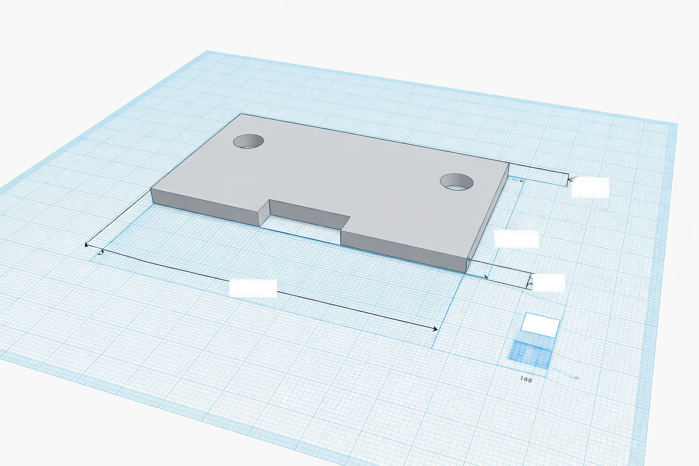
Vous n'êtes pas obligé de faire la même chose, faites en fonction de votre design.
2. Rendu numérique (5 min)
- Créer un document LibreOffice Writer.
- Nommez le "4e_S27_nom1_nom2" (pas de prénom)
-
Ouvrez le document et y mettre OBLIGATOIREMENT les informations suivantes:
- Séance 27 : Modéliser les pièces de la mini-serre
- Nom et prénom des membres du groupe
- Seulement après avoir fait cela, vous pouvez continuer.
- Prenez un screen de la vue de face (avec l'encoche)
- Mettez le dans votre document avec comme légende: "Vue de face"
- Prenez un screen de la vue de dessus
- Mettez le dans votre document avec comme légende: "Vue de dessus"
-
Copiez le tableau suivant:
Ce tableau vous aide à garder une trace de ce que vous faites, et pourquoi vous le faites.Élément Dimension Pourquoi c’est important Base Longueur: 120mm x Largeur : 80mm x Hauteur : 3mm stabilité et place disponible Trous Ø (diamètre) 6mm fixation / passage collier Encoche Longueur : 20mm x largeur : 8mm passage d’un câble - Enregistrez le travail dans le dossier de partage
À copier à la main
Aujourd’hui, nous avons découvert la modélisation 3D avec Tinkercad.
Nous avons appris à nous repérer dans un espace 3D, à créer une forme simple, à régler ses dimensions en millimètres et à utiliser un “trou” pour enlever de la matière.
Nous avons modélisé un socle utile pour la mini-serre connectée, puis nous avons enregistré et partagé notre travail.
La modélisation 3D permet de concevoir et vérifier une pièce avant de la fabriquer.
Séance 28 : Contraintes dimensionnelles et assemblage
Thème : Création, conception, réalisation, innovations technologiques
Compétence visée : Concevoir et représenter une solution technique (modélisation 3D)
Objectifs d’apprentissage-
Ce que les élèves vont apprendre (connaissances) :
- Une pièce 3D se construit à partir de formes simples (solides) qu’on dimensionne, positionne et assemble.
- En modélisation, on doit respecter des contraintes : dimensions, épaisseur, emboîtement, passage des câbles, stabilité.
- Un objet fabriqué (impression 3D) a besoin de règles simples : épaisseur minimale, trous, ajustements.
-
Ce qu’ils vont apprendre à faire (capacités) :
- Utiliser Tinkercad pour créer une pièce avec des cotes précises.
- Réaliser un assemblage simple (ajout / alignement / groupement).
- Produire et rendre un fichier 3D (lien Tinkercad + export STL) + captures d’écran.
Pourquoi ce cours
Pour fabriquer (ou préparer à fabriquer) une mini-serre, il faut des pièces qui s’emboîtent et qui respectent des dimensions réelles. La modélisation 3D permet de passer de l’idée à une pièce précise, testable et améliorable.
Mise en route (5 min)
Aujourd’hui, vous modélisez une pièce utile de la mini-serre, avec des dimensions précises.
Objectif de l’heure : une pièce simple, propre, et mesurée (pas besoin de faire “beau”, besoin de faire “juste”).
Consignes de modélisation (5 min)
Pièce à modéliser aujourd’hui : le socle (plateau) de la mini-serre.
C’est la pièce la plus simple et la plus utile : elle sert de base, et on peut ensuite y ajouter parois/couvercle.
-
Dimensions conseillées :
- Plateau : 118 mm x 78 mm
- Épaisseur : 3 mm
Travail sur Tinkercad (30 min)
- Créer un document LibreOffice Writer.
- Nommez le "4e_S28_nom1_nom2" (pas de prénom)
-
Ouvrez le document et y mettre OBLIGATOIREMENT les informations suivantes:
- Séance 28 : Contraintes dimensionnelles et assemblage
- Nom et prénom des membres du groupe
- Seulement après avoir fait cela, vous pouvez continuer.
-
Étape A — Créer le cadre (rebords) (12 min)
-
Objectif : faire un “cadre” autour du plateau (pour tenir les parois).
- Glisser une nouvelle Box
-
Mettre :
- L = 118
- l = 78
- h = 100
- Dupliquer cette box (CTRL+D)
-
Sur la copie :
- passer en Hole (trou)
-
mettre :
- L = 116
- l = 76
- h = 100
-
Sélectionner les 2 formes → Aligner (outil “Align”)
- centrer sur X et Y
- Sélectionner les 2 → Group
- Renommer : Cadre
-
Étape B — Poser le cadre sur le plateau (5 min)
- Mettre le cadre au-dessus du plateau
- Sélectionner plateau + cadre → Aligner
-
Vérifier que le cadre est bien “posé” (hauteur) :
- le plateau fait 3 mm
- le cadre commence au-dessus du plateau (ou tu peux les fusionner)
- Sélectionner le tout → Group (si tu veux une pièce unique)
-
Étape C — Faire le trou pour les cables (5 min)
- Mettre un bloc en mode perçage
-
Dimensions:
- longueur : 20mm
- largeur : 3mm
- hauteur : 10mm
- Sélectionner le cadre → Aligner
- Aligner au milieu du mur face (celui ou se trouve le trou de la base)
- Sélectionner le tout → Group
Contrôle qualité + rendu (10 min)
-
Check-list à faire AVANT de rendre (2 min)
- Les dimensions du plateau sont correctes (120 x 80 x 3)
- Il y a un cadre (rebords) de 10 mm
- Il y a 2 trous (6 mm) visibles
- Les objets sont groupés (si demandé)
-
Dans votre document, ajoutez:
- Lien Tinkercad
-
2 captures d’écran
- Vue de dessus
- Vue en perspective isométrique (en diagonal, vue de dessus/face/côté, de façon a voir toute la pièce modélisée)
-
Copier le tableau suivant (avec vos valeurs si différentes):
Élément Valeur Nom de la pièce Socle (plateau + rebords) Dimensions 120 x 80 x 13 (au total) Rôle Base de la mini-serre, support des parois + passage des câbles
À copier à la main
Aujourd’hui, nous avons modélisé une pièce de la mini-serre connectée sur Tinkercad.
Nous avons appris à créer des formes simples, à saisir des dimensions précises et à assembler des éléments (aligner, percer, grouper).
Nous avons réalisé un socle avec un plateau, des rebords et des trous pour le passage de câbles.
La modélisation 3D permet de représenter une solution technique avant de la fabriquer et de vérifier qu’elle respecte les contraintes.
Séance 30 : Modélisation de la base de la serre
Thème : Création, conception, réalisation, innovations technologiques
Compétence visée : Concevoir et représenter une solution technique (modélisation 3D)
Objectifs d’apprentissage-
Ce que les élèves vont apprendre (connaissances) :
- Une pièce 3D se construit à partir de formes simples (solides) qu’on dimensionne, positionne et assemble.
- En modélisation, on doit respecter des contraintes : dimensions, épaisseur, emboîtement, passage des câbles, stabilité.
- Un objet fabriqué (impression 3D) a besoin de règles simples : épaisseur minimale, trous, ajustements.
-
Ce qu’ils vont apprendre à faire (capacités) :
- Utiliser Tinkercad pour créer une pièce avec des cotes précises.
- Réaliser un assemblage simple (ajout / alignement / groupement).
- Produire et rendre un fichier 3D (lien Tinkercad + export STL) + captures d’écran.
Pourquoi ce cours
Vous savez modéliser une pièce simple, mais pour faire une mini-serre, il faut modéliser plusieurs pièces qui s’assemblent : socle, parois, toit, ouvertures. Aujourd’hui, on modélise la base de la serre (socle) en respectant les dimensions et les contraintes du cahier des charges.
Let's GO !!!!!
- Créer un document LibreOffice Writer.
- Nommez le "4e_S30_nom1_nom2" (pas de prénom)
-
Ouvrez le document et y mettre OBLIGATOIREMENT les informations suivantes:
- Séance 30 : Modélisation de la base de la serre
- Nom et prénom des membres du groupe
- Seulement après avoir fait cela, vous pouvez continuer.
-
Modéliser la base (le socle qui fera tenir votre mini-serre) en respectant les contraintes suivantes :
- Dimensions conseillées :
- Longueur : 120 mm (12 cm)
- Largeur : 80 mm (8 cm)
- Prendre un screen de votre travail et le mettre dans votre document avec comme légende: "Mini-serre : Base"
- Ajouter des trous pour permettre, éventuellement, de visser la serre sur un support (ex : un table ou planche en bois)
- Pour ce faire, nous allons utiliser des vis à bois
- Nous prendrons un modèle de vis à bois standard (ex : vis entre 4 et 5 mm de diamètre et entre 50 et 60 mm de longueur)
- Il va donc falloir créer des trous de 4 à 5 mm de diamètre à l’intérieur du socle, à des endroits stratégiques (ex : coins du socle)
- Vous ne pouvez pas placer des trous trop proches les uns des autres (minimum 20 mm entre les centres des trous)
- Vous ne pouvez pas placer des trous trop proche des bords de votre socle (risque de casser)
- Adapter la hauteur de votre base
- Prendre un screen de votre travail et le mettre dans votre document avec comme légende: "Mini-serre : Base + trous"
- Déposer votre document dans le dossier partagé de votre classe (CDC/Ma Classe/Espace d'échange/Techno)
Exemple de base modélisée (vous n’êtes pas obligé de faire exactement la même chose, faites en fonction de votre design) :
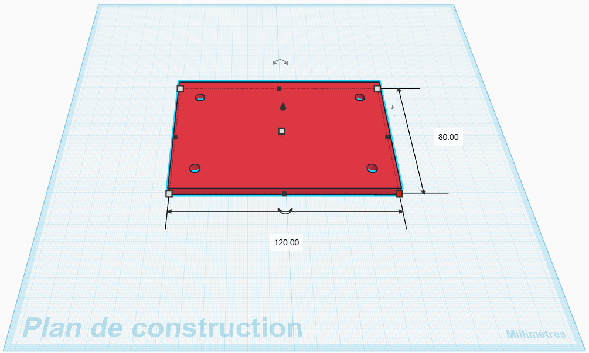
Écrire à la main
Sur une feuille, écrivez à la main, en quelques lignes, ce que vous avez fait aujourd’hui, et ce que vous avez appris.
Séance 31 : Modélisation des murs et des fenêtres de la serre
Thème : Création, conception, réalisation, innovations technologiques
Compétence visée : Concevoir et représenter une solution technique (modélisation 3D)
Objectifs d’apprentissage-
Ce que les élèves vont apprendre (connaissances) :
- Une pièce 3D se construit à partir de formes simples (solides) qu’on dimensionne, positionne et assemble.
- En modélisation, on doit respecter des contraintes : dimensions, épaisseur, emboîtement, passage des câbles, stabilité.
- Un objet fabriqué (impression 3D) a besoin de règles simples : épaisseur minimale, trous, ajustements.
-
Ce qu’ils vont apprendre à faire (capacités) :
- Utiliser Tinkercad pour créer une pièce avec des cotes précises.
- Réaliser un assemblage simple (ajout / alignement / groupement).
- Produire et rendre un fichier 3D (lien Tinkercad + export STL) + captures d’écran.
Pourquoi ce cours
Vous savez modéliser une pièce simple, mais pour faire une mini-serre, il faut modéliser plusieurs pièces qui s’assemblent : socle, parois, toit, ouvertures. Aujourd’hui, on modélise les murs et les fenêtres de la serre en respectant les dimensions et les contraintes du cahier des charges.
Let's GO !!!!!
- Créer un document LibreOffice Writer.
- Nommez le "4e_S31_nom1_nom2" (pas de prénom)
-
Ouvrez le document et y mettre OBLIGATOIREMENT les informations suivantes:
- Séance 31 : Modélisation des murs et des fenêtres de la serre
- Nom et prénom des membres du groupe
- Seulement après avoir fait cela, vous pouvez continuer.
-
Modéliser les murs et les fenêtres de la serre en respectant les contraintes suivantes :
- Dimensions conseillées :
- Longueur : 118 mm (11,8 cm)
- Hauteur : 103 mm (10,3 cm)
- Épaisseur : entre 2 et 3 mm (0,2 / 0,3 cm)
- Créez un nouveau modèle, nous n'allons pas faire les murs sur un autre projet, que nous réunirons avec la base plus tard
- Par simplicité d'impression, mais aussi par praticité, il est conseillé de faire des murs qui, plus tard, s'emboitent ensemble, plutôt que des murs simples déjà relié ensemble (mais c'est vous qui voyez)
- Prendre un screen de votre travail et le mettre dans votre document avec comme légende: "Mini-serre : Murs"
- Ajouter des fenêtres fixent (qui ne peuvent pas être ouvertes).
- Elles serviront à voir a travers la serre pour surveiller notre plante.
- Elles serviront aussi à aérer la serre (si on les ouvre, plus tard dans le projet)
- Il faut faire des trous dans les murs pour faire les fenêtres (pas besoin de faire des vitres, on peut laisser les trous vides)
- Les fenêtres doivent être assez grandes pour voir la plante (ex : 48,5 mm de longueur x 38,5 mm de hauteur)
- Mettez en autant que vous le souhaitez (selon votre design)
- Prendre un screen de votre travail et le mettre dans votre document avec comme légende: "Mini-serre : Murs + fenêtres"
- Déposer votre document dans le dossier partagé de votre classe (CDC/Ma Classe/Espace d'échange/Techno)
Exemple de murs et fenêtres modélisés (vous n’êtes pas obligé de faire exactement la même chose, faites en fonction de votre design) :
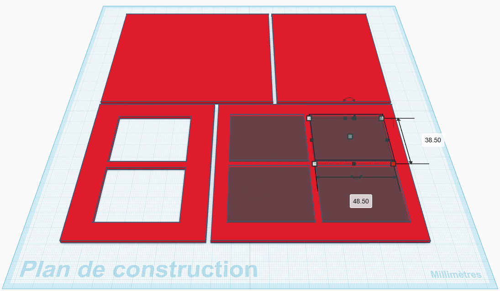
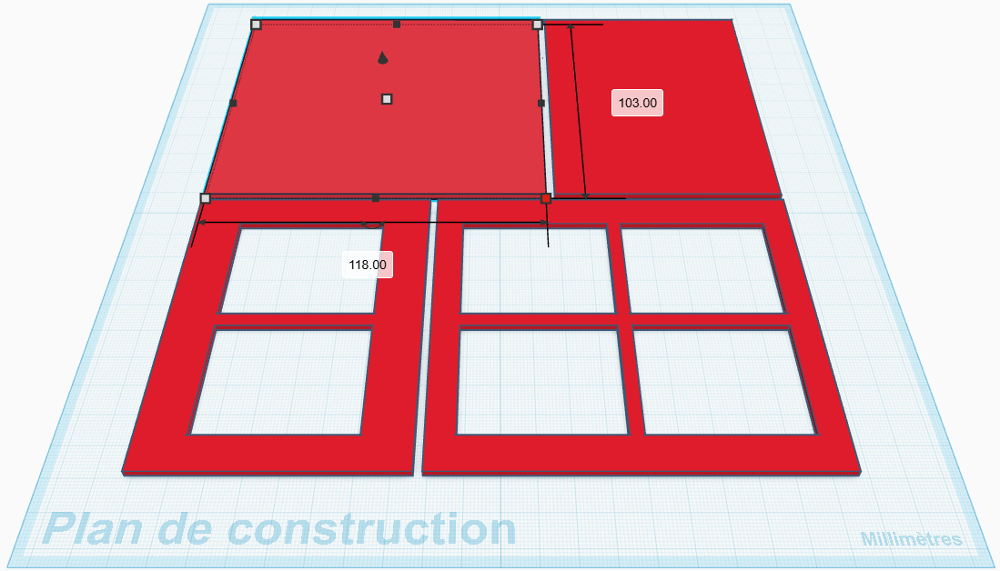
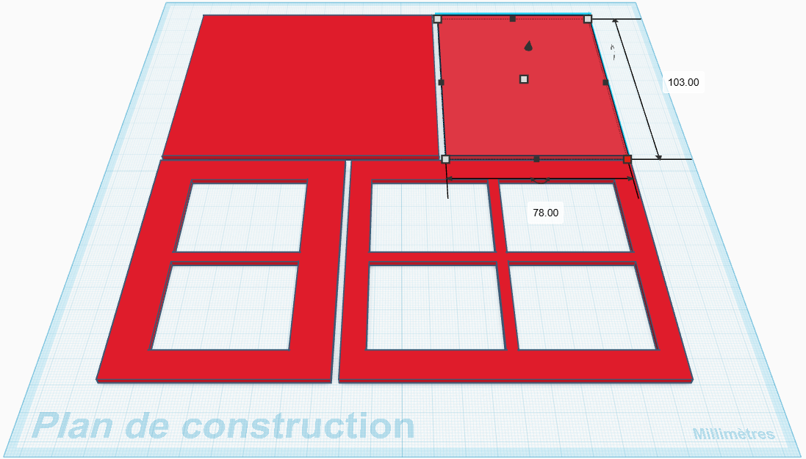
Écrire à la main
Sur une feuille, écrivez à la main, en quelques lignes, ce que vous avez fait aujourd’hui, et ce que vous avez appris.
Séance 32 : Modélisation des rainures d’assemblage de la serre
Thème : Création, conception, réalisation, innovations technologiques
Compétence visée : Concevoir et représenter une solution technique (modélisation 3D)
Objectifs d’apprentissage-
Ce que les élèves vont apprendre (connaissances) :
- Une pièce 3D se construit à partir de formes simples (solides) qu’on dimensionne, positionne et assemble.
- En modélisation, on doit respecter des contraintes : dimensions, épaisseur, emboîtement, passage des câbles, stabilité.
- Un objet fabriqué (impression 3D) a besoin de règles simples : épaisseur minimale, trous, ajustements.
-
Ce qu’ils vont apprendre à faire (capacités) :
- Utiliser Tinkercad pour créer une pièce avec des cotes précises.
- Réaliser un assemblage simple (ajout / alignement / groupement).
- Produire et rendre un fichier 3D (lien Tinkercad + export STL) + captures d’écran.
Pourquoi ce cours
Vous savez modéliser une pièce simple, mais pour faire une mini-serre, il faut modéliser plusieurs pièces qui s’assemblent : socle, parois, toit, ouvertures. Aujourd’hui, on modélise les rainures (murs et base) qui permettront d’assembler les différentes pièces de la serre en respectant les dimensions et les contraintes du cahier des charges.
Let's GO !!!!!
- Créer un document LibreOffice Writer.
- Nommez le "4e_S32_nom1_nom2" (pas de prénom)
-
Ouvrez le document et y mettre OBLIGATOIREMENT les informations suivantes:
- Séance 32 : Modélisation des rainures d’assemblage de la serre
- Nom et prénom des membres du groupe
- Seulement après avoir fait cela, vous pouvez continuer.
-
Modéliser les murs et les fenêtres de la serre en respectant les contraintes suivantes :
- Dimensions conseillées :
- jeu : ~0.25 / ~0.5 mm (0.25 à 0.5 cm)
- Si vous avez fait des murs qui s'emboitent, très bien, vous allez maintenant faire les rainures d’assemblage (c’est-à-dire les parties qui permettent de faire un emboîtement entre les murs).
- Faites des rainures de 0,25 / 0,5 mm de largeur, par rapport aux dimensions de vos murs (selon votre design)
- Si votre mur fait 2 mm d'épaisseur, il faudra faire des rainures de 2.25 mm / 2.5 mm
- Rappelez-vous, en mécanique, c'est ce qu'on appel le "jeu" (c'est-à-dire l'espace entre deux pièces qui s'emboîtent)
- Prendre un screen de votre travail et le mettre dans votre document avec comme légende: "Mini-serre : Murs + rainures"
- Faites la même chôse pour la base (le socle) en gardant le même jeu que pour les murs
- Prendre un screen de votre travail et le mettre dans votre document avec comme légende: "Mini-serre : Base + rainures"
- Déposer votre document dans le dossier partagé de votre classe (CDC/Ma Classe/Espace d'échange/Techno)
Exemple de murs et fenêtres rainurés (vous n’êtes pas obligé de faire exactement la même chose, faites en fonction de votre design) :
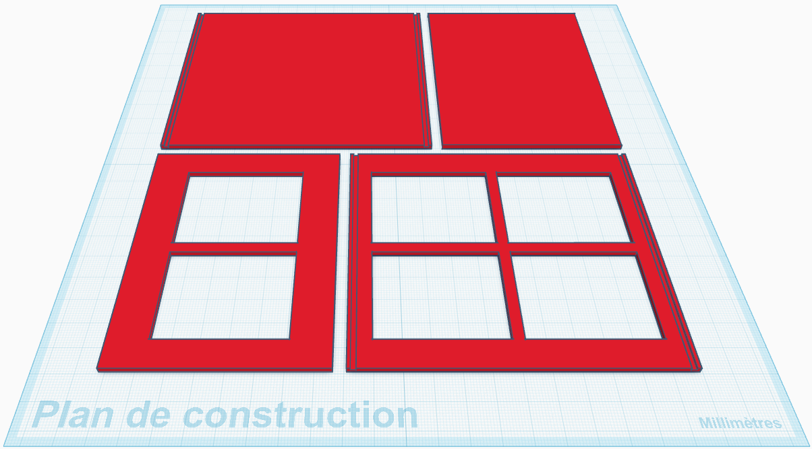
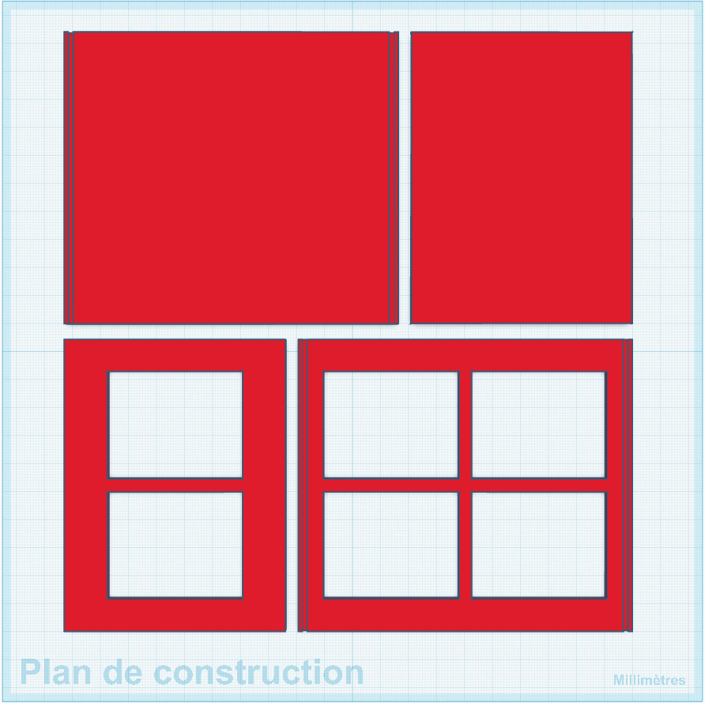
Exemple de base rainuré (vous n’êtes pas obligé de faire exactement la même chose, faites en fonction de votre design) :
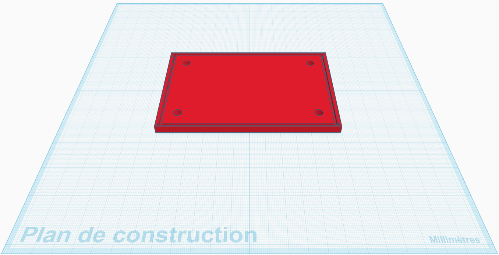
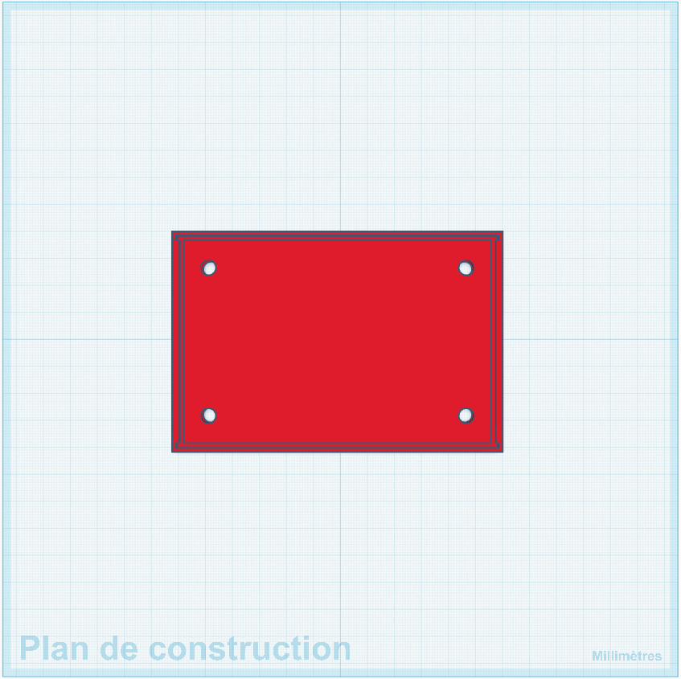
Écrire à la main
Sur une feuille, écrivez à la main, en quelques lignes, ce que vous avez fait aujourd’hui, et ce que vous avez appris.
Séance 33 : Premier assemblage (virtuel) des pièces et modifications
Thème : Création, conception, réalisation, innovations technologiques
Compétence visée : Concevoir et représenter une solution technique (modélisation 3D)
Objectifs d’apprentissage-
Ce que les élèves vont apprendre (connaissances) :
- Une pièce 3D se construit à partir de formes simples (solides) qu’on dimensionne, positionne et assemble.
- En modélisation, on doit respecter des contraintes : dimensions, épaisseur, emboîtement, passage des câbles, stabilité.
- Un objet fabriqué (impression 3D) a besoin de règles simples : épaisseur minimale, trous, ajustements.
-
Ce qu’ils vont apprendre à faire (capacités) :
- Utiliser Tinkercad pour créer une pièce avec des cotes précises.
- Réaliser un assemblage simple (ajout / alignement / groupement).
- Produire et rendre un fichier 3D (lien Tinkercad + export STL) + captures d’écran.
Pourquoi ce cours
Vous savez modéliser une pièce simple, mais pour faire une mini-serre, il faut modéliser plusieurs pièces qui s’assemblent : socle, parois, toit, ouvertures. Aujourd’hui, on assemble virtuellement nos différentes pièces, on vérifie que tout s’emboîte bien et on fait les modifications nécessaires.
Let's GO !!!!!
- Créer un document LibreOffice Writer.
- Nommez le "4e_S33_nom1_nom2" (pas de prénom)
-
Ouvrez le document et y mettre OBLIGATOIREMENT les informations suivantes:
- Séance 33 : Premier assemblage (virtuel) des pièces et modifications
- Nom et prénom des membres du groupe
- Seulement après avoir fait cela, vous pouvez continuer.
- Vous allez assembler vos pièces dans Tinkercad (ajout / alignement / groupement)
- Pour ce faire, vous allez créer une troisième conception 3D et copier/coller toutes vos pièces précédentes dans la nouvelle conception
- Assemblez vos pièces dans cette nouvelle conception
- Vérifiez que tout s’emboîte bien (vous devriez avoir un léger jeu entre les pièces) et faites les modifications nécessaires
- Zoomez sur vos rainures afin d'être sur que les pièces s’emboîtent correctement
- Prendre un screen de votre travail et le mettre dans votre document avec comme légende: "Mini-serre : premier assemblage"
- Prendre un screen de vos rainures et le mettre dans votre document avec comme légende: "Mini-serre : vérification rainures"
- S'il vous reste du temps, vous pouvez améliorer votre design (ajouter des détails, modifier les dimensions, etc.)
- Si vous faites des modifications, prenez un screen de votre travail modifié et le mettre dans votre document avec comme légende: "Mini-serre : modification du design du ../../.... (la date du jour)"
- Déposer votre document dans le dossier partagé de votre classe (CDC/Ma Classe/Espace d'échange/Techno)
Exemple d'assemblage (vous n’êtes pas obligé de faire exactement la même chose, faites en fonction de votre design) :
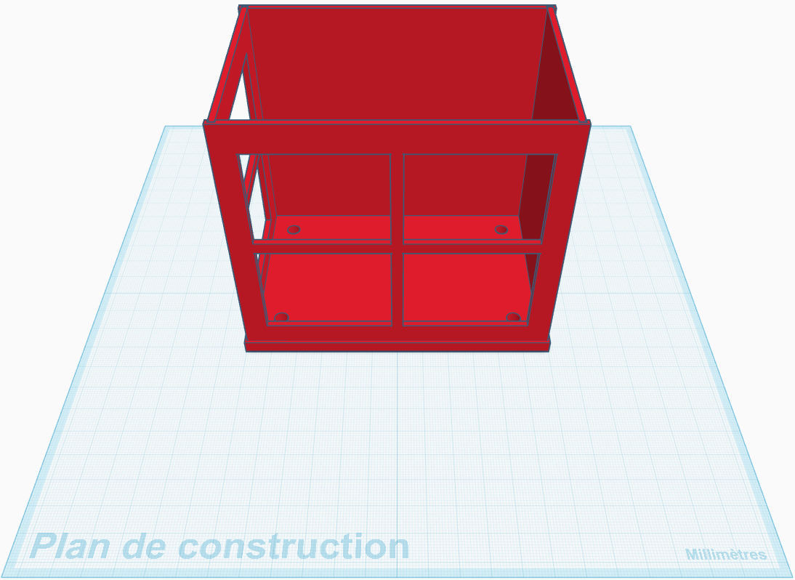
Exemple de rainures qui semble bonne (il reste un peu de jeu, les pièces ne se chevauchent pas) (vous n’êtes pas obligé de faire exactement la même chose, faites en fonction de votre design) :
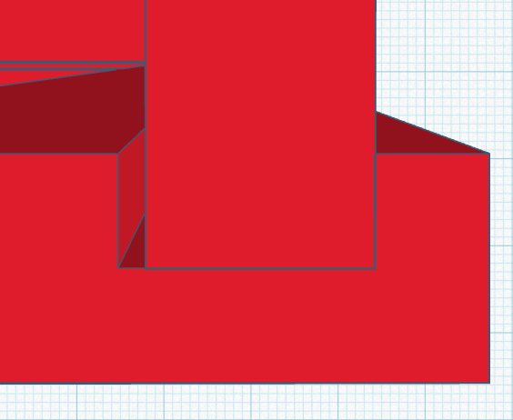
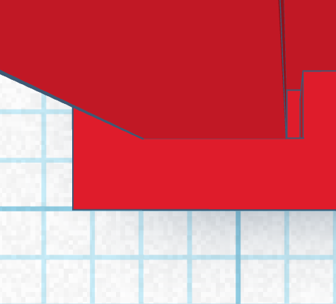
Exemple de modification rendant le design plus agréable et plus travaillé (il reste un peu de jeu, les pièces ne se chevauchent pas) (vous n’êtes pas obligé de faire exactement la même chose, faites en fonction de votre design) :
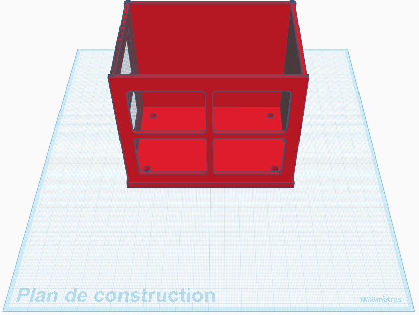
Écrire à la main
Sur une feuille, écrivez à la main, en quelques lignes, ce que vous avez fait aujourd’hui, et ce que vous avez appris.
Séance 39 : Données de la serre : organiser, nommer et retrouver ses fichiers
Thème 3 : Création, conception, réalisation, innovations technologiques (projet mini-serre connectée)
Compétence visée : Usages du numérique / gestion de l’information : organiser et conserver des données et des documents de projet (fichiers, dossiers, formats)
Objectifs d’apprentissage-
Ce que les élèves vont apprendre (connaissances) :
- Un fichier a un nom, une extension (format) et une taille.
- Une arborescence (dossiers/sous-dossiers) sert à classer et retrouver rapidement le travail.
-
Certains formats sont adaptés à certains usages :
- .docx / .odt : document texte (compte-rendu)
- .pdf : document “figé” (rendu final)
- .png / .jpg : image (capture, photo)
- .csv / .ods / .xlsx : données/tableur (mesures)
- Des tailles de fichiers différentes ont un impact sur le stockage et le partage (ENT, mail, cloud).
-
Ce qu’ils vont apprendre à faire (capacités) :
- Créer une arborescence de projet claire (dossiers + sous-dossiers).
- Nommer correctement des fichiers avec une convention commune.
- Faire une capture d’écran, l’enregistrer au bon format, au bon endroit.
- Relever taille et extension d’un fichier.
- Produire et rendre un document de synthèse (1 page) prouvant que l’organisation est maîtrisée.
Pourquoi ce cours
Parce qu’un projet (comme la mini-serre) produit vite beaucoup de documents : captures de programmes, schémas, mesures, comptes-rendus… Si les fichiers sont mal rangés ou mal nommés, on perd du temps, on rend n’importe quoi, et on ne sait plus retrouver son travail. Aujourd’hui, on met en place une organisation standard pour toute la fin d’année.
1) Lancement + objectif + consigne de rendu
“Aujourd’hui : on organise le dossier du projet serre et on prouve qu’on sait retrouver nos fichiers.” Livrable à rendre en fin d’heure : un document 1 page Nom1_Nom2_Serre_Fichiers.pdf (ou .docx) avec captures + tableau.
2) Création de l’arborescence
Dans Documents, créee le dossier principal et nommez le "Projet_Serre_4e"
-
À l’intérieur, créer exactement ces sous-dossiers :
- 01_Documents
- 02_Images
- 03_Programmes
- 04_Donnees_CSV
- 05_Rendus
3) Nommage standard : la règle commune
Nom de fichier = Classe_Nom1_Nom2_Sxx_TitreCourt_V1.ext
-
Exemples :
- 4e_Dupont_Martin_SA_Organisation_V1.docx
- 4e_Dupont_Martin_S32_ProgrammeSerre_V1.png
- 4e_Dupont_Martin_SA_TaillesFichiers_V1.csv
4) Production guidée : créer 3 fichiers de 3 types différents
-
Chaque binôme doit créer et ranger correctement :
-
A. Un document texte (Writer)
- Ouvrir Writer
- Titre : “Projet Serre — Organisation des fichiers”
- Enregistrer dans 01_Documents avec le nom :
- 4e_S39_Nom1_Nom2_SA_Organisation_V1.odt
-
B. Une image (capture d’écran)
- Faire une capture de l’arborescence (explorateur de fichiers affiché)
- Enregistrer l’image dans 02_Images :
- 4e_S39_Nom1_Nom2_SA_Arborescence_V1.png
-
C. Un fichier de données
- Ouvrir un tableur (Calc)
-
Créer un mini tableau de 5 lignes “Mesures fictives” :
minute temperature 0 21 1 22 2 22 3 23 4 23 - Exporter / enregistrer en CSV dans 04_Donnees_CSV :
- 4e_S39_Nom1_Nom2_SA_MesuresTest_V1.csv
5) Observer : extension + taille + usage
Dans le document texte (A), ajoutez le tableau :
| Nom du fichier | Extension | Taille (Ko/Mo) | À quoi ça sert dans le projet serre ? |
|---|---|---|---|
| (votre doc) | .docx/.odt | … | compte-rendu |
| (votre image) | .png | … | preuve / illustration |
| (votre CSV) | .csv | … | données à traiter |
6) Rendu
- Le document texte est complété puis exporté en PDF et placé dans : 05_Rendus (Nom du rendu : 4e_S39_Nom1_Nom2_SA_RenduFichiers_V1.pdf)
- Copier / Coller le PDF dans l'espace d'échange
À copier à la main
Aujourd’hui, nous avons appris à organiser le travail numérique du projet “mini-serre connectée”. Nous avons créé une arborescence de dossiers, appliqué une règle de nommage commune et produit plusieurs types de fichiers (document, image, données CSV). Nous avons appris à repérer l’extension, le format et la taille d’un fichier, et à choisir le bon type de fichier selon l’usage. Cette organisation permet de retrouver rapidement notre travail et de rendre un projet propre et complet.
Séance 40 : Mesurer pour de vrai : protocole + collecte (prototype de serre non réalisé)
Thème 3 : Création, conception, réalisation, innovations technologiques (projet mini-serre connectée)
Compétence visée : Données issues d’un objet technique : acquérir, enregistrer et exploiter une série de mesures
Objectifs d’apprentissage-
Ce que les élèves vont apprendre (connaissances) :
- Un prototype peut être virtuel (modélisation 3D) ou réel : même sans serre fabriquée, on peut tester des choix grâce à des mesures.
- Un capteur mesure une grandeur physique (ici : température) et fournit une valeur numérique.
- Un protocole de mesure permet d’obtenir des données fiables (mêmes conditions, même durée, même intervalle).
- Une série de mesures doit être repérée (temps, minute, numéro de mesure) pour être exploitable.
- Une donnée peut être influencée par l’environnement (main, soleil, proximité d’un radiateur, courant d’air).
-
Ce qu’ils vont apprendre à faire (capacités) :
- Écrire un protocole simple de mesure (quoi, comment, combien de temps, à quel intervalle).
- Programmer la Micro:bit pour afficher des mesures de température à intervalles réguliers.
- Collecter une série de mesures (au moins 20 valeurs) et la recopier dans un tableau.
- Enregistrer la série de mesures dans un fichier (tableur) qui servira aux séances suivantes.
- Expliquer en quelques phrases comment ces mesures aideront à choisir un seuil de “surchauffe” pour la future serre.
Pourquoi ce cours
Notre serre connectée est pour l’instant un prototype virtuel (modélisation 3D). Pourtant, pour la programmer correctement, il faut des données réelles : température, lumière, humidité… Aujourd’hui, on commence par la température (capteur intégré à la Micro:bit). Les mesures collectées serviront ensuite à construire un fichier CSV, faire des calculs (moyenne, min, max), tracer un graphique et choisir un seuil d’alerte réaliste, comme si la Micro:bit était intégrée dans la serre.
1) Lancement + consigne de rendu
Objectif du jour : récolter une série de mesures de température avec un protocole clair,
pour pouvoir ensuite programmer un seuil adapté à la future serre.
Livrables à rendre :
- Un document texte (1 page) : protocole + tableau de mesures + remarque(s) sur les conditions de mesure + phrase “à quoi ça sert pour la serre ?”.
- Un fichier tableur (Calc) contenant la série de mesures.
2) Écrire le protocole de mesure
Dans un document texte (Writer), chaque binôme rédige un protocole simple en répondant à ces 5 questions :
- Quelle grandeur mesure-t-on ?
- Avec quel capteur ?
- Combien de mesures ?
- À quel intervalle ?
- Dans quelles conditions ?
Nom du document : 4e_S40_Nom1_Nom2_Protocole_V1.odt (à enregistrer dans 01_Documents)
3) Programmer la Micro:bit pour mesurer
Sur MakeCode, créer un projet : Serre_MesuresTemp. Puis réaliser le programme suivant (blocs) :
- Créer une variable : temp
- Dans toujours :
- mettre temp = température (°C)
- afficher temp
- pause 10000 ms (10 secondes)
Télécharger sur la Micro:bit et vérifier que la température s’affiche.
Important : Ne pas toucher la carte pendant la série “table” (sinon la température monte).
4) Collecte des données
Chaque binôme réalise 2 séries (pour comparer et simuler une situation “normale” et une “hausse”) :
- Série A : “température normale” (Micro:bit posée, sans toucher) : 10 mesures
- Série B : “température augmentée” (main proche / tenir brièvement) : 10 mesures
Remplir le tableau dans votre document texte :
| Mesure n° | Série A (normale) en °C | Série B (augmentée) en °C |
|---|---|---|
| 1 | … | … |
| 2 | … | … |
| 3 | … | … |
| 4 | … | … |
| 5 | … | … |
| 6 | … | … |
| 7 | … | … |
| 8 | … | … |
| 9 | … | … |
| 10 | … | … |
À écrire dans le document (2 phrases minimum) :
- Pourquoi la série B est généralement plus élevée ?
- Comment ces mesures vont aider à choisir un seuil d’alerte (ex : “si T > … alors alerte”) dans le futur programme de la serre ?
5) Enregistrer la série dans un tableur (Calc)
Ouvrir Calc, recopier le tableau sous forme de colonnes :
- colonne A : mesure
- colonne B : temp_normale
- colonne C : temp_augmentee
Enregistrer dans 04_Donnees_CSV :
4e_S40_Nom1_Nom2_MesuresTemp_V1.ods
6) Rendu
- Document texte complété (protocole + tableau + explication) → export PDF → déposer dans 05_Rendus
- Fichier tableur .ods enregistré dans 04_Donnees_CSV
- Nom du PDF :
4e_S40_Nom1_Nom2_RenduProtocoleMesures_V1.pdf - Copier / Coller le PDF dans l'espace d'échange
À copier à la main
Aujourd’hui, nous avons mesuré la température avec la carte Micro:bit pour obtenir des données réelles, même si la serre n’est pas encore fabriquée. Nous avons écrit un protocole de mesure (conditions, intervalle, nombre de mesures) et collecté deux séries de valeurs (température normale et température augmentée). Nous avons compris que l’environnement influence une mesure et qu’une série de données doit être organisée pour être exploitée dans un tableur. Ces mesures serviront à choisir un seuil d’alerte et à programmer le comportement de la future serre connectée.
Séance 41 : Créer une table de données exploitable (structurer)
Thème 3 : Création, conception, réalisation, innovations technologiques (projet mini-serre connectée)
Compétence visée : Structuration des données : organiser une table de données exploitable (en-têtes, unités, types, valeurs manquantes)
Objectifs d’apprentissage-
Ce que les élèves vont apprendre (connaissances) :
- Une table de données exploitable contient des en-têtes clairs (noms de colonnes) et des unités.
- Une donnée doit avoir un type : nombre (température), texte (commentaire), booléen (vrai/faux).
- Une table exploitable évite les erreurs : pas de mélange d’unités, pas de cellules fusionnées, pas de texte à la place d’un nombre.
- Les valeurs manquantes doivent être gérées (laisser vide ou écrire “NA” selon la consigne, sans inventer).
-
Ce qu’ils vont apprendre à faire (capacités) :
- Ouvrir un fichier tableur contenant des mesures et le mettre en forme correctement.
- Créer des en-têtes normalisés (nom + unité) et vérifier que les colonnes contiennent le bon type de données.
- Repérer et corriger des erreurs courantes (texte au lieu de nombre, colonnes mal nommées, données incomplètes).
- Produire une version “propre” de la table, prête à être exportée en CSV et analysée.
Pourquoi ce cours
Dans les prochaines séances, nous allons trier, filtrer, calculer et faire des graphiques à partir de nos mesures. Si la table de données est mal construite, les calculs seront faux ou impossibles. Aujourd’hui, nous transformons nos mesures en une table exploitable : claire, propre, et prête pour l’analyse.
1) Lancement + consigne de rendu
Objectif du jour : rendre votre table de données exploitable.
Livrables à rendre :
- Un fichier tableur “propre” (version V2)
- Une capture d’écran de la table propre + une mini-checklist remplie (dans un document texte)
2) Ouvrir et vérifier la table
Ouvrir le fichier de mesures (séance 40) dans Calc. Vérifier les points suivants :
- Les colonnes sont-elles bien séparées ? (pas de données dans une seule colonne)
- Les valeurs sont-elles des nombres (pas “23°C”, pas de texte) ?
- Les lignes correspondent-elles à des mesures (1 ligne = 1 mesure) ?
3) Standardiser les en-têtes et les unités
En ligne 1, remplacer les titres par les en-têtes suivants (obligatoires) :
- Colonne A : mesure (entier)
- Colonne B : temp_normale_C (nombre)
- Colonne C : temp_augmentee_C (nombre)
Consigne importante : on met l’unité dans le nom de colonne (ici : _C), et on ne met pas “°C” dans les cellules.
4) Ajouter une colonne “commentaire” (type texte)
Ajouter une colonne D : commentaire (texte).
Renseigner au moins 2 lignes :
- Une remarque sur une mesure “normale” (ex : “Micro:bit posée sur la table”)
- Une remarque sur une mesure “augmentée” (ex : “main proche / tenue 10 s”)
Objectif : montrer que certaines données sont des nombres et d’autres du texte.
5) Gestion des valeurs manquantes + contrôle final
Si une mesure manque, ne pas inventer :
- Laisser la cellule vide ou écrire NA (au choix de la classe, mais tout le monde doit faire pareil).
Puis faire le contrôle final avec la checklist :
| Point à vérifier | OK ? |
|---|---|
| En-têtes corrects (mesure / temp_normale_C / temp_augmentee_C / commentaire) | □ Oui / □ Non |
| Colonnes de température = nombres (pas de “°C” dans les cellules) | □ Oui / □ Non |
| 1 ligne = 1 mesure | □ Oui / □ Non |
| Valeurs manquantes gérées (vide ou NA, sans inventer) | □ Oui / □ Non |
| Fichier enregistré au bon endroit avec le bon nom | □ Oui / □ Non |
6) Enregistrer + rendu
- Enregistrer le tableur dans 04_Donnees_CSV :
4e_S41_Nom1_Nom2_MesuresTemp_TablePropre_V2.ods- Faire une capture d’écran de la table propre → enregistrer dans 02_Images :
4e_S41_Nom1_Nom2_CaptureTablePropre_V1.png- Créer un document texte (1/2 page) contenant la capture + la checklist complétée → exporter PDF → déposer dans 05_Rendus :
4e_S41_Nom1_Nom2_RenduTablePropre_V1.pdf- Copier / Coller le PDF dans l'espace d'échange
À copier à la main
Aujourd’hui, nous avons transformé nos mesures de température en une table de données exploitable. Nous avons appris qu’une table doit contenir des en-têtes clairs, des unités indiquées dans les noms de colonnes et des données du bon type (nombres pour les températures, texte pour les commentaires). Nous avons corrigé les erreurs et géré les valeurs manquantes. Cette table propre servira aux prochains traitements (tri, filtre, calculs et graphiques) pour programmer correctement la future serre connectée.
Séance 42 : CSV + tableur : importer, trier, filtrer
Thème 3 : Création, conception, réalisation, innovations technologiques (projet mini-serre connectée)
Compétence visée : Traitement des données : importer un fichier, trier, filtrer et préparer l’analyse
Objectifs d’apprentissage-
Ce que les élèves vont apprendre (connaissances) :
- Un fichier CSV est un fichier de données (table) lisible par un tableur.
- Un tableur permet de trier des données (ordre croissant/décroissant) et de filtrer (afficher seulement certaines lignes).
- Trier et filtrer permettent de repérer plus facilement des valeurs : minimum, maximum, valeurs “anormales”.
- Pour analyser des données, il faut partir d’une table propre (en-têtes corrects, unités, types).
-
Ce qu’ils vont apprendre à faire (capacités) :
- Exporter une table de données en CSV depuis Calc.
- Importer (ouvrir) un CSV dans Calc en vérifiant que les colonnes sont correctement séparées.
- Réaliser un tri sur une colonne de température (croissant et décroissant).
- Réaliser un filtre pour afficher uniquement certaines mesures (ex : température > 25°C).
- Produire une preuve du tri et du filtre (captures) + une conclusion simple.
Pourquoi ce cours
Pour programmer correctement un comportement (seuil d’alerte), il faut comprendre nos données. Aujourd’hui, on apprend à trier et filtrer une table de mesures : c’est une étape indispensable avant les calculs (moyenne, min, max) et avant de choisir un seuil réaliste pour la future serre connectée.
1) Lancement + consigne de rendu
Objectif du jour : transformer votre table propre en CSV, puis effectuer un tri et un filtre.
Livrables à rendre :
- Un fichier CSV exporté depuis votre table propre
- Deux captures : une preuve du tri + une preuve du filtre
- Un mini-document (1/2 page) avec les captures + 3 phrases de conclusion
2) Ouvrir la table propre (séance précédente)
Avant de commencer, créez un document : 4e_S42_Nom1_Nom2_RenduTriFiltre_V1.odt (Writer), en suite vous pourrez continuer.
Ouvrir dans Calc votre fichier :
4e_S41_Nom1_Nom2_MesuresTemp_TablePropre_V2.ods
Vérifier rapidement que la ligne 1 contient bien les en-têtes :
mesure / temp_normale_C / temp_augmentee_C / commentaire.
3) Exporter en CSV
Dans Calc :
- Fichier → Enregistrer sous
- Choisir le dossier : 04_Donnees_CSV
- Nom :
4e_S42_Nom1_Nom2_MesuresTemp_V1.csv - Type : Texte CSV (.csv)
- Valider les options CSV proposées (séparateur : virgule ou point-virgule selon réglage)
4) Tri : repérer les valeurs les plus faibles et les plus fortes
Réaliser 2 tris sur la colonne temp_normale_C :
- Tri croissant (du plus petit au plus grand)
- Tri décroissant (du plus grand au plus petit)
Noter dans le document texte :
- La plus petite valeur de temp_normale_C et la mesure correspondante
- La plus grande valeur de temp_normale_C et la mesure correspondante
5) Filtre : afficher seulement les températures au-dessus d’un seuil
Activer le filtre (Données → Filtre → Filtre automatique).
Sur la colonne temp_augmentee_C, appliquer un filtre :
- Afficher uniquement les lignes où temp_augmentee_C > 25 (ou un autre seuil donné par l’enseignant)
6) Rendu
- Enregistrer le CSV dans 04_Donnees_CSV :
4e_S42_Nom1_Nom2_MesuresTemp_V1.csv- Enregistrer 2 captures dans 02_Images :
4e_S42_Nom1_Nom2_CaptureTri_V1.png4e_S42_Nom1_Nom2_CaptureFiltre_V1.png- Créer un document texte contenant les 2 captures + 3 phrases de conclusion → exporter PDF → déposer dans 05_Rendus :
4e_S42_Nom1_Nom2_RenduTriFiltre_V1.pdf- Copier / Coller le PDF dans l'espace d'échange
À copier à la main
Aujourd’hui, nous avons appris à traiter une table de données avec un tableur. Nous avons exporté nos mesures au format CSV, puis réalisé des tris et des filtres pour repérer rapidement des valeurs importantes. Trier permet de trouver les valeurs minimum et maximum, et filtrer permet d’afficher uniquement les mesures répondant à une condition (ex : température > seuil). Ces traitements nous aideront à analyser les données et à choisir un seuil réaliste pour programmer la future serre connectée.
Séance 43 : Calculs utiles dans le tableur : min / max / moyenne + choix d’un seuil
Thème 3 : Création, conception, réalisation, innovations technologiques (projet mini-serre connectée)
Compétence visée : Traitement des données : effectuer des calculs simples (min, max, moyenne) et justifier un choix à partir de données
Objectifs d’apprentissage-
Ce que les élèves vont apprendre (connaissances) :
- Un tableur peut faire des calculs automatiques à partir d’une colonne de données.
- Les valeurs minimum, maximum et moyenne aident à décrire un ensemble de mesures.
- Un seuil est une valeur choisie pour déclencher une action (ex : alerte si température > seuil).
- Un seuil doit être justifié à partir des données (pas “au hasard”).
-
Ce qu’ils vont apprendre à faire (capacités) :
- Utiliser les fonctions du tableur : MIN, MAX, MOYENNE.
- Comparer la série “normale” et la série “augmentée”.
- Choisir un seuil d’alerte et l’expliquer avec une phrase claire.
- Produire un document de rendu avec captures et résultats.
Pourquoi ce cours
Pour programmer correctement une alerte, il faut savoir à partir de quelle température on considère que c’est “trop chaud”. Aujourd’hui, nous allons utiliser nos mesures pour calculer des indicateurs (min, max, moyenne) et choisir un seuil d’alerte réaliste. Ce seuil sera utilisé dans le programme Micro:bit lors d’une séance suivante.
1) Lancement + consigne de rendu
Objectif du jour : calculer min, max, moyenne et proposer un seuil d’alerte justifié.
Livrables à rendre :
- Un fichier tableur complété avec une zone “Résultats”
- Un PDF (1 page) avec : résultats + captures + seuil proposé + justification
2) Ouvrir le fichier de données
Ouvrir dans Calc le fichier de la séance précédente (au choix) :
4e_S41_Nom1_Nom2_MesuresTemp_TablePropre_V2.ods(recommandé)- ou
4e_S42_Nom1_Nom2_MesuresTemp_V1.csv(si besoin)
3) Créer une zone “Résultats”
- Copiez le document précédemment ouvert (de préférence, 4e_S41_Nom1_Nom2_MesuresTemp_TablePropre_V2.ods) → collez-le → renommez la copie :
- 4e_S43_Nom1_Nom2_CalculsSeuil_V1.ods
| Indicateur | temp_normale_C | temp_augmentee_C |
|---|---|---|
| MIN | … | … |
| MAX | … | … |
| MOYENNE | … | … |
4) Réaliser les calculs (formules)
Utiliser les fonctions du tableur (Calc) :
- MIN(plage) : plus petite valeur
- MAX(plage) : plus grande valeur
- MOYENNE(plage) : moyenne
- MIN de la colonne “temp_normale_C” (lignes des mesures)
- MAX de la colonne “temp_normale_C”
- MOYENNE de la colonne “temp_normale_C”
- Pareil pour “temp_augmentee_C”
5) Choisir un seuil d’alerte (justifié)
Proposer un seuil d’alerte “température trop élevée” (en °C).
Règle simple (au choix, mais obligatoire) :
- Option 1 : seuil = MAX(temp_normale_C) + 1
- Option 2 : seuil = MOYENNE(temp_normale_C) + 2
Exemple : “Nous choisissons un seuil de … °C car la température normale maximale est … °C. Au-delà, on considère que la serre surchauffe.”
6) Rendu
- Enregistrer le tableur complété dans 04_Donnees_CSV :
4e_S43_Nom1_Nom2_CalculsSeuil_V1.ods- Faire une capture d’écran de la zone “Résultats” + seuil proposé → enregistrer dans 02_Images :
4e_S43_Nom1_Nom2_CaptureResultats_V1.png- Créer un document texte (1 page) avec la capture + le tableau de résultats + le seuil + la justification → exporter PDF → déposer dans 05_Rendus :
4e_S43_Nom1_Nom2_RenduCalculsSeuil_V1.pdf- Copier / Coller le PDF dans l'espace d'échange
À copier à la main
Aujourd’hui, nous avons utilisé un tableur pour calculer des indicateurs sur une série de mesures : minimum, maximum et moyenne. Ces calculs permettent de décrire et comparer deux situations (température normale et température augmentée). À partir de ces résultats, nous avons choisi un seuil d’alerte justifié par les données, afin de déclencher une action lorsque la température dépasse cette valeur. Ce seuil servira à programmer le comportement de la future serre connectée.
Séance 44 : Créer et mettre en forme un tableau dans Calc
Niveau : 4ᵉ
Durée : 40 minutes
Logiciel : LibreOffice Calc
Thème
Organiser des données dans un tableur et améliorer leur lisibilité grâce à la mise en forme.
Compétence visée
Créer un tableau lisible et structuré dans un tableur numérique.
Objectifs d’apprentissage
Connaissances
- Un tableau doit être organisé et lisible.
- Les couleurs permettent de mieux distinguer certaines informations.
- La mise en forme facilite la lecture des données.
Capacités
- Créer un tableau dans Calc.
- Modifier la taille des colonnes et lignes.
- Ajouter des bordures et des couleurs.
- Utiliser la coloration conditionnelle.
- Préparer un tableau pour la création de graphiques.
Pourquoi ce cours ?
Avant de créer un graphique, les données doivent être bien organisées et faciles à lire. Aujourd’hui, vous allez transformer un simple ensemble de données en un tableau clair, propre et compréhensible.
Matériel nécessaire
- Ordinateur avec LibreOffice Calc
- Fichier de départ ou données à recopier
- Vidéoprojecteur
Déroulement de la séance
1. Introduction — 5 minutes
Question orale :
Pourquoi utilise-t-on des couleurs dans un tableau ?
- Repérer rapidement une information
- Différencier les catégories
- Voir les résultats importants
Montrer un tableau brut puis le même tableau mis en forme.
2. Activité principale — 25 minutes
Étape 1 : Création du tableau
Les élèves saisissent le tableau suivant :
| Élève | Moyenne |
|---|---|
| Lina | 14 |
| Hugo | 9 |
| Sarah | 16 |
| Enzo | 11 |
| Jade | 7 |
Étape 2 : Mise en forme
- Mettre le titre en gras
- Centrer les données
- Ajouter des bordures
- Changer la couleur du titre
- Ajuster la largeur des colonnes
Étape 3 : Coloration conditionnelle
Consigne :
- Notes inférieures à 10 en rouge
- Notes supérieures ou égales à 10 en vert
Chemin :
Format → Condition → Condition
3. Mise en commun — 5 minutes
- Quel tableau est le plus lisible ?
- Pourquoi utiliser des couleurs ?
- Pourquoi préparer un tableau propre avant un graphique ?
Annonce de la prochaine séance : création de graphiques et interprétation des résultats.
Trace écrite
- Un tableau doit être clair et organisé.
- La mise en forme améliore la lecture des données.
- La coloration conditionnelle permet de faire ressortir automatiquement certaines valeurs.
- Un tableau bien présenté facilite la création de graphiques.
Séance 46 : Graphique + interprétation : comprendre le comportement à partir des données
Thème 3 : Création, conception, réalisation, innovations technologiques (projet mini-serre connectée)
Compétence visée : Représenter et interpréter des données : réaliser un graphique et en tirer une conclusion
Objectifs d’apprentissage-
Ce que les élèves vont apprendre (connaissances) :
- Un graphique permet de visualiser rapidement l’évolution d’une grandeur (ici la température) et de comparer deux séries.
- Un graphique doit avoir un titre, des axes nommés et une unité.
- Deux séries de données peuvent être comparées sur le même graphique (normale / augmentée).
- Interpréter un graphique, c’est décrire ce qu’on voit avec des phrases précises (hausse, stabilité, écarts, valeurs extrêmes).
-
Ce qu’ils vont apprendre à faire (capacités) :
- Créer un graphique dans Calc à partir d’un tableau de mesures.
- Ajouter un titre, nommer les axes et vérifier l’unité.
- Comparer deux séries (temp_normale_C et temp_augmentee_C).
- Écrire une conclusion claire basée sur le graphique (6 à 8 lignes).
- Produire un rendu (graphique + analyse) à déposer en fin d’heure.
Pourquoi ce cours
Les calculs (min, max, moyenne) donnent des informations utiles, mais un graphique permet de comprendre “d’un coup d’œil” la forme des données : évolution, stabilité, écarts, tendances. Aujourd’hui, nous transformons nos mesures en graphique pour mieux interpréter ce qui se passe et préparer le réglage final du seuil et du programme Micro:bit.
1) Lancement + consigne de rendu
Objectif du jour : réaliser un graphique propre et écrire une interprétation.
Livrables à rendre :
- Un fichier tableur contenant le graphique
- Une image du graphique (export) + un PDF avec l’analyse (6 à 8 lignes)
2) Ouvrir le fichier des mesures
Ouvrir dans Calc le fichier :
4e_S43_Nom1_Nom2_CalculsSeuil_V1.ods
Vérifier que les colonnes mesure, temp_normale_C et temp_augmentee_C sont bien présentes.
3) Créer le graphique (courbes)
Sélectionner les colonnes :
- mesure
- temp_normale_C
- temp_augmentee_C
4) Mettre le graphique au propre
Dans les options du graphique, ajouter obligatoirement :
- Titre : “Température mesurée (normale vs augmentée)”
- Axe X : “Numéro de mesure”
- Axe Y : “Température (°C)”
- Légende : visible (normale / augmentée)
5) Interpréter le graphique (6 à 8 lignes)
Dans un document texte, écrire une interprétation en utilisant les phrases-guides suivantes :
- La température “normale” est globalement… (stable / varie peu / augmente légèrement) avec des valeurs entre … et … °C.
- La température “augmentée” est… (plus élevée / augmente plus vite) avec des valeurs entre … et … °C.
- L’écart entre les deux séries est environ de … °C.
- On observe un maximum à la mesure n°… et un minimum à la mesure n°…
- Conclusion : ces données montrent que… (ex : une hausse de température déclenche un dépassement du seuil)
6) Rendu
- Enregistrer le tableur (option "enregistrer sous") avec le graphique dans 04_Donnees_CSV :
4e_S46_Nom1_Nom2_GraphiqueTemp_V1.ods- Exporter le graphique en image (ou faire une capture) → enregistrer dans 02_Images :
4e_S46_Nom1_Nom2_GraphiqueTemp_V1.png- Créer un document texte avec l’image + l’interprétation (6 à 8 lignes) → exporter PDF → déposer dans 05_Rendus :
4e_S46_Nom1_Nom2_RenduGraphiqueAnalyse_V1.pdf- Copier / Coller le PDF dans l'espace d'échange
À copier à la main
Aujourd’hui, nous avons représenté nos mesures de température sous forme de graphique dans un tableur. Le graphique permet de visualiser et comparer deux séries de données (température normale et température augmentée). Nous avons appris qu’un graphique doit être correctement présenté (titre, axes, unité, légende) et qu’il doit être interprété avec des phrases précises. Cette analyse nous aide à comprendre le comportement du système et à préparer le réglage du seuil et du programme de la future serre connectée.
Séance 47 : Du tableur au programme : régler un comportement (seuil d’alerte)
Thème 3 : Création, conception, réalisation, innovations technologiques (projet mini-serre connectée)
Compétence visée : Programmer un comportement : utiliser des données pour modifier un programme et le tester
Objectifs d’apprentissage-
Ce que les élèves vont apprendre (connaissances) :
- Un programme peut être réglé à partir de données réelles (seuil d’alerte basé sur des mesures).
- Une condition (si… alors… sinon) permet de déclencher une action quand une valeur dépasse un seuil.
- Tester un programme consiste à vérifier qu’il réagit correctement dans plusieurs situations.
- Une modification de programme doit être justifiée (avec les calculs et/ou le graphique).
-
Ce qu’ils vont apprendre à faire (capacités) :
- Récupérer le seuil choisi à la séance 46 (justifié par les données).
- Modifier un programme MakeCode pour intégrer ce seuil.
- Téléverser le programme sur la Micro:bit et tester deux situations : température normale / augmentée.
- Réaliser un “avant / après” (captures) et expliquer ce qui a changé.
- Produire un rendu clair en fin d’heure.
Pourquoi ce cours
Nous avons collecté, structuré et analysé des données (tableur, calculs, graphique). Maintenant, nous allons utiliser ces résultats pour faire un choix technique concret : régler un seuil d’alerte dans un programme. Même si la serre n’est pas fabriquée, nous pouvons déjà programmer son comportement et vérifier qu’il fonctionne avec des tests.
1) Lancement + consigne de rendu
Objectif du jour : intégrer le seuil choisi dans un programme Micro:bit et le tester.
Livrables à rendre :
- Un projet MakeCode modifié (preuve par capture)
- Un PDF avec : seuil + justification + captures “avant / après” + tableau de tests
2) Récupérer le seuil choisi
Ouvrir votre rendu de la séance 48 et noter votre seuil :
Seuil d’alerte = … °C
(ex : MAX(temp_normale_C) + 1, ou MOYENNE(temp_normale_C) + 2)
3) Ouvrir / reconstruire le programme de base
Sur MakeCode, créer un nouveau projet : Serre_AlerteSeuil.
Programmer la base suivante :
- Créer une variable : temp
- Dans toujours :
- mettre temp = température (°C)
- afficher temp
- pause 1000 ms
4) Ajouter la condition “alerte”
Dans toujours, remplacer l’affichage simple par une condition :
- SI temp > SEUIL :
- afficher une icône ⚠️
- faire défiler “CHAUD”
- (option) jouer un bip court
- SINON :
- afficher une icône ✅
- (option) faire défiler “OK”
Remplacer SEUIL par votre valeur (ex : 26, 27, 28…).
5) Tester le programme
Télécharger le programme sur la Micro:bit.
Faire 2 tests et remplir le tableau dans le document de rendu :
| Test | Valeur observée (°C) | Résultat attendu | Résultat obtenu |
|---|---|---|---|
| Température normale (carte posée) | … | ✅ / OK | ✅ / ⚠️ |
| Température augmentée (main proche) | … | ⚠️ / CHAUD | ✅ / ⚠️ |
Si le test ne déclenche jamais l’alerte, on peut temporairement baisser le seuil de 1 ou 2 degrés pour vérifier le fonctionnement, puis remettre le seuil justifié (et l’expliquer dans la conclusion).
6) Rendu
- Faire 2 captures du programme (blocs) :
- - capture “programme final avec seuil”
- - capture montrant la condition SI temp > seuil
- Enregistrer les captures dans 02_Images :
4e_S47_Nom1_Nom2_CaptureCode_V1.png4e_S47_Nom1_Nom2_CaptureCondition_V1.png- Créer un document texte (1 page) avec : seuil + justification (rappel séance 46) + tableau de tests + 2 captures → exporter PDF → déposer dans 05_Rendus :
4e_S47_Nom1_Nom2_RenduSeuilProgramme_V1.pdf- Copier / Coller le PDF dans l'espace d'échange
À copier à la main
Aujourd’hui, nous avons utilisé les résultats du tableur (calculs et graphique) pour régler un programme. Nous avons intégré un seuil d’alerte dans une condition (si la température dépasse le seuil, alors alerte). Nous avons téléversé le programme sur la Micro:bit et réalisé des tests en situation normale et en situation de température augmentée. Cette démarche montre comment des données réelles permettent de paramétrer et valider le comportement d’un objet technique, même à l’état de prototype.
Séance 48 : Chaîne d’information de la serre (capteurs → traitement → action)
Thème 3 : Création, conception, réalisation, innovations technologiques (projet mini-serre connectée)
Compétence visée : Décrire le fonctionnement d’un objet technique : identifier la chaîne d’information (acquérir, traiter, communiquer/commander)
Objectifs d’apprentissage-
Ce que les élèves vont apprendre (connaissances) :
- La chaîne d’information décrit comment un système reçoit des informations, les traite et déclenche une action.
- Les étapes de la chaîne d’information sont : Acquérir (capteur) → Traiter (microcontrôleur/programme) → Communiquer / Commander (ordre envoyé à un actionneur ou à un affichage).
- Un capteur fournit une valeur (donnée) qui peut être comparée à un seuil dans un programme.
- Même si la serre n’est pas construite, on peut décrire sa chaîne d’information à partir du prototype et du programme Micro:bit.
-
Ce qu’ils vont apprendre à faire (capacités) :
- Identifier, dans notre projet, ce qui correspond à acquérir, traiter, commander.
- Compléter un schéma-bloc de chaîne d’information (avec flèches et légendes).
- Relier le schéma à un programme MakeCode (condition “si temp > seuil”).
- Produire un document de rendu (schéma complété + explication courte).
Pourquoi ce cours
Nous avons programmé une alerte en fonction de la température. Pour comprendre et expliquer le fonctionnement d’un objet technique, il faut savoir représenter le chemin de l’information : d’où vient la mesure, comment elle est traitée, et quel ordre est envoyé. Aujourd’hui, nous construisons la chaîne d’information de la future serre connectée en nous appuyant sur le programme Micro:bit.
1) Lancement + consigne de rendu
Objectif du jour : réaliser la chaîne d’information de la serre.
Livrable à rendre : 1 PDF avec un schéma complété + 5 lignes d’explication.
2) Rappel rapide
Rappel de la séance 47 (programme) :
SI température > seuil ALORS alerte.
Question : “Où est l’information ? Qui la traite ? Qu’est-ce qui agit ?”
3) Identifier les éléments de la chaîne
Par binôme, remplir ce tableau dans un document texte :
| Étape | Rôle | Élément dans notre projet serre |
|---|---|---|
| Acquérir | Mesurer une grandeur | Capteur de température intégré à la Micro:bit |
| Traiter | Décider à partir de la mesure | Microcontrôleur + programme MakeCode (condition seuil) |
| Communiquer / Commander | Envoyer un ordre / informer | Affichage LED (icône) + message “CHAUD” (simulation d’une commande) |
| Agir (actionneur futur) | Réaliser l’action | Ventilateur / ouverture (prévu dans la serre, non fabriqué) |
4) Compléter un schéma-bloc
Vous devez réaliser (dans un document) un schéma de chaîne d’information avec des blocs et des flèches.
Modèle à recopier (à compléter avec vos mots) :
- Bloc 1 : ACQUÉRIR → capteur température Micro:bit → “valeur temp (°C)”
- Bloc 2 : TRAITER → Microcontrôleur + programme → “comparaison temp / seuil”
- Bloc 3 : COMMANDER / COMMUNIQUER → ordre envoyé / message → “alerte ⚠️ / OK ✅”
- Bloc 4 (futur) : ACTION → ventilateur / ouverture → “faire baisser la température”
Consigne : Le schéma doit contenir :
- Des flèches
- Les noms des blocs
- Au moins 2 informations sur les flèches (ex : “température (°C)”, “ordre ON/OFF”)
5) Explication écrite (5 lignes)
Dans le document, écrire 5 lignes en utilisant les mots suivants :
capteur, donnée, microcontrôleur, programme, commande, actionneur.
Exemple attendu : “Le capteur mesure… La donnée est traitée par… Le programme compare… Il envoie une commande…”
6) Rendu
- Créer un document texte (Writer) contenant : tableau + schéma + explication (5 lignes) puis l'exporter en PDF
- Enregistrer le PDF dans 05_Rendus :
4e_S48_Nom1_Nom2_RenduChaineInfo_V1.pdf- Copier / Coller le PDF dans l'espace d'échange
À copier à la main
Aujourd’hui, nous avons décrit la chaîne d’information de la future serre connectée. La chaîne d’information permet d’expliquer comment un système mesure une grandeur, traite la donnée et envoie une commande. Dans notre projet, la Micro:bit acquiert la température grâce à un capteur, traite cette information avec un programme (comparaison à un seuil) puis communique un résultat (OK ou alerte). Plus tard, cette commande pourra piloter un actionneur (ventilateur ou ouverture) pour agir sur la serre.
Séance 49 : Chaîne d’énergie de la serre (source → conversion → action)
Thème 3 : Création, conception, réalisation, innovations technologiques (projet mini-serre connectée)
Compétence visée : Décrire le fonctionnement d’un objet technique : identifier la chaîne d’énergie (alimenter, distribuer, convertir, transmettre)
Objectifs d’apprentissage-
Ce que les élèves vont apprendre (connaissances) :
- La chaîne d’énergie décrit comment un système est alimenté en énergie et comment cette énergie permet une action.
- Les fonctions classiques de la chaîne d’énergie sont : Alimenter → Distribuer → Convertir → Transmettre (selon le système).
- Un système peut utiliser plusieurs formes d’énergie (électrique, lumineuse, thermique, mécanique).
- Même si la serre n’est pas fabriquée, on peut décrire sa chaîne d’énergie à partir des éléments prévus (Micro:bit, alimentation, actionneur futur).
-
Ce qu’ils vont apprendre à faire (capacités) :
- Identifier, dans notre projet, ce qui correspond à alimenter, distribuer, convertir, transmettre.
- Compléter un schéma-bloc de chaîne d’énergie (avec flèches, fonctions et exemples concrets).
- Associer une forme d’énergie à chaque étape (électrique, mécanique, thermique, lumineuse).
- Produire un document de rendu (schéma complété + mini-explication).
Pourquoi ce cours
Un objet technique automatisé a besoin d’énergie pour fonctionner : alimenter la carte, faire fonctionner un actionneur, afficher une information. Après avoir étudié la chaîne d’information, nous étudions la chaîne d’énergie pour comprendre comment la serre pourra fonctionner et quelles conversions d’énergie seraient nécessaires si elle était fabriquée (par exemple : électricité → mouvement pour un ventilateur).
1) Lancement + consigne de rendu
Objectif du jour : construire la chaîne d’énergie de la future serre connectée.
Livrable à rendre : 1 PDF avec un schéma complété + 6 lignes d’explication.
2) Rappel rapide
Rappel : une serre connectée doit fonctionner (carte, capteurs) et parfois agir (ventiler / ouvrir / arroser). Question : “D’où vient l’énergie ? Comment devient-elle une action ?”
3) Identifier les éléments de la chaîne d’énergie
Par binôme, compléter ce tableau dans un document texte :
| Fonction | Rôle | Élément dans notre projet serre | Forme d’énergie |
|---|---|---|---|
| Alimenter | Fournir l’énergie au système | Câble USB (ordinateur) / boîtier piles (si utilisé) | Électrique ? / Mécanique ? / Les 2 ? |
| Distribuer | Répartir l’énergie vers les composants | Carte Micro:bit (bornes + gestion interne) | Électrique ? / Mécanique ? / Les 2 ? |
| Convertir | Transformer l’énergie en action utile | (Prévu) ventilateur / moteur / servo | Électrique ? / Mécanique ? / Les 2 ? |
| Transmettre (si nécessaire) | Transmettre le mouvement à une partie | (Prévu) axe/engrenage/volet (selon conception) | Électrique ? / Mécanique ? / Les 2 ? |
4) Compléter un schéma-bloc
Vous devez réaliser un schéma-bloc de chaîne d’énergie (blocs + flèches + formes d’énergie).
Modèle à recopier et compléter :
- ALIMENTER → USB / piles → énergie électrique
- DISTRIBUER → Micro:bit → énergie électrique distribuée
- CONVERTIR → ventilateur → électricité → mouvement (énergie mécanique)
- TRANSMETTRE → mécanisme → mouvement transmis
- ACTION UTILE → ventiler / ouvrir → baisser la température
Consigne : Le schéma doit contenir :
- Les blocs “Alimenter, Distribuer, Convertir, Transmettre (si besoin)”
- Des flèches avec la forme d’énergie (électrique, mécanique…)
- Une phrase finale “action utile”
5) Explication écrite (6 lignes)
Dans le document, écrire 6 lignes en utilisant les mots :
énergie, alimenter, distribuer, convertir, moteur/ventilateur, action utile.
Exemple attendu : “La serre est alimentée par… L’énergie est distribuée… Elle est convertie par… pour obtenir…”
6) Rendu
- Créer un document texte contenant : tableau + schéma + explication (6 lignes) → exporter PDF
- Enregistrer le PDF dans 05_Rendus :
4e_S49_Nom1_Nom2_RenduChaineEnergie_V1.pdf- Copier / Coller le PDF dans l'espace d'échange
À copier à la main
Aujourd’hui, nous avons décrit la chaîne d’énergie de la future serre connectée. La chaîne d’énergie explique comment un système est alimenté, comment l’énergie est distribuée, puis convertie pour produire une action utile. Dans notre projet, la Micro:bit est alimentée par une source électrique (USB ou piles) et distribue l’énergie aux composants. Si la serre était fabriquée, un actionneur (par exemple un ventilateur) convertirait l’énergie électrique en énergie mécanique pour agir sur la température. Cette représentation permet de comprendre et expliquer le fonctionnement énergétique d’un objet technique.
Séance 50 : Réseau local : qui fait quoi ? + comprendre une adresse IP (niveau collège)
Thème 3 : Création, conception, réalisation, innovations technologiques (projet mini-serre connectée)
Compétence visée : Réseaux informatiques : identifier les éléments d’un réseau local et comprendre le rôle d’une adresse IP
Objectifs d’apprentissage-
Ce que les élèves vont apprendre (connaissances) :
- Un réseau local (LAN) relie plusieurs appareils dans un même lieu (collège, maison).
- Différents équipements ont des rôles différents : terminal, serveur, commutateur (switch), routeur, point d’accès Wi-Fi.
- Une adresse IP identifie un appareil sur un réseau (comme une adresse postale).
- Une adresse IP (IPv4) est composée de 4 nombres entre 0 et 255 (ex : 192.168.1.15).
- Le débit indique la quantité de données transmise par seconde (ex : Mbit/s) et influence la vitesse (vidéo, téléchargement).
-
Ce qu’ils vont apprendre à faire (capacités) :
- Reconnaître les principaux éléments d’un réseau local et expliquer leur rôle.
- Réaliser un schéma simple d’un réseau (terminaux + box/routeur + switch + serveur).
- Lire et vérifier une adresse IP (format, cohérence des nombres).
- Compléter un document numérique (schéma + questions) et le rendre en fin d’heure.
Pourquoi ce cours
Une serre “connectée” est un objet technique qui peut envoyer des données ou être commandé. Pour comprendre ce que signifie “connectée”, il faut connaître les bases d’un réseau local : quels appareils communiquent, qui distribue la connexion, et comment un appareil est identifié grâce à une adresse IP. Aujourd’hui, on apprend le vocabulaire et les rôles essentiels, avec un schéma simple et des exercices courts.
1) Lancement + consigne de rendu
Objectif du jour : comprendre un réseau local et l’adresse IP.
Livrable à rendre : 1 PDF contenant un schéma de réseau + un tableau “rôles” + exercices IP.
- Avant de commencer, créer un document texte (Writer)
- l’enregistrer dans l'espace d'échange avec ce nom :
4e_S50_Nom1_Nom2_RenduReseauIP_V1.odt- Mettre OBLIGATOIREMENT dans le document, les informations suivantes :
- Le titre de la séance : Séance 50 : Réseau local : qui fait quoi ? + comprendre une adresse IP (niveau collège)
- Nom et prénom des élèves du groupe
- SEULEMENT après avoir fait ça, vous pourrez commencer
2) Recherche rapide (sur ordinateur) : définitions
Par binôme, rechercher une définition courte (1 phrase) de :
- Réseau local (LAN)
- Routeur
- Switch (commutateur)
- Serveur
- Adresse IP
3) Tableau “Qui fait quoi ?”
Dans le document texte, copiez puis complétez le tableau :
| Équipement | Rôle (en 1 phrase) | Exemple au collège / à la maison |
|---|---|---|
| Terminal | … | PC, tablette, téléphone |
| Routeur (box) | … | Box Internet |
| Switch (commutateur) | … | Boîtier réseau (salle info) |
| Point d’accès Wi-Fi | … | Borne Wi-Fi |
| Serveur | … | Serveur ENT / fichiers |
4) Schéma simple d’un réseau local
Dans un logiciel de dessin / diapo, réaliser un schéma simple :
- Internet → Routeur (box)
- Routeur → Switch
- Switch → 3 terminaux (PC1, PC2, imprimante)
- Routeur → Wi-Fi → 1 terminal (téléphone ou tablette)
- (option) Un serveur relié au switch
Consigne : Le schéma doit être lisible avec des flèches/câbles et les noms des équipements.
Copiez / collez ce schéma dans votre document texte (Writer) pour le rendu.
5) Exercices “Adresse IP”
Compléter les exercices dans le document :
- Exercice 1 : Indiquer si ce sont des adresses IP valides (oui/non) :
- 192.168.1.12
- 300.10.2.5
- 10.0.0.254
- 172.16.5
- Exercice 2 : Dans le réseau “192.168.1.X”, proposer 3 adresses IP possibles pour PC1, PC2, Micro:bit (connectée via un futur module), sans les dupliquer :
- PC1 : 192.168.1.…
- PC2 : 192.168.1.…
- Serre (futur) : 192.168.1.…
- Exercice 3 : Expliquer en 2 phrases ce que représente une adresse IP.
6) Rendu
- Créer un document texte contenant : définitions + tableau “qui fait quoi” + schéma réseau + exercices IP
- Exporter en PDF dans l'espace d'échange
4e_S50_Nom1_Nom2_RenduReseauIP_V1.pdf
À copier à la main
Aujourd’hui, nous avons découvert les bases d’un réseau local (LAN) : plusieurs appareils communiquent dans un même lieu. Nous avons identifié le rôle des équipements (terminaux, routeur, switch, point d’accès Wi-Fi, serveur) et réalisé un schéma de réseau. Nous avons aussi compris qu’une adresse IP identifie un appareil sur un réseau, sous la forme de quatre nombres (IPv4). Ces notions sont nécessaires pour comprendre ce que signifie “objet connecté”, comme une future serre connectée.
Séance 51 : Simulation réseau + cybersécurité (usage raisonné)
Thème 3 : Création, conception, réalisation, innovations technologiques (projet mini-serre connectée)
Compétence visée : Réseaux et sécurité : valider une communication sur un réseau (simulation) et adopter des pratiques de cybersécurité
Objectifs d’apprentissage-
Ce que les élèves vont apprendre (connaissances) :
- Une communication sur un réseau dépend d’un bon paramétrage : appareils reliés, adresses IP cohérentes, bon routeur/passerelle.
- Une simulation réseau permet de tester un fonctionnement sans matériel réel (valider si “ça communique”).
-
Ce qu’ils vont apprendre à faire (capacités) :
- Compléter une simulation réseau simple (schéma + adresses IP) et vérifier si la communication est possible.
- Repérer une erreur de configuration (adresse invalide, IP en double, appareil non relié).
- Produire un document numérique clair et le rendre en fin de séance.
Pourquoi ce cours
Pour qu’un objet “connecté” puisse envoyer des informations, il doit communiquer sur un réseau et respecter des règles de sécurité. Aujourd’hui, nous validons une communication grâce à une simulation réseau (comme si la serre envoyait des données), puis nous définissons des règles d’usage raisonné : protection des données, traces numériques, et respect des autres (cyberviolence). Ces notions sont essentielles pour utiliser le numérique de manière responsable.
1) Lancement + consigne de rendu
Objectif du jour : réussir une simulation réseau + rédiger une mini-charte cybersécurité.
Livrables à rendre : 1 PDF contenant :
- la simulation complétée (avec réponses)
- Créer un document texte contenant :
- Le titre de la séance: Séance 51 : Simulation réseau + cybersécurité (usage raisonné)
- Les noms et prénoms des élèves du groupes
- Enregistrez-le sous: "4e_S51_Nom1_Nom2_RenduSimulationCyber_V1.odt" dans l'espace d'échange
2) Simulation réseau
Sur ordinateur, ouvrir la simulation fournie par l’enseignant.
Travail demandé :
- Compléter un schéma réseau (Internet → routeur → switch → PC1/PC2/serveur).
- Reliez les différents appareils avec des câbles réseaux.
- Attribuer une adresse IP à chaque appareil dans le réseau 192.168.1.X.
- Vérifier que les adresses sont valides et non identiques.
- Identifier la passerelle (routeur) et expliquer son rôle en 1 phrase.
Exercice (à recopier / compléter dans le rendu) :
| Appareil | Adresse IP | Valide ? | Commentaire (erreur si problème) |
|---|---|---|---|
| Routeur | 192.168.1.1 | Oui | Passerelle |
| PC1 | 192.168.1.… | … | … |
| PC2 | 192.168.1.… | … | … |
| Serveur | 192.168.1.… | … | … |
| Objet connecté (serre future) | 192.168.1.… | … | … |
Mini-questions :
- Pourquoi deux appareils ne peuvent-ils pas avoir la même IP ?
- À quoi sert le routeur dans un réseau local ?
- Donner un exemple de donnée que la serre pourrait envoyer (température, alerte…).
3) Tests du montage
- Vous allez passer en mode simulation (flèche verte)
- Cliquez sur PC1
- Installation des logiciels
- Double cliquez sur "ligne de commande"
- Cliquez sur "appliquer les modifications"
- Cliquer sur le nouveau logiciel
- Il va maintenant falloir vérifier que votre adressage IP fonctionne
- Pour ce faire, prenez l'adresse IP d'une machine différente de celle sur laquelle vous êtes
- Par exemple, si PC2 est à l'adresse suivante : 192.168.1.2
- Dans "ligne de commande", tapez la commande "ping" suivie de l'adresse IP de l'autre machine
- C'est à dire: ping 192.168.1.2
- Si tout c'est bien passé, faites un screen du résultat de la requête
- Faire de même avec le serveur
- Faites un screen du résultat de la requête
- Changer de poste et recommencer vers le premier PC et encore vers le serveur (faire un screen à chaque fois)
- Mettez vos screens dans le documents Writer, avec comme titre, PC... vers PC... ou PC... vers Serveur, etc...
4) Rendu (fin de séance)
-
Votre document doit contenir :
- Simulation complétée (tableau + réponses)
- Les différents screens de bon fonctionnement
- Exporter en PDF et enregistrer dans l'espace d'échange :
4e_S51_Nom1_Nom2_RenduSimulationCyber_V1.pdf- Copier / Coller le PDF dans l'espace d'échange
À copier à la main
Aujourd’hui, nous avons validé le fonctionnement d’un réseau local grâce à une simulation : chaque appareil doit être relié et identifié par une adresse IP cohérente. Nous avons compris que le routeur joue le rôle de passerelle et qu’une mauvaise configuration empêche la communication. Nous avons aussi travaillé la cybersécurité : protéger ses données, utiliser une identification et une authentification correctes, et respecter la propriété intellectuelle. Enfin, nous avons rappelé que les traces numériques existent et que la cyberviolence (usurpation, diffusion, harcèlement) est interdite et punissable.